生成时间：2026-05-06T00:26:26+08:00
今日保留论文数：14
高能天体物理重点
1. XRISM/Resolve observations of Hercules X-1: a pulsating, highly broadened Fe K emission line from the neutron star accretion column
- 来源：arXiv / astro-ph.HE
- 链接：https://arxiv.org/abs/2605.01146v1
- 作者：Peter Kosec, Laura Brenneman, Erin Kara, Ciro Pinto, Daniele Rogantini, Rudiger Staubert, Dominic Walton, Francesco Barra
- 评分：novelty 8/10，importance 8/10，relevance 9/10，final 9.35/10
- 推荐理由：XRISM/Resolve 对 Her X-1 的高分辨 Fe K 线与脉冲相位分辨结果，直接约束中子星吸积柱和可能的进动，是清楚的新观测结果，HE 相关性很高。
中文题目：XRISM/Resolve 观测 Hercules X-1：来自中子星吸积柱的脉冲化、强展宽 Fe K 发射线
做了什么：这篇文章用 XRISM 卫星的 Resolve 微量热计对经典 X 射线脉冲星 Hercules X-1 进行了约 200 ks 的高能谱分辨率观测，重点分析 6–7 keV 附近的 Fe K 波段。作者确认了此前报告过的强展宽铁线：中心约 6.5 keV，典型 1σ 宽度约 1 keV，对应非常大的速度展宽，可能超过 0.1c。更关键的是，Resolve 的分辨率让作者能把窄线、吸收/再处理成分和宽线分开，并做脉冲相位分辨分析；宽 Fe K 特征随中子星自转相位显著变化，还随 Her X-1 的 35 天超轨道周期改变。这支持宽线来自随中子星旋转和进动的吸积柱，而不是普通吸积盘反射。
为什么重要：Her X-1 是研究磁化中子星吸积、吸积柱辐射转移和中子星进动的基准源。强展宽 Fe K 线如果确实来自吸积柱，就提供了一种不同于脉冲轮廓、回旋吸收线和偏振的几何诊断：它直接把柱内高速等离子体运动、再处理和辐射各向异性编码到能谱线型里。XRISM/Resolve 的高分辨率首次让这类宽线不再只是 CCD 谱中的一个模糊残差，而能在复杂 Fe K 区域中被更可靠地拆分和相位追踪。
理论 / 观测 / 仪器方法价值：对理论而言，这项工作推动了对强磁场、强辐射压、强重力环境下吸积柱 Fe K 发射机制的建模，包括碰撞复合、光致电离再处理和速度场线型形成。对观测而言，它展示了微量热计在 X 射线脉冲星宽线研究中的价值，尤其是把宽线、窄荧光线、吸收边和连续谱曲率区分开。对方法而言，相位分辨和 35 天周期分辨的线型变化可作为追踪吸积柱方向和中子星进动的实用工具，并能与 IXPE 偏振结果互相校验。
为什么应该关注：如果你关心中子星内部、磁场几何或极端吸积，这篇文章值得看，因为它把一个长期存在的谱线异常变成了几何和动力学探针。Fe K 宽线的相位变化有望成为测量中子星进动、约束吸积柱高度和速度场的独立观测量。未来如果能用物理线型模型替代现象学高斯线，这类数据可能帮助区分自由进动、盘遮挡、磁轴倾斜和辐射束形变化等互相纠缠的解释。
展开详细解读：文章讲解、背景、理论、重点章节、图表与相关工作
文章详细讲解
科学问题：X 射线脉冲星的吸积柱是强磁场中物质从磁极落向中子星表面的区域，速度可达相当大的相对论性数值，辐射转移又受到磁场、光学深度和几何遮挡的共同影响。Her X-1 过去的 XMM-Newton、NuSTAR 等观测中已经出现过很宽的 Fe K 发射特征，若用多普勒速度解释，要求 v/c 超过 0.1 的量级。问题是：这条宽线到底来自内吸积盘反射、盘风/遮挡结构、还是中子星磁极附近的吸积柱？如果来自吸积柱，它是否会随着脉冲相位和 35 天超轨道周期发生可预测变化？
作者怎么做：论文利用 XRISM/Resolve 的 200 ks 观测，对 Her X-1 的 Fe K 波段进行高分辨率能谱分析。Resolve 微量热计的优势在于能把 Fe K 区域中可能混在一起的多个成分分开：窄的中性或低电离 Fe Kα、He-like/H-like 铁线、吸收或边结构、连续谱曲率，以及真正宽到约 keV 的发射成分。作者采用现象学谱模型确认宽线存在，并进一步按中子星自转脉冲相位切分数据，比较宽线强度、形状或等效宽度如何变化；同时结合 Her X-1 的 35 天周期相位，检查线的脉动模式是否随超轨道周期演化。
关键结果：结果确认 6.5 keV 附近存在强展宽 Fe K 发射线，典型 1σ 宽度约 1 keV。这种宽度很难由 Resolve 仪器分辨率或简单窄线混合解释，也不容易完全归因于常规冷盘反射。宽线随脉冲相位显著变化，符合吸积柱随中子星旋转而改变可见面积、投影速度和照射条件的图像。更有意思的是，Fe K 线的脉动图样还随 Her X-1 的 35 天周期变化，这与中子星及吸积柱进动的设想一致，也与 IXPE 偏振观测对几何变化的指示相呼应。
局限和下一步：论文目前主要使用现象学模型描述宽线，而非完整的磁化吸积柱辐射转移线型模型。因此，线宽和线心虽然强烈暗示高速柱内运动或再处理，但还不能唯一反演柱高度、速度剖面、温度、电离结构和磁场几何。下一步需要把脉冲相位分辨的能谱、偏振、回旋共振散射特征和 35 天周期行为放入统一几何模型中；也需要在更多 X 射线脉冲星上寻找类似宽 Fe K 线，判断 Her X-1 是特例还是磁化吸积柱的普遍现象。
背景知识
Her X-1 是一颗中子星与伴星 HZ Her 构成的经典高质量/中等质量 X 射线双星系统，具有约 1.24 s 的 X 射线脉冲和约 35 天的超轨道调制。35 天周期传统上常被解释为倾斜、翘曲吸积盘的进动导致周期性遮挡和照射变化；但长期以来也有观点认为中子星本体或其辐射束形可能参与进动。这个系统之所以重要，是因为它同时提供脉冲、食、超轨道周期、回旋线、铁线和现在的 X 射线偏振等多种几何诊断。
Fe K 发射线在 X 射线双星中很常见，通常来自冷或电离物质被硬 X 射线照射后的荧光、复合或反射。黑洞和弱磁场中子星系统中的宽 Fe K 线经常被用于测量内吸积盘半径和相对论效应；但在强磁场脉冲星中，内盘被磁层截断，磁极吸积柱可以成为更重要的再处理区。Her X-1 中很宽的 Fe K 线因此提出了一个非典型问题：宽线是不是并非来自盘，而是来自柱内或柱壁的高速等离子体？
现在值得重新看这个问题，原因是 XRISM/Resolve 带来了几 eV 量级的高能谱分辨率，能在 Fe K 区域分辨过去 CCD 或比例计数器难以区分的窄线和宽线成分。与此同时，IXPE 已经开始提供 X 射线偏振约束，使得源几何不再只能靠能谱和光变推断。常见误区是把所有宽 Fe K 线都自动等同于相对论吸积盘反射；在强磁场脉冲星中，磁层截断、柱内速度场、束形和遮挡会让线型解释完全不同。另一个误区是把 Her X-1 的 35 天周期简单视为纯盘遮挡；这篇工作强调谱线相位行为可能携带中子星/吸积柱进动信息。
基础理论 / 方法脉络
核心物理图像是：伴星物质经吸积盘流向中子星，但在磁层半径附近被强磁场俘获，沿磁力线落向磁极，形成一个或两个吸积柱。柱内物质具有高速下落、强辐射场和高电离度；硬 X 射线可以照射周围较冷物质产生 Fe K 荧光，也可以在柱内或柱壁通过复合、散射和再处理形成电离铁线。由于柱随中子星自转，观测者看到的投影速度、遮挡、辐射束形和照射几何都会随脉冲相位变化。
关键量包括线心能量、线宽、线通量、等效宽度、脉冲相位依赖和超轨道相位依赖。中性 Fe Kα 在约 6.4 keV，He-like Fe XXV 在约 6.7 keV，H-like Fe XXVI 在约 6.97 keV；若观测到约 6.5 keV 的宽成分，可能是不同电离态混合、速度位移、康普顿化或重力红移共同作用。1 keV 的高斯 σ 对 6.5 keV 来说是巨大的分数宽度，若主要来自多普勒效应，速度尺度为 σ_E/E 乘以光速，达到 0.1c 以上并不意外。
数据分析逻辑上，微量热计的高分辨率先解决“是否由多条窄线混合伪装成宽线”的问题，再通过相位分辨解决“宽线是否随中子星旋转”的问题。主要 degeneracy 包括：连续谱曲率与宽线强度的退化；窄线群与宽高斯基底的退化；吸收边/局部吸收与发射残差的退化；以及盘反射线型与柱内多普勒展宽线型的退化。系统误差还包括脉冲相位切分后的计数不足、背景和响应矩阵校准、pile-up 或死时间修正、以及 35 天周期中源亮度和遮挡状态变化对谱形的影响。
公式与推导
可以从最简单的线展宽估算开始。若发射线静止能量为 $E_0$，沿视线速度为 $v_{\parallel}$，非相对论近似下观测能量满足
这里 $\Delta E=E-E_0$，$c$ 为光速。若宽线的高斯宽度 $\sigma_E\sim1\,\mathrm{keV}$，线心 $E\sim6.5\,\mathrm{keV}$，则速度弥散尺度约为 $\sigma_v/c\sim \sigma_E/E\sim0.15$，这正是“吸积柱高速运动”解释的直观来源。
若用现象学高斯线表示宽 Fe K 成分，其光子谱可写作
其中 $E_c$ 是线心，$\sigma_E$ 是能量宽度，$N_{\rm line}$ 是总线光子通量。观测上常关心等效宽度
其中 $F_{\rm cont}$ 是连续谱光子通量密度。EW 随脉冲相位变化可区分“线和连续谱同源同束形”还是“线来自再处理区”的情形。
若宽线来自吸积柱中接近自由落体的物质，速度量级可由
估计，$M$ 和 $R$ 为中子星质量和半径，$r$ 为物质开始下落或辐射形成位置的半径。靠近表面时 $v_{\rm ff}$ 可达相当大的 $c$ 的分数；实际速度会被辐射压、冲击和磁场几何改变，因此谱线宽度给出的是投影速度和速度梯度的混合约束。
相位调制可用一个简化几何式表示。若磁轴与自转轴夹角为 $\alpha$，观测方向与自转轴夹角为 $i$，则磁柱方向与视线夹角随自转相位 $\phi$ 为
线通量、投影速度和遮挡都可以是 $\theta$ 的函数，例如 $F_{\rm line}(\phi)\propto B[\theta(\phi)]$，其中 $B$ 表示柱辐射束形或可见面积。若中子星或磁柱发生进动，$i$ 或 $\alpha$ 的有效值会随 35 天周期缓慢变化，从而改变线的脉冲图样。
模型拟合 / 应用方法
这类工作的基本拟合对象是相位平均和相位分辨的 X 射线能谱。连续谱通常需要脉冲星经验模型，例如 cutoff power-law、NPEX、Comptonization 类模型或局部多项式/样条近似；Fe K 区域则叠加窄高斯线、宽高斯线、吸收边或吸收线。Resolve 的优势是窄线宽度接近仪器分辨率时仍可被约束，从而减少它们与宽线的混淆。拟合量包括线心 $E_c$、$\sigma_E$、线通量、EW、连续谱斜率和截断能，以及不同相位 bin 中这些量的变化。
似然通常基于 Poisson 计数统计，实际分析可能采用 C-stat/W-stat 或在高计数下使用 $\chi^2$。相位分辨谱的挑战是每个 bin 计数变少，因此需要在“允许参数自由变化”和“绑定部分参数以提高稳定性”之间取舍。重要的后验/置信区间不是单个最优线宽，而是宽线存在性相对于替代模型的显著性、宽线通量与脉冲相位的相关性，以及加入/去除吸收边或窄线后宽线参数是否稳定。
主要系统误差包括连续谱误建模、能量响应校准、背景估计、脉冲相位对齐、35 天相位定义、以及不同观测状态下遮挡和吸收变化。退化关系尤其集中在线宽与线通量、线心与电离态混合、宽线与反射连续谱之间。实际应用场景是：用相位分辨宽线轮廓拟合吸积柱几何和速度场；用 35 天周期上宽线脉动图样的变化追踪中子星或柱的进动；并与 IXPE 偏振角/偏振度、回旋线能量变化和脉冲轮廓联合建模。残差图应重点看 5.5–8 keV 是否仍有结构性残差，而不是只看全能段统计量是否改善。
重点章节 / 结果段落怎么读
-
引言和科学动机：读者应关注作者如何区分吸积柱宽线与传统吸积盘反射宽线，以及为什么 Her X-1 的 35 天周期使这个源特别适合检验进动几何。
-
观测与数据处理：重点看 XRISM/Resolve 的曝光、筛选、能量校准、背景处理、脉冲周期折叠和 35 天周期相位定义。高分辨率结论依赖响应矩阵和事件筛选，不能只看最终拟合表。
-
相位平均能谱建模：这一节应检查连续谱如何选取，Fe K 区域包含哪些窄线/吸收成分，宽高斯线加入后残差如何变化。尤其要看宽线宽度是否远大于仪器分辨率和窄线混合尺度。
-
脉冲相位分辨分析：这是论文核心。读者应比较不同脉冲相位 bin 中宽线通量、线宽、线心或 EW 的变化，判断变化是否与主脉冲/次脉冲、硬 X 射线峰或遮挡几何相联系。
-
35 天周期和物理解释：重点看作者如何把宽线脉动图样的演化与中子星及吸积柱进动联系起来，并如何与 IXPE 偏振结果相互支持。讨论部分也应留意作者是否承认现象学模型不足，以及未来物理模型需要哪些输入。
建议重点查看的图表
-
全能段或 Fe K 波段的相位平均能谱和残差：看不加宽线时 6–7 keV 是否存在宽而连续的正残差，加入宽线后残差是否系统消失。
-
Fe K 区域的高分辨率放大图：看窄 Fe Kα、Fe XXV/XXVI、吸收/边结构与宽基底是否可分，避免把窄线群误认为宽线。
-
脉冲轮廓与相位 bin 定义：看相位切分是否覆盖主峰、谷值和次峰；线变化是否只是总通量变化的副产物。
-
宽线参数随脉冲相位变化图：重点看线通量、EW、线宽、线心的误差条和相位相关性；EW 比线通量更能反映相对再处理效率。
-
不同 35 天周期相位的线脉动图样对比：看变化是否表现为相位漂移、振幅改变或某些脉冲相位增强，这决定“进动”解释的具体含义。
-
模型比较或稳健性检验表：看替代连续谱、不同窄线设置、不同相位分箱下宽线显著性是否稳定。
-
与 IXPE 或历史观测的几何对照图：如果论文给出，应检查能谱线变化与偏振角/偏振度或历史脉冲轮廓是否在相位上对应。
关键图表逐图导读
图 1：通常应是 XRISM/Resolve 的观测能谱或 Fe K 波段谱图。横轴为能量，纵轴为计数率、解折叠通量或数据/模型比值。读图时要先看仪器分辨率下的窄结构，再看 6.5 keV 附近是否存在跨越约 keV 的宽基底。陷阱是纵轴若为解折叠谱，模型依赖较强，应同时看未解折叠残差。
图 2：相位平均谱模型分解图。横轴能量，纵轴为各模型成分贡献；连续谱、窄线和宽线通常用不同线型表示。关键是宽线是否只是在补偿连续谱弯曲，还是在窄线之外有独立、局域的谱形需求。应检查宽线中心、宽度和总通量的置信区间。
图 3：脉冲轮廓及相位分箱。横轴为自转相位，纵轴为计数率或归一化通量，可能分能段显示。读者应看 Fe K 线强的相位是否对应连续谱峰值、硬度变化或脉冲谷值；如果只看线通量不看 EW，容易把照射增强误读成再处理效率增强。
图 4：宽 Fe K 线参数随脉冲相位变化。横轴为脉冲相位，纵轴可能为线通量、EW、$E_c$、$\sigma_E$。主要结论应来自参数的相干相位调制，而不是个别 bin 的离群点。读图陷阱是相邻相位 bin 可能因相位折叠和响应共享而非完全独立，误差条也可能不包含系统误差。
图 5：35 天周期不同阶段的线脉动模式对比。横轴仍为脉冲相位，纵轴为线强或 EW，不同颜色代表不同超轨道相位或历史观测。关键看调制峰是否发生相位漂移或振幅变化；若只是整体亮度缩放，对中子星进动的约束会弱一些。
图 6：几何解释示意或与偏振结果比较图。应关注磁轴、自转轴、视线、吸积盘法向之间的相对方向，以及模型是否能同时解释脉冲轮廓、Fe K 线和 IXPE 偏振。示意图不能当作定量拟合结果，真正的约束仍来自谱线参数和误差范围。
论文原图 / 可嵌入图片
Fig05
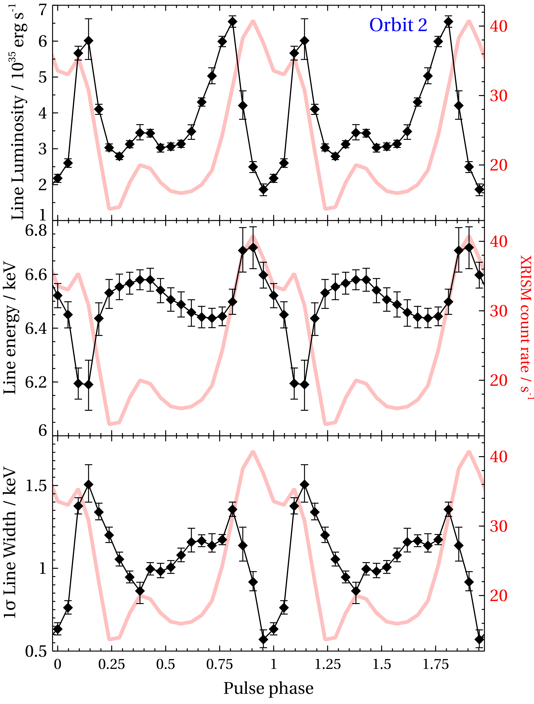
图注：Variation of the broad Fe K line with pulse phase of Her X-1 during Orbit 2. Two pulse periods are shown. The top panel shows the line luminosity, the middle panel the line energy and the lower panel the line width ($1\sigma$). For comparison with continuum pulsation, the \xrism/Resolve count rate is shown in red color in all panels.
对应解读：建议重点查看的图表第4项；关键图表逐图导读中的“宽 Fe K 线参数随脉冲相位变化”；模型拟合段落关于线心、线宽、线通量随相位变化的讨论。
入选理由：这是支撑论文核心结论的最关键图：直接给出宽 Fe K 线 luminosity、线心能量和1σ线宽随自转脉冲相位的变化，并叠加 Resolve 计数率用于判断线变化是否只是连续谱脉动的副产物。比单纯谱图更能证明宽线来自随中子星旋转而改变可见几何的吸积柱。
来源与置信度：arxiv_source；high；arxiv_source / main.tex:figure[5]
Fig08
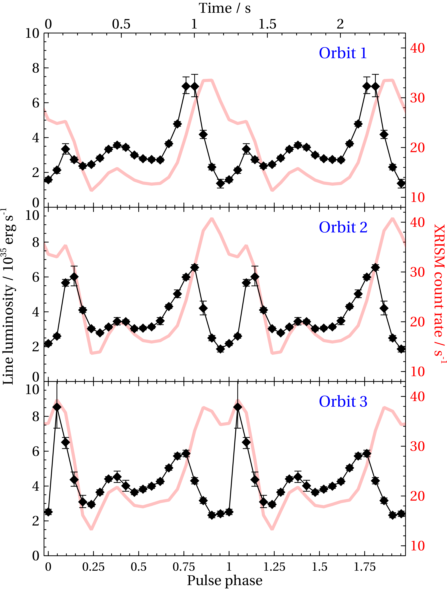
图注：Comparison of the broad Fe K line pulse evolution during Orbit 1 (top panel), Orbit 2 (middle panel) and Orbit 3 (lower panel). The panels show the line luminosity (black) and the \xrism\ count rate (red) versus pulse phase.
对应解读：建议重点查看的图表第5项；关键图表逐图导读中的“35 天周期不同阶段的线脉动模式对比”。
入选理由：该图比较 Orbit 1、2、3 中宽 Fe K 线 luminosity 的脉冲相位演化，并与连续谱计数率对照，是检验线脉动图样是否随 Her X-1 的35天周期演化的直接证据。它最能支撑日报中关于进动解释和不同超轨道阶段线调制变化的讨论。
来源与置信度：arxiv_source；high；arxiv_source / main.tex:figure[8]
Fig03
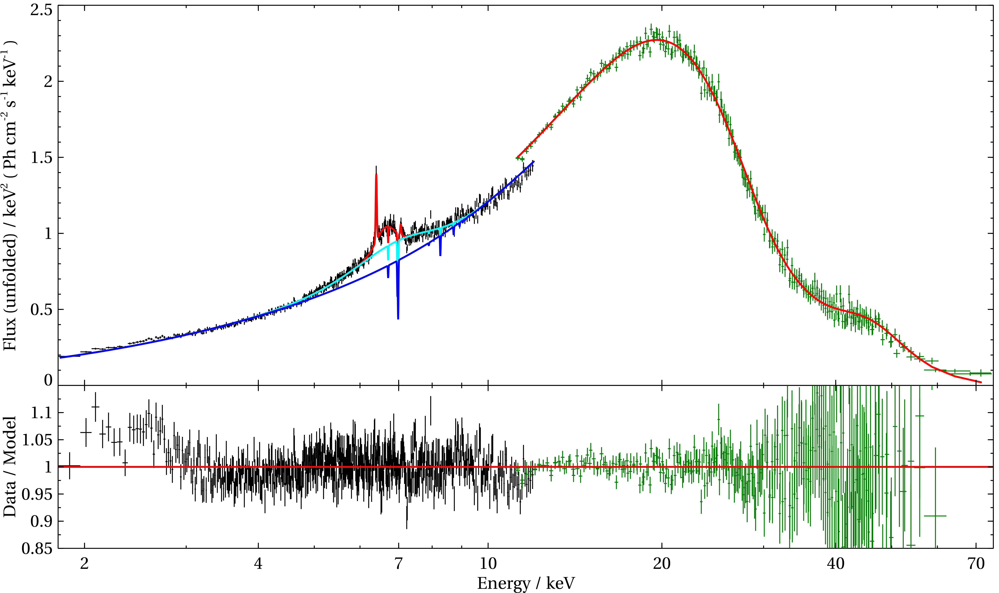
图注：Time-averaged \xrism\ (black) and \nustar\ (green) spectrum (top panel) and ratio residuals (lower panel) of Orbit 2, fitted with the spectral model described in section \ref{sec:modelsetup}. For visual purposes, only the Hp event \xrism\ data are shown and are heavily over-binned. Both FPMA and FPMB \nustar\ data are shown (superposed). The best-fitting model is split into components in the \xrism\ energy band: blue is the primary continuum (the \textsc{bwcycl} component), cyan shows the contribution of the broad Fe K line. The total model, which includes narrow Fe K$\alpha$ and K$\beta$ emission lines as well as a broadened Fe XXV emission line, is shown in red. All components include narrow line absorption from the ionized disk wind of Her X-1. The $\sim10$\% jump between the \xrism\ and the \nustar\ data is due to the usage of cross-calibration constants, which account for any residual differences between the instrument calibrations, and any real variations in the Her X-1 X-ray flux over time considering the \nustar\ exposure only covers part of the \xrism\ exposure.
对应解读：建议重点查看的图表第1项；关键图表逐图导读中的“相位平均谱模型分解图”；模型拟合段落关于连续谱、窄线、宽线和残差的讨论。
入选理由：该图展示 Orbit 2 的相位平均 XRISM 与 NuSTAR 能谱、模型分量和 ratio residuals，明确标出主连续谱、宽 Fe K 线以及包含窄 Fe K 线的总模型。它最适合说明宽线不是孤立声称，而是在全谱连续谱和残差框架下被拟合出来。
来源与置信度：arxiv_source；high；arxiv_source / main.tex:figure[3]
Fig04
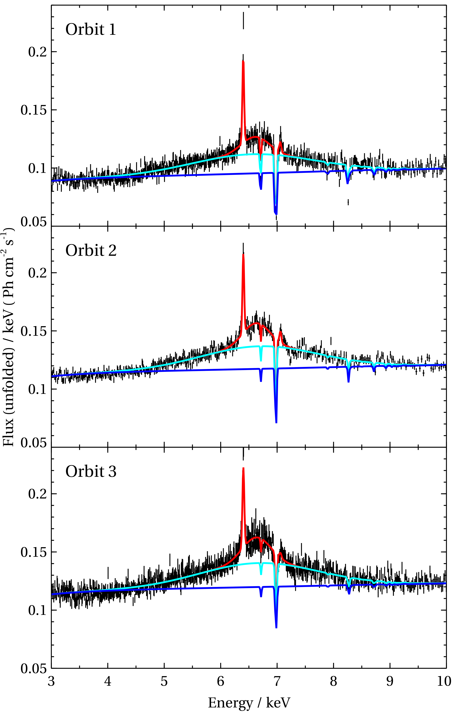
图注：Best-fitting time-averaged spectra from Orbit 1, 2 and 3, focusing on the Fe K region. Only Resolve Hp quality data are shown for visual purposes, and they are highly over-binned after fitting. Blue model is the primary continuum (the \textsc{bwcycl} component), cyan color shows the contribution of the broad Fe K line, and the total model (which includes narrow Fe K$\alpha$ and K$\beta$ emission lines as well as a broadened Fe XXV emission line) is shown in red. We note that the Y-axis units are different than in Fig. \ref{Fig_orb2_stacked_SED} to highlight the broad Fe K line.
对应解读：建议重点查看的图表第2项；关键图表逐图导读中的“Fe K 区域高分辨率放大图”。
入选理由：该图专门放大 Orbit 1、2、3 的 Fe K 区域，并分解出主连续谱、宽 Fe K 线和含窄 Fe Kα/Kβ及 Fe XXV 的总模型。它最适合检查 Resolve 高分辨率下窄线结构与约 keV 宽基底是否可分，避免把窄线群误认为宽线。
来源与置信度：arxiv_source；high；arxiv_source / main.tex:figure[4]
Fig09
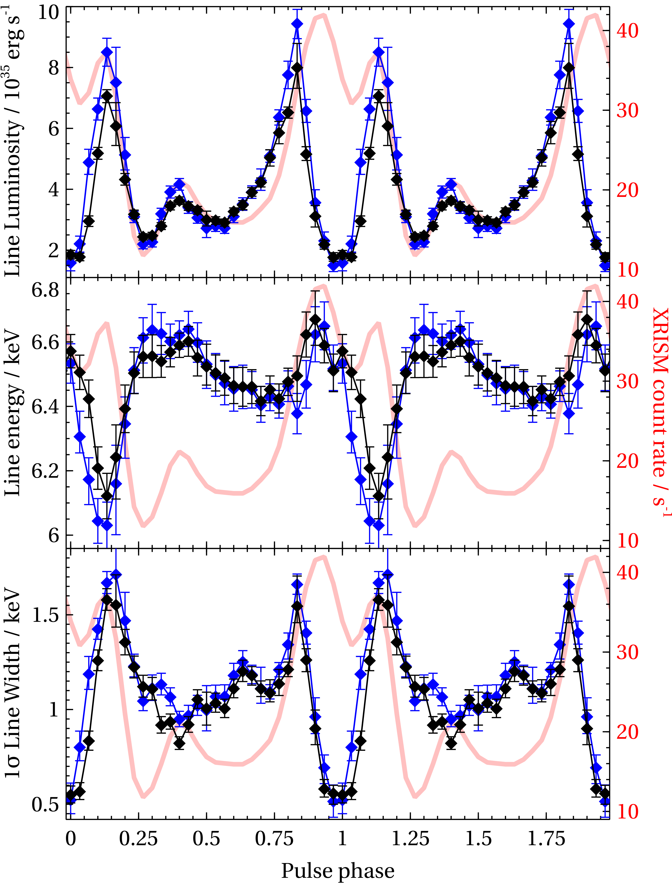
图注：Comparison of the best-fitting broad Fe K line properties with pulse phase during Orbit 2 using the full spectral model covering $2-75$ keV (black, identical to Fig. \ref{Fig_orb2_results}) and a simplified phenomenological continuum model applied to a narrower energy band of $2-12$ keV (blue). The Her X-1 continuum pulsation is also shown for comparison using the \xrism\ count rate versus pulse phase (red).
对应解读：建议重点查看的图表第6项；模型拟合段落关于替代连续谱、窄能段拟合和宽线参数稳健性的讨论。
入选理由：该图将 Orbit 2 的全能段2–75 keV完整模型结果与2–12 keV简化现象学连续谱结果进行对比，直接检验宽 Fe K 线随相位变化是否依赖特定连续谱模型。它是候选图中最符合“模型比较或稳健性检验”的图。
来源与置信度：arxiv_source；high；arxiv_source / main.tex:figure[9]
Fig02
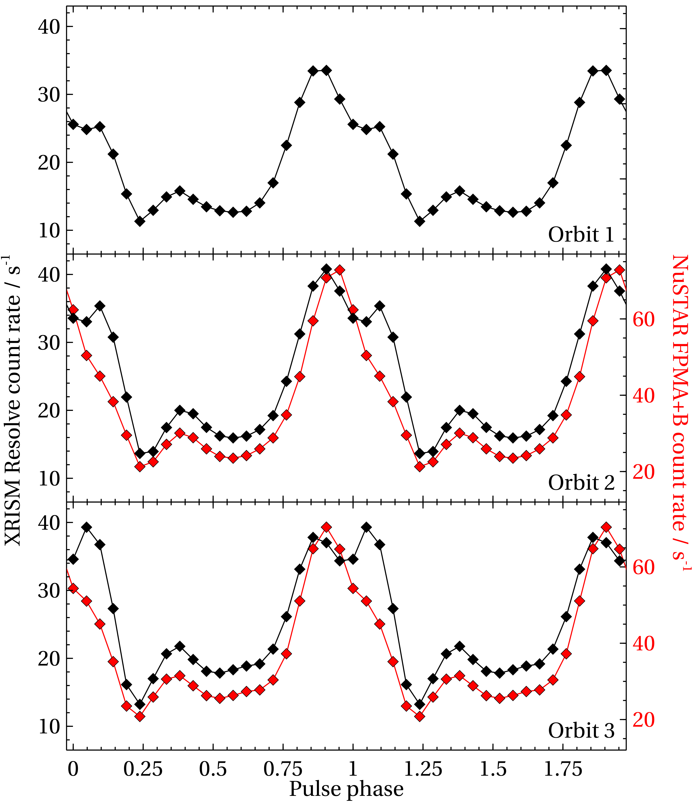
图注：\xrism\ (black) and \nustar\ (red) pulse profiles for all 3 Her X-1 orbits (using the 21 pulse bin extraction) in the energy bands which we used for pulse-phase-resolved spectral fitting: $1.8-12$ keV for \xrism/Resolve and $11-75$ keV for \nustar\ FPMA and FPMB. The uncertainties are smaller than the size of the datapoints.
对应解读：建议重点查看的图表第3项；关键图表逐图导读中的“脉冲轮廓及相位分箱”。
入选理由：该图给出 XRISM/Resolve 与 NuSTAR 在用于相位分辨谱拟合能段中的脉冲轮廓，并说明采用21个脉冲 bin。它为后续相位分辨宽线参数图提供相位背景，可用于判断线增强发生在主峰、谷值还是其他脉冲结构附近。
来源与置信度：arxiv_source；high；arxiv_source / main.tex:figure[2]
强相关工作
这项工作与黑洞和弱磁场中子星的 Fe K 相对论反射研究有表面相似性，但物理解释不同。在黑洞系统中，宽线常被归因于内盘的多普勒展宽和广义相对论红移；在 Her X-1 这样的强磁场脉冲星中，磁层截断使内盘不一定能延伸到中子星表面，吸积柱本身可能成为宽线形成区。建议检索关键词包括 “Her X-1 broad Fe K line”, “XRISM Resolve X-ray pulsar”, “accretion column iron line”, “magnetized neutron star reflection”。
它也与 Her X-1 的 35 天周期、自由进动和 IXPE 偏振结果相关。历史上关于 35 天周期到底主要来自翘曲盘进动还是中子星自由进动一直有争论；本文的宽线脉动图样随 35 天周期变化，为吸积柱几何变化提供了新的谱学证据，但并不自动排除盘遮挡的作用。建议检索 “Her X-1 35 day cycle precession”, “IXPE Hercules X-1 polarization”, “cyclotron line Her X-1 pulse phase”。
相似工作：
- https://arxiv.org/abs/2605.01146
- https://arxiv.org/search/astro-ph?query=Her+X-1+broad+Fe+K+line&searchtype=all
基础理论 / 方法工作：
- https://ui.adsabs.harvard.edu/search/q=Hercules%20X-1%2035%20day%20cycle
- https://ui.adsabs.harvard.edu/search/q=accretion%20columns%20X-ray%20pulsars%20iron%20line
相反观点 / 张力线索：
- https://ui.adsabs.harvard.edu/search/q=Her%20X-1%20free%20precession%20warped%20disk
- https://ui.adsabs.harvard.edu/search/q=Her%20X-1%20IXPE%20polarization%20precession
2. Neural Posterior Estimation for UHECR source inference from 3D propagation simulations
- 来源：arXiv / astro-ph.HE
- 链接：https://arxiv.org/abs/2605.01004v1
- 作者：Nadine Bourriche, Francesca Capel, Nicole Hartmann
- 评分：novelty 8/10，importance 8/10，relevance 9/10，final 9.35/10
- 推荐理由：基于 3D CRPropa 的 UHECR 源参数神经后验估计，面向逐事件贝叶斯反演，方法可复用且与宇宙线源识别高度相关。
中文题目：面向超高能宇宙线源反演的神经后验估计：基于三维 CRPropa 传播模拟
做了什么：这篇文章提出了一个用于单个超高能宇宙线事件源参数反演的 simulation-based inference 框架。作者用约 500 万个三维 CRPropa 3 传播模拟训练模型，输入包括探测到的可变数量次级粒子信息，输出源能量、距离、方向和原初成分的校准后验分布。模型结构结合 Deep Set 编码器和 normalizing flow：前者处理不定长粒子集合，后者表示复杂多峰或非高斯后验。验证结果显示，各源参数在保留模拟上无系统偏差，方向约束最好，距离最不确定，这与磁场偏转和能量损失物理相符；原初成分分类准确率达到至少 98.2%。
为什么重要：UHECR 源识别难在两个方面：带电粒子在河外磁场中偏转，且在传播中通过光致 pion 产生、Bethe-Heitler 对产生和光致核裂变等过程损失能量和改变成分。传统源反演要么使用过度简化的传播模型，要么依赖计算量巨大的蒙特卡洛扫描。本文的重要性在于把完整三维传播模拟压缩成一个可快速评估的贝叶斯后验估计器，使得“给定一个事件，源可能在哪、距离多远、能量和成分是什么”可以以概率分布而非单点猜测回答。
理论 / 观测 / 仪器方法价值：对方法学而言，这是把深度集合网络、归一化流和 CRPropa 物理模拟结合到 UHECR 源推断中的可扩展方案。对观测而言，它可为 Pierre Auger、Telescope Array 及未来 UHECR 数据提供逐事件后验，而不仅是到达方向相关性统计。对理论而言，校准后验能直接暴露磁场模型、源距离、能量损失和成分之间的退化关系，帮助评估哪些参数真正可由现有数据约束，哪些仍受传播物理限制。
为什么应该关注：如果你关心 UHECR 的起源，这篇文章的意义不只是“又用了神经网络”，而是把耗时三维传播模拟变成可用于贝叶斯源反演的近似似然/后验接口。它可能改变 UHECR 数据分析从群体相关性检验到逐事件概率反演的工作流。即使你不做机器学习，这篇论文也值得关注，因为它清楚展示了在现实传播物理下哪些源参数可恢复、哪些参数例如距离天然难约束。
展开详细解读：文章讲解、背景、理论、重点章节、图表与相关工作
文章详细讲解
科学问题：超高能宇宙线 UHECR 的源识别一直困难，因为观测到的是地球附近的到达方向、能量和可能的空气簇射成分指标，而我们想知道的是源的位置、距离、注入能量和原初核种。带电粒子经过河外磁场和可能的银河磁场时会偏转，传播中还会和 CMB/EBL 背景光子相互作用损失能量或发生核裂变。因此，从观测事件反推源参数是一个高维、随机、强退化的反问题。
作者怎么做：论文构建了一个基于模拟的神经后验估计框架。训练数据来自三维 CRPropa 3 传播模拟，约 500 万个事件，覆盖一系列河外磁场配置。模型输入不仅限于主粒子到达信息，还包括可变数量的探测到的次级粒子信息；为处理这种集合型输入，作者使用 Deep Set 编码器，将任意数量粒子编码为置换不变表示。随后用 normalizing flow 输出源参数的条件后验分布，包括源能量、距离、方向和原初成分。
关键结果：在保留测试模拟上，模型对所有源参数的恢复没有明显系统偏差。方向参数被约束得最好，这是因为到达方向仍保留了源方向和磁场偏转的统计信息；源距离最不确定，因为能量损失、磁场传播时间/路径、注入能量和成分之间存在强退化。原初成分分类准确率达到不低于 98.2%，说明在模拟设定下，次级粒子集合和传播产物对质量组有很强判别力。作者强调输出是校准后验分布，而不是仅给出最优点估计。
局限和下一步：这类方法的可靠性取决于模拟覆盖的物理先验和系统误差。如果真实河外磁场、源环境、注入谱、核相互作用模型或探测器响应超出训练分布，神经后验可能变得过度自信。下一步需要把银河磁场、探测器曝光和能量/成分重建误差纳入端到端框架，并用 posterior predictive checks、simulation-based calibration 和真实数据盲测来检验校准性。更进一步，还应从单事件后验扩展到群体层级模型，同时推断源族群、磁场模型和注入成分。
背景知识
超高能宇宙线通常指能量超过约 $10^{18}$ eV 的宇宙线，最高能端达到 $10^{20}$ eV 量级。它们可能来自活动星系核、星暴星系、伽马暴残留、潮汐瓦解事件或其他极端环境，但到目前为止没有形成无争议的源识别。原因之一是 UHECR 不是光子或中微子，而是带电粒子；即便能量极高，磁场偏转仍会模糊源方向，特别是对较重核。
传播物理给源反演增加了另一层复杂性。质子在 CMB 上会发生 GZK 相关能量损失，重核会通过光致核裂变改变质量数和电荷数，过程中产生次级核、光子和中微子。到达地球的能量和成分并不简单等于源处注入状态，而是传播历史的积分结果。传统方法常用角相关、回溯轨迹或简化扩散模型，但这些方法很难同时处理三维磁场、随机相互作用和次级粒子集合。
现在重新看这个问题的动机有两点。第一，CRPropa 3 等工具已能进行较真实的三维传播模拟，但直接把蒙特卡洛用于每个事件的贝叶斯反演成本很高。第二，simulation-based inference 和 normalizing flow 已能学习隐式似然或后验，适合处理无法写出解析似然、但可以大量模拟的天体物理问题。常见误区是认为神经网络只是黑箱分类器；本文更接近“用神经网络近似贝叶斯后验”。另一个误区是把高成分分类准确率等同于真实数据上同样可靠；这仍依赖训练模拟是否覆盖真实物理和探测器系统误差。
基础理论 / 方法脉络
UHECR 源反演的核心物理图像是带电粒子在磁场中的洛伦兹偏转和在背景辐射场中的随机相互作用。对电荷 $Ze$、能量 $E$ 的粒子，刚度 $R=E/Z e$ 决定其抗偏转能力；同能量下铁核比质子更容易偏转。若磁场结构已知，原则上可以回溯轨迹；但河外磁场强度、相干长度和拓扑都不确定，因此源方向后验通常是扩展的概率区域而不是一个点。
能量损失和成分演化使距离推断特别困难。一个较远的高能注入粒子和一个较近的低能注入粒子可能在地球产生相似能量；重核的裂变链还可能产生多个次级核，使观测集合包含关于原初成分和传播距离的信息。本文利用可变数量的次级粒子作为输入，正是为了保留这些传播历史痕迹，而不是把事件压缩成单一到达方向和能量。
方法上，Deep Set 的基本要求是置换不变性：探测到的次级粒子没有天然排序，交换输入顺序不应改变推断结果。normalizing flow 则通过一系列可逆变换，把简单基分布映射到复杂条件后验，适合表达非高斯、相关甚至多峰结构。主要 degeneracy 包括源距离—注入能量退化、源方向—磁场偏转退化、原初成分—磁刚度退化，以及磁场模型—源分布退化。选择效应包括探测器曝光、能量阈值、天空覆盖、空气簇射成分重建偏差；如果这些没有进入训练或似然，后验会在真实应用中偏移。
公式与推导
带电粒子的磁偏转首先由拉莫尔半径决定：
其中 $p$ 是动量，$Z$ 是电荷数，$e$ 是元电荷，$B$ 是磁场强度，高能极限下 $pc\simeq E$。传播距离 $D$ 远小于或可与相干尺度分段比较时，偏转角量级满足 $\delta\sim D/r_L$，因此低刚度粒子即较低能量或较高 $Z$ 的粒子偏转更大。
在随机湍动磁场中，若相干长度为 $\lambda_c$，传播可近似为多步随机游走，偏转角均方根为
这里 $D$ 是源距离。这个式子展示了方向后验的主要退化：同样的角偏转可以由更大 $Z$、更强 $B$、更远 $D$ 或更低 $E$ 产生。
能量传播可用连续损失近似写成
其中 $x$ 是路径长度，$A$ 是质量数，$z$ 是红移，$b$ 包含宇宙学红移损失、Bethe-Heitler 对产生、光致 pion 产生和光致核裂变等有效损失。由此观测能量 $E_{\rm obs}$ 是源能量 $E_s$、距离和成分的函数加随机散布：$E_{\rm obs}=\mathcal{T}(E_s,D,A,B)+\epsilon$。
贝叶斯源反演的目标是后验
其中 $\theta$ 表示源能量、距离、方向和成分，$x$ 表示观测到的粒子集合或事件摘要，$p(x|\theta)$ 是由传播和探测过程定义的似然。由于 $p(x|\theta)$ 很难解析写出，simulation-based inference 用模拟样本 $(\theta_i,x_i)$ 学习 $p(\theta|x)$ 的近似。
normalizing flow 用可逆映射 $\theta=f_\varphi(z;x)$ 表示条件后验，其中 $z$ 来自简单基分布 $p_0(z)$。密度由变量变换给出
训练通常最小化负对数后验估计损失
使网络在模拟联合分布上近似真实后验。Deep Set 编码器则可写成 $h(X)=\rho\left(\sum_{j=1}^{N}\phi(x_j)\right)$，保证对粒子顺序置换不变。
模型拟合 / 应用方法
本文的“拟合”不是传统地对一组观测点做最小二乘，而是训练一个条件密度估计器，使其从模拟生成的观测 $x$ 预测源参数 $\theta$ 的后验 $q_\varphi(\theta|x)$。参数包括连续变量如源能量、距离、方向角，以及离散或分组变量如原初成分。训练集由 CRPropa 3 产生，覆盖多种河外磁场配置；Deep Set 编码器把不定长次级粒子集合转化为固定维 latent representation，normalizing flow 负责输出可采样、可评估密度的后验。
评估重点应包括 calibration 而不仅是均方误差。对连续参数，应看 posterior coverage：例如标称 68% 可信区间是否真的包含约 68% 的真值；也应看概率积分变换、rank histogram 或 simulation-based calibration 诊断。对方向参数，应使用球面角距离或置信区域面积，而不是简单欧氏误差。对成分分类，应报告混淆矩阵，特别是相邻质量组之间是否混淆，而不只是总体准确率。
系统误差方面，最大的风险是训练模拟与真实宇宙不一致：河外磁场模型、源环境磁场、银河磁场、EBL 模型、核相互作用截面、源注入谱和最大刚度都可能偏离。退化关系包括距离—能量损失退化、成分—刚度—偏转退化、磁场强度—源方向退化。实际应用到 Auger/TA 数据时，还要把能量标定、空气簇射 $X_{\max}$ 成分代理、探测器曝光和触发效率写入观测模型，否则网络输出的是“模拟世界的后验”。残差或诊断图应理解为真值在后验中的位置是否均匀，而不是单纯预测点离真值多近。
重点章节 / 结果段落怎么读
-
问题设定和模拟参数空间：读者应先看源参数 $\theta$ 如何定义，源能量、距离、方向、成分和磁场配置的先验范围是什么。这决定了后验的含义，不能把训练先验外推到真实宇宙。
-
CRPropa 3 三维传播模拟：重点看包括哪些相互作用、背景辐射场、河外磁场模型和次级粒子记录方式。若模拟没有包含某类系统误差，神经网络不可能在真实数据中自动修正。
-
网络结构：Deep Set 编码器如何处理可变数量粒子，normalizing flow 采用何种条件输入和参数化。读者应关注置换不变性、方向变量在球面上的处理方式，以及离散成分是分类头还是混合后验的一部分。
-
训练与校准：看训练/验证/测试划分、损失函数、优化策略和校准指标。关键不是训练误差多低，而是保留模拟上的覆盖率是否正确，后验是否过窄或过宽。
-
结果和物理解释：重点比较不同源参数的恢复能力。方向最好、距离最差的结果应能从磁偏转和能量损失物理解释；成分准确率高则需要检查是否来自真实稳健特征，还是训练集标签过于容易区分。
-
讨论与应用前景：看作者如何计划接入真实 UHECR 实验数据、银河磁场和探测器响应，以及是否提出层级贝叶斯扩展来联合多个事件推断源族群。
建议重点查看的图表
-
模拟参数先验覆盖图：看源能量、距离、方向、成分和磁场配置的范围是否足够宽，训练分布是否与当前 UHECR 观测相近。
-
网络结构示意图：看 Deep Set 如何汇聚次级粒子集合，normalizing flow 如何条件化在事件表示上，是否对方向变量和成分变量有合理处理。
-
真值—后验均值或中位数散点图：对能量、距离和方向分别检查是否沿一比一线，无系统偏差；距离散布应明显较大。
-
后验覆盖/校准图：看 50%、68%、90%、95% credible interval 的实际覆盖是否接近标称值；这是判断神经后验可信度的核心。
-
方向误差或天空置信区图：看角误差分布和置信区域大小，注意强磁场或重核条件下是否出现长尾。
-
成分分类混淆矩阵：看质子、氦、中等核、重核之间的误分类模式；总体 98.2% 以上准确率可能掩盖某些相邻组混淆。
-
对磁场配置的稳健性测试：若有，应检查训练中未见或弱见的磁场条件下后验是否仍校准，避免模型只记住特定模拟族。
-
单事件后验示例：看二维 corner plot 中距离—能量、方向—成分等相关性；这比点估计更能体现源反演的物理退化。
关键图表逐图导读
图 1：问题流程或模拟设置图。横向通常从源参数、CRPropa 传播、探测到的粒子集合到神经后验输出。读者应关注输入 $x$ 到底包含哪些观测量：能量、方向、粒子类型、次级数目还是传播到达信息。陷阱是把模拟可见量误认为实验直接可测量量；真实空气簇射成分往往不是完美标签。
图 2：网络架构图。应显示每个次级粒子先经共享网络 $\phi$ 编码，再通过求和/平均等置换不变操作聚合，随后进入 normalizing flow。关键是 Deep Set 是否保证输入顺序不影响结果，以及 flow 输出的是完整后验而非单个回归值。读图时要区分编码器 latent 空间和物理参数空间。
图 3：参数恢复散点图。横轴多为模拟真值，纵轴为后验均值/中位数或最大后验估计；不同颜色可能代表成分或磁场配置。理想情况是点云围绕一比一线且无斜率偏差。距离参数若散布很大，不应简单视为模型失败，而是传播物理下信息量不足的表现；但若高距离端系统低估，则可能是先验边界或训练不平衡问题。
图 4：校准或 coverage 图。横轴为标称可信水平，纵轴为真实覆盖率；理想曲线接近对角线。曲线低于对角线表示后验过窄、过度自信；高于对角线表示后验过宽、保守。对 SBI 方法而言，这张图往往比平均误差更重要。
图 5：方向后验示例或角误差分布。若为天空图，坐标轴是天球经纬或投影坐标，真源和到达方向可能用标记显示，等高线表示后验置信区域。应看真源是否落在高概率区域、置信区域是否沿磁偏转方向拉长。陷阱是天空投影会扭曲面积，比较区域大小时要用球面面积。
图 6：成分分类混淆矩阵。横轴为真实质量组，纵轴为预测质量组或反之，颜色表示比例。主要结论是总体准确率很高，但应检查质子/氦、中等核/重核之间是否存在系统混淆。若测试集成分先验均衡，准确率易解释；若不均衡，还应看 per-class recall 和 precision。
图 7：后验 corner plot 或单事件示例。坐标轴为源能量、距离、方向角和可能的成分概率。关键是看参数相关性，例如距离越远需要更高注入能量，或较高 $Z$ 对应更大方向不确定性。读图陷阱是二维边缘后验可能掩盖多峰结构，最好结合样本云和一维边缘分布判断。
论文原图 / 可嵌入图片
Fig04
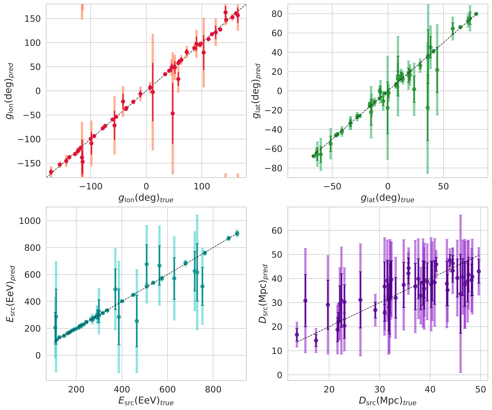
图注：Scatter plots of the true values of 50 randomly picked validation events compared with the predicted values. On the upper panel the results for the source longitude and latitude, in the lower panel the results for the source energy and source distance. In dark red, green, blue and purple the $1\sigma$ error bars and in light red, green, blue and purple the $2\sigma$ error bars.
对应解读：对应“建议重点查看的图表”第3项真值—后验均值/中位数散点图，以及“关键图表逐图导读”中的图3参数恢复散点图。
入选理由：这是验证源经度、纬度、能量和距离是否无系统偏差的核心图，直接展示真值与预测值及1σ/2σ误差棒；尤其能检查日报强调的距离散布较大、方向参数约束较好等关键结论。
来源与置信度：arxiv_source；high；arxiv_source / main.tex:figure[4]
Fig01
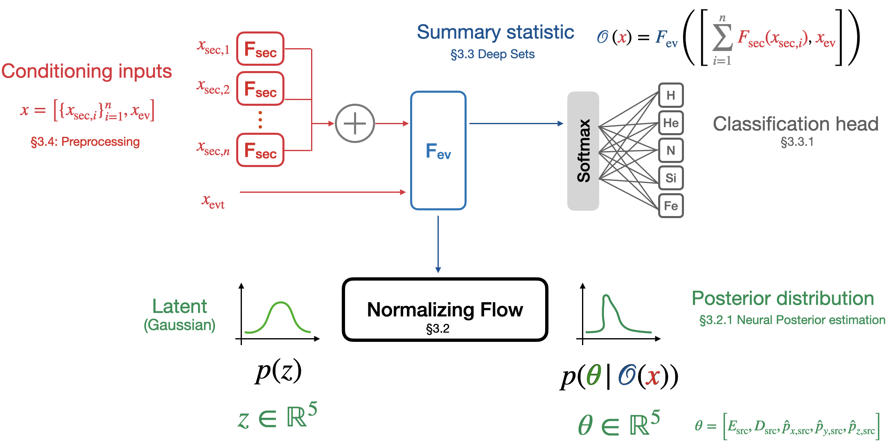
图注：Method for UHECR source estimation. We process the secondaries ${x_{\mathrm{sec},i}}{i=1}^n$ with a Deep Set to flexibly handle the variable cardinality of the secondaries. Inputs $x$ is then passes to two downstream tasks: (1) The classification head which classifies the source particle type (right), and (2) a conditioning vector for the normalizing flow used for neural posterior estimation (bottom).},i}$ are processed through per-particle networks $F_\mathrm{sec}$. The latent space $h_\mathrm{sec}$ is concatenated onto the event level inputs $x_\mathrm{ev}$ and correlations are modelled with a per-event neural network, $F_\mathrm{ev}$. The latent space output from $F_\mathrm{ev
对应解读：对应“建议重点查看的图表”第2项网络结构示意图，以及“关键图表逐图导读”中的图1/图2方法流程与网络架构解读。
入选理由：图中明确给出次级粒子集合经Deep Set编码、与事件级输入拼接、再进入分类头和normalizing flow后验估计的完整流程，是理解本文SBI框架输入、置换不变处理和后验输出机制的基础图。
来源与置信度：arxiv_source；high；arxiv_source / main.tex:figure[1]
Fig03
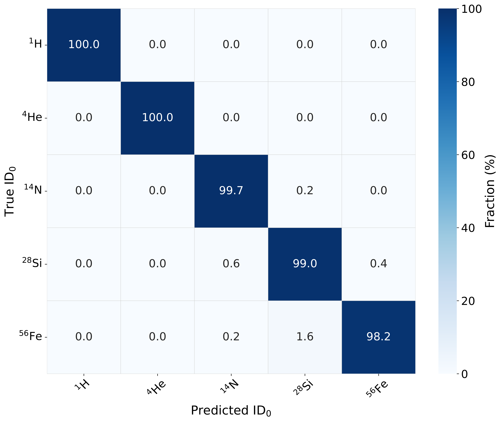
图注：Normalized confusion matrix for primary cosmic-ray composition classification on the full validation set. Rows correspond to true compositions and columns to model predictions, with each entry expressing the fraction of true-class events assigned to the predicted class. The lightest composition, $^1\mathrm{H}$ and $^4\mathrm{He}$, are classified with 100\% accuracy. The heavier nuclei $^{14}\mathrm{N}$, $^{28}\mathrm{Si}$, and $^{56}\mathrm{Fe}$ are correctly identified at the 99.7\%, 99.0\%, and 98.2\% level respectively, with the small residual misclassification confined exclusively to adjacent mass groups, consistent with the charge dependent similarity of their propagation signatures.
对应解读：对应“建议重点查看的图表”第6项成分分类混淆矩阵，以及“关键图表逐图导读”中的图6成分分类混淆矩阵。
入选理由：该图直接支撑摘要中原初成分分类准确率≥98.2%的结论，并显示误分类是否局限于相邻质量组；相比单一准确率数值，它更能揭示质子、氦、中等核和重核之间的系统混淆模式。
来源与置信度：arxiv_source；high；arxiv_source / main.tex:figure[3]
Fig05
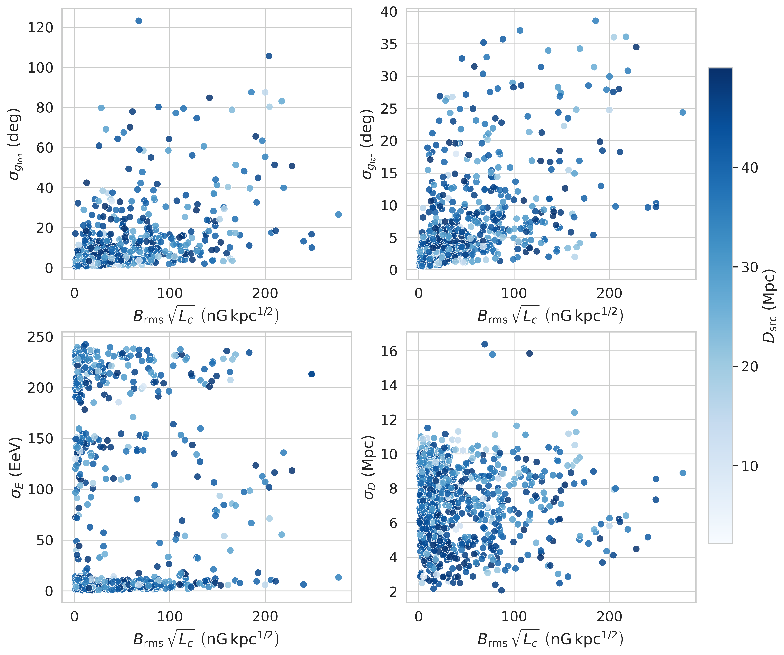
图注：Posterior uncertainty $\sigma$ for all four source parameters as a function of $B_\mathrm{rms}\sqrt{L_c}$, with points colored by the true source distance $D_\mathrm{src}$. Each panel corresponds to one of the four inferred source parameters: Galactic longitude $\sigma_{g_{lon}}$, Galactic latitude $\sigma_{g_{lat}}$, source energy $\sigma_E$, and source distance $\sigma_D$.
对应解读：对应“建议重点查看的图表”第5项方向误差/置信区和第7项磁场配置稳健性测试，也关联模型拟合段落中磁场强度—源方向退化与系统误差讨论。
入选理由：该图把四个源参数的后验不确定度与磁场组合量B_rms√L_c联系起来，并用真实源距离着色，能直接检查强磁场或远距离条件下方向、能量、距离后验是否变宽，是评估传播物理退化和磁场系统影响的重要诊断。
来源与置信度：arxiv_source；high；arxiv_source / main.tex:figure[5]
Fig06
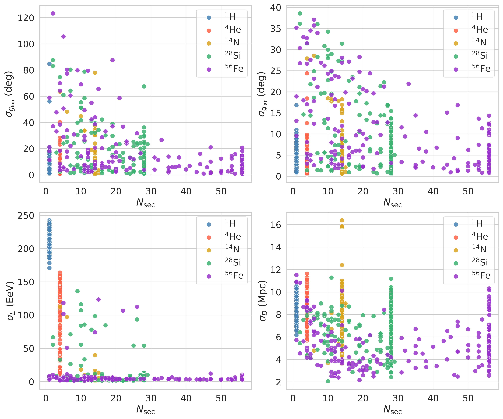
图注：Posterior uncertainty $\sigma$ for all four source parameters as a function of secondary multiplicity $N_\mathrm{sec}$, with points colored by true primary cosmic-ray composition. Each panel corresponds to one of the four inferred source parameters: Galactic longitude $\sigma_{g_{lon}}$, Galactic latitude $\sigma_{g_{lat}}$, source energy $\sigma_E$, and source distance $\sigma_D$.
对应解读：对应“建议重点查看的图表”第5项方向误差长尾、第6项成分相关误差，以及模型拟合段落中成分—刚度—偏转退化和次级粒子集合信息量的讨论。
入选理由：该图展示后验不确定度随次级粒子数N_sec变化，并按真实原初成分着色，有助于判断模型不确定性是否受成分和次级多重数控制；这补充了混淆矩阵无法展示的连续参数后验宽度信息。
来源与置信度：arxiv_source；high；arxiv_source / main.tex:figure[6]
Fig08
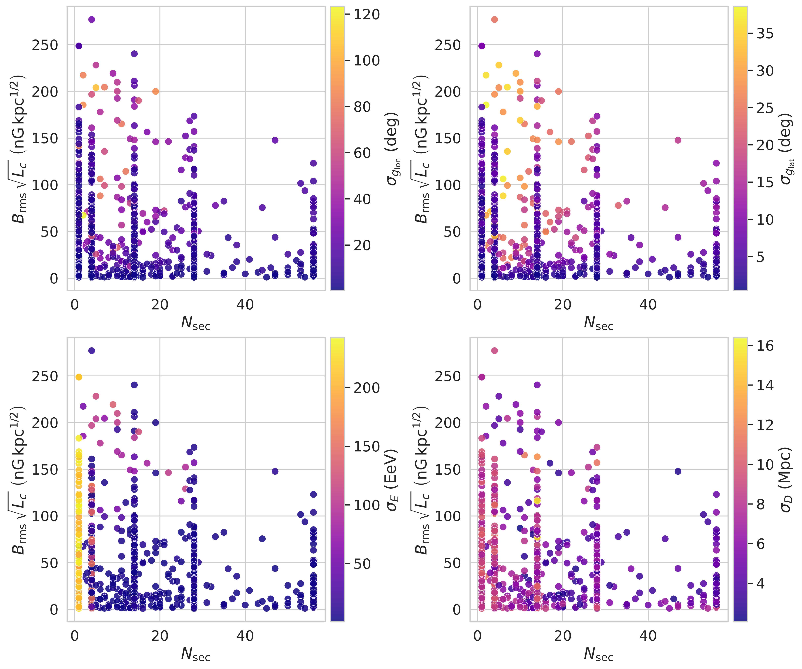
图注：$B_\mathrm{rms}\sqrt{L_c}$ for all four source parameters as a function of of secondary multiplicity $N_\mathrm{sec}$, with points colored by posterior uncertainty $\sigma$. Each panel corresponds to one of the four inferred source parameters: Galactic longitude $\sigma_{g_{lon}}$, Galactic latitude $\sigma_{g_{lat}}$, source energy $\sigma_E$, and source distance $\sigma_D$.
对应解读：关联“建议重点查看的图表”第7项磁场配置稳健性测试，以及模型拟合段落关于磁场、次级多重数和后验不确定度耦合的系统误差讨论。
入选理由：该图同时呈现B_rms√L_c、N_sec和后验不确定度之间的关系，可作为Fig05和Fig06的交叉诊断；但它与日报逐图导读中的核心图号匹配较弱，且信息相对冗余，因此科学优先级低于参数恢复、架构和混淆矩阵。
来源与置信度：arxiv_source；high；arxiv_source / main.tex:figure[8]
强相关工作
这篇文章处在 UHECR 传播模拟和 simulation-based inference 的交叉点。与传统 UHECR 源相关性研究相比，它不只是统计到达方向与候选天体目录的角距离，而是试图对单个事件的源参数给出完整后验。与常规 CRPropa 蒙特卡洛扫描相比，它把昂贵模拟前置到训练阶段，推断阶段快速评估后验。建议检索关键词包括 “UHECR source inference”, “CRPropa 3 propagation”, “simulation based inference cosmic rays”, “normalizing flows astrophysics”。
它也需要与已有的磁场回溯、层级贝叶斯 UHECR 成分/源群体模型和 Auger/TA 各向异性结果放在一起看。相反观点或潜在张力主要来自真实磁场未知和实验成分重建系统误差：如果训练磁场族不包含真实宇宙，方向后验可能看似校准但实际偏离；如果空气簇射 hadronic interaction model 改变，成分标签也会变。建议检索 “Pierre Auger UHECR anisotropy”, “Telescope Array hotspot”, “extragalactic magnetic fields UHECR deflections”, “UHECR composition Xmax systematics”。
相似工作：
- https://arxiv.org/abs/2605.01004
- https://arxiv.org/search/astro-ph?query=simulation-based+inference+UHECR&searchtype=all
- https://arxiv.org/search/astro-ph?query=normalizing+flow+cosmic+ray+source+inference&searchtype=all
基础理论 / 方法工作：
- https://crpropa.github.io/CRPropa3/
- https://arxiv.org/search/astro-ph?query=CRPropa+3&searchtype=all
- https://ui.adsabs.harvard.edu/search/q=ultra-high%20energy%20cosmic%20ray%20propagation%20magnetic%20fields
相反观点 / 张力线索：
- https://ui.adsabs.harvard.edu/search/q=Pierre%20Auger%20UHECR%20anisotropy%20composition
- https://ui.adsabs.harvard.edu/search/q=Telescope%20Array%20hotspot%20UHECR
- https://ui.adsabs.harvard.edu/search/q=UHECR%20extragalactic%20magnetic%20field%20deflection%20uncertainty
3. A bright wideband radio burst from the isolated neutron star 2XMM J104608.7$-$594306
- 来源：arXiv / astro-ph.HE
- 链接：https://arxiv.org/abs/2605.00720v1
- 作者：J. Tian, K. M. Rajwade, I. Pastor-Marazuela, B. W. Stappers, M. Caleb, K. Shaji, S. Singh, E. D. Barr
- 评分：novelty 8/10，importance 8/10，relevance 8/10，final 9.00/10
- 推荐理由：发现热辐射孤立中子星的第二个宽带相干射电暴并给出偏振性质，扩展了传统射电宁静中子星可能的爆发现象，和 FRB/磁层物理相关。
中文题目：孤立中子星 2XMM J104608.7−594306 的一次明亮宽带相干射电暴
做了什么：这篇文章报告了热辐射孤立中子星 2XMM J104608.7−594306 的第二次相干射电暴探测。作者用 Murriyang/Parkes 的 Ultra-Wideband Low 接收机做后随观测，发现一次从 704 MHz 延伸到 4032 MHz 的宽带、结构复杂、多成分射电暴，并测得陡谱谱指数 α = −2.18 ± 0.16。偏振上，该暴高度偏振，线偏振约 54%、圆偏振约 22%，位置角中还出现类似普通射电脉冲星的正交模式跳变。结合此前 MeerKAT 探测到的第一例射电暴，作者认为这颗过去被视为射电安静的热辐射中子星可以发生非常稀有但亮度跃迁巨大的射电爆发，强度变化可与 SGR 1935+2154 的亮射电暴相比较。
为什么重要：重要之处在于，它把“射电安静”的孤立热中子星和偶发相干射电暴联系起来。若这种现象不是个例，X-ray dim isolated neutron stars、central compact objects 等传统上不在射电巡天重点样本中的中子星族群，可能也会以极低占空比释放类似脉冲星或磁星的相干射电辐射。这会改变我们对中子星磁层活动、射电可见性和瞬变源人口统计的判断。
理论 / 观测 / 仪器方法价值：对观测而言，它给出了一个明确的后随策略案例：宽频、偏振、长时间盯源比单频短曝光更容易抓到这类低发生率事件。对理论而言，宽带陡谱、高偏振、正交偏振角跳变说明辐射很可能来自有序磁层中的相干过程，而不是普通热辐射或非相干耀发。对方法而言，论文展示了如何把单次暴的动态谱、偏振校准、谱指数和事件率估计结合起来，用于重新评估“非射电脉冲星”样本。
为什么应该关注：如果你关心 FRB、磁星、脉冲星死亡线或中子星族群演化，这篇文章值得看：它提示某些看似安静的中子星可能只是爆发太稀有、射束太窄或观测频段不合适。未来 SKA、MeerKAT、Murriyang、CHIME 类仪器在长时间监测中可能会发现更多这样的桥接源，从而把孤立热中子星、磁星射电暴和普通脉冲星发射机制放进同一个磁层物理框架中比较。
展开详细解读：文章讲解、背景、理论、重点章节、图表与相关工作
文章详细讲解
科学问题：2XMM J104608.7−594306 是一颗以热 X 射线辐射被识别的孤立中子星，过去这类对象通常被归为“射电安静”或至少不是稳定射电脉冲星。此前 MeerKAT 已经从该源探测到一次射电暴，但单个事件很难判断它是偶然的干扰、未知背景瞬变，还是中子星本身的真实磁层活动。本文的核心问题是：这颗源是否真的会重复发射相干射电暴？如果会，它的宽带频谱、偏振和亮度跃迁是否更像普通脉冲星巨脉冲、磁星射电暴，还是另一类现象？
作者怎么做：作者使用 Murriyang 的 Ultra-Wideband Low 接收机进行后随观测，覆盖 704–4032 MHz 的宽频段，并在总计与 MeerKAT 合并约 40 小时的源上时间中寻找单脉冲事件。发现的第二个暴具有多成分形态，说明时间结构不是简单的单高斯脉冲。作者测量了频谱能量分布，得到陡谱谱指数 α = −2.18 ± 0.16；同时做了偏振分析，给出线偏振和圆偏振比例，并检查偏振位置角随脉冲相位或时间的变化。
关键结果：这次暴在整个 UWL 频段中可见，表明它不是窄带 RFI 或局部仪器伪迹。偏振结果尤其关键：约 54% 的线偏振和 22% 的圆偏振意味着辐射具有高度相干和磁场几何 imprint；位置角中出现正交跳变，与普通射电脉冲星中常见的 orthogonal polarization modes 相似。这支持暴来自中子星磁层，而不是非相干外部冲击。两次暴在约 40 小时内出现，说明事件率很低，但单次亮度跃迁可非常大，接近 SGR 1935+2154 某些亮射电暴所体现的“安静态—爆发态”反差。
局限和下一步：目前只有两个暴，无法稳健建立能量函数、等待时间分布、是否与自转相位锁定、是否伴随 X 射线活动等关键统计量。距离、束流几何和低频吸收也会影响亮度估计。下一步需要更长时基、多台望远镜同时观测，尤其是射电—X 射线联合监测；若能测到周期相位、旋转量 RM 的稳定性、不同暴之间的偏振模式重复性，就能判断它更像弱磁星、XDINS 的偶发磁层激活，还是普通脉冲星发射的极端低占空比版本。
背景知识
研究对象 2XMM J104608.7−594306 属于以热 X 射线辐射著称的孤立中子星候选体。这类源常被拿来与 X-ray dim isolated neutron stars、central compact objects 和磁星进行比较：它们通常没有稳定亮射电脉冲，X 射线谱可由中子星表面热辐射解释，年龄、磁场和冷却历史是主要关注点。
历史上，“射电安静”常被理解为源本身不产生射电辐射，但这并不唯一。射电不可见可能来自射束没有扫过地球、发射占空比极低、频谱太陡导致观测频段不合适、传播散射或吸收、或巡天灵敏度不足。FRB 和磁星射电暴的发现使人们重新意识到，中子星射电活动不一定表现为稳定周期脉冲，也可能以极少数明亮单脉冲形式出现。
这个问题现在值得重新看，是因为宽带接收机和瞬变搜索管线已经能在数百 MHz 到数 GHz 同时搜索短时标相干信号，并能在同一次观测中测频谱、DM、RM 和偏振。Murriyang UWL、MeerKAT、CHIME、FAST 等设施使得低占空比事件的发现空间明显扩大。常见误区是把“未探测到周期射电脉冲”等同于“无射电磁层活动”；本文正是一个反例候选。
另一个背景是 SGR 1935+2154 的 Galactic FRB-like burst。它显示磁星可以在短时间内产生极高亮温度的相干射电暴，同时伴随或不伴随高能活动。若类似的亮度跃迁也出现在非典型磁星或热孤立中子星中，就会模糊传统源分类边界，并迫使我们用磁场拓扑、年龄、应力释放和磁层等离子体供给来重新定义中子星射电活动。
基础理论 / 方法脉络
核心物理图像是相干曲率辐射或等离子体不稳定在中子星磁层中产生短时标射电脉冲。相干性意味着许多带电粒子的辐射场相干叠加，亮温度可远超非相干同步辐射限制。宽带但陡谱的信号说明发射区域或等离子体条件覆盖一段较宽频率范围，同时高频能量快速下降。
关键观测量包括流量密度 S_ν、谱指数 α、脉冲宽度 W、色散量 DM、旋转量 RM、线偏振分数 L/I、圆偏振分数 V/I、位置角 PA。谱指数通常用 S_ν ∝ ν^α 表示；α < 0 且数值较大时，低频更亮。偏振位置角的正交跳变常被解释为两个正交传播模式之间主导权切换，而不必代表磁场方向真实突变 90 度。
数据分析逻辑上，宽带动态谱用于区分天体信号和 RFI：真实天体脉冲应按 ν^{-2} 色散延迟校正后对齐，并在多频段有一致结构；RFI 往往不遵循冷等离子体色散律。偏振校准则要处理馈源泄漏、绝对 PA 标定、法拉第旋转和频率去旋。对于单次暴，RM 或 PA 行为若与中子星磁层预期一致，会显著增强天体解释。
需要注意的 degeneracy 包括：内禀频谱与频率依赖的闪烁/束流效应会混在一起；单暴能量和距离不确定性高度相关；未测到周期性并不排除自转相位锁定，因为事件数太少。选择效应也很强：只统计被发现的亮暴会高估典型爆发能量，低估真实发生率。
公式与推导
宽带射电暴首先由冷等离子体色散定律识别。不同频率的到达时间延迟可写成
其中 DM 是视线电子柱密度，单位 pc cm^{-3}，ν_1 和 ν_2 是两个观测频率。真实天体脉冲在正确 DM 下应在动态谱中相干对齐，这是单脉冲搜索的基本判据。
频谱通常用幂律拟合：
其中 S_ν 是频率 ν 处的流量密度，S_0 是参考频率 ν_0 的归一化流量，α 是谱指数。本文测得 α = -2.18 \pm 0.16，表示频率升高时流量快速下降。实际拟合时需区分内禀谱形和频率依赖增益、闪烁、RFI mask 导致的偏差。
偏振强度由 Stokes 参量给出：
其中 I 是总强度，Q、U 描述线偏振，V 描述圆偏振。本文约 p_L=54%、p_V=22%，说明辐射不是普通非偏振噪声，而携带强磁层几何信息。
线偏振位置角为
观测到的正交跳变对应 ψ 在相邻脉冲成分或相位段中近似变化 90°。在脉冲星中，这常被解释为两个正交偏振模式竞争，而非简单的发射区磁场方向突变。
若估计单次暴的各向同性等效谱能量，可用
其中 D 是源距离，${\cal F}\nu=\int S\nu dt$ 是 fluence。距离和束流因子未知会直接影响能量尺度，因此与 SGR 1935+2154 的比较更可靠的是亮度跃迁和 fluence 量级，而不是精确总能量。
模型拟合 / 应用方法
这类工作常见拟合包括单脉冲时间结构拟合、频谱拟合、DM/RM 优化和偏振参量估计。时间结构可用一个或多个高斯成分描述，拟合量包括成分到达时间、宽度、峰值流量和相对振幅；多成分模型是否必要可用残差、信息准则或贝叶斯证据判断。若动态谱中不同频率成分不完全同步，还需要小心区分色散残差、频率漂移和仪器通道化效应。
频谱拟合常以 log S_ν 对 log ν 的线性回归实现，但误差并非简单高斯独立：带通校准、RFI flag、闪烁、系统温度变化和源在波束中的位置都会引入相关误差。谱指数 α 与绝对 flux scale、频率选择范围存在退化。对于单次暴，若低频部分受散射展宽或吸收，高频部分信噪比低，幂律 α 可能被系统性拉陡或拉平。
偏振拟合需要先做全 Stokes 校准，并对 RM 进行去旋。RM 不准会导致宽带线偏振去相干，从而低估 L/I；仪器泄漏则可能把 I 泄入 Q/U/V。位置角正交跳变的判断应看 PA 误差棒、线偏振信噪比阈值以及是否存在 180° 包裹问题。实际应用上，这套拟合流程可用于未来筛选 XDINS/CCO 射电暴候选：只有同时满足色散、宽带一致性、高偏振和合理偏振几何，才应被视为强天体候选。
重点章节 / 结果段落怎么读
-
数据与观测设置：优先看 Murriyang UWL 的频率覆盖、时间分辨率、观测时长、搜索 DM 范围和 RFI 处理。这里决定了宽带暴是否可信，也决定未探测时段如何转化为事件率上限。
-
单脉冲发现与动态谱：重点看去色散前后的动态谱、脉冲轮廓和多成分结构。读者应判断信号是否贯穿足够多的频段，是否遵循 ν^{-2} 色散律，以及多成分是否可能由散射或仪器效应造成。
-
频谱测量：关注谱指数 α = −2.18 ± 0.16 的拟合频率范围、误差来源和是否包含系统误差。不要只看数值本身，还要看各子带 flux 是否明显偏离单幂律。
-
偏振分析：这是论文物理解释的核心。应检查 Stokes I、Q、U、V 轮廓、线偏振和圆偏振分数、PA 曲线以及正交跳变是否出现在高信噪比区间。
-
与 MeerKAT 首次暴和 SGR 1935+2154 的比较：这一节决定文章外推是否合理。要看作者比较的是 fluence、峰值亮度、发生率、亮度跃迁还是物理能量，并注意距离和束流的不确定性。
-
讨论与展望：重点读作者如何把该源放入 XDINS、CCO、磁星和普通脉冲星的连续谱中，以及他们提出哪些可检验预言，例如重复率、X 射线伴随活动、相位锁定和 RM 稳定性。
建议重点查看的图表
-
宽带动态谱：检查 704–4032 MHz 范围内信号是否连续或分段出现，去色散后不同频率是否对齐，是否有明显 RFI 空洞。
-
频率积分脉冲轮廓：看多成分结构的时间间隔、相对强度和宽度；判断是否需要多个高斯成分而非单脉冲加噪声。
-
子带流量—频率图：看谱指数拟合线、各子带误差棒和残差，确认 α = −2.18 是否由少数低频点主导。
-
全 Stokes 偏振轮廓：检查 I、L、V 的相对位置和符号变化，确认圆偏振不是泄漏造成，线偏振高峰是否与总强度成分对应。
-
PA 曲线：重点看正交跳变发生在哪个脉冲相位、误差棒多大、是否只有在低线偏振区出现。低信噪比 PA 点不应过度解释。
-
与第一次 MeerKAT 暴的对比图或表：比较 fluence、宽度、频率覆盖、偏振和发生率估计，确认两次事件是否真属于同一现象类别。
-
事件率或等待时间估计：看 40 小时源上时间如何用于推断低占空比，注意泊松误差会非常大。
关键图表逐图导读
图 1：通常应是发现暴的动态谱和去色散后的总强度轮廓。横轴为时间，纵轴为频率，颜色为强度或信噪比；读图时应看信号是否在正确 DM 下竖直对齐，并在多个相隔较远的频段同时出现。陷阱是把 RFI mask 后的带通结构误认为内禀频谱结构。
图 2：可能展示多成分脉冲轮廓及高斯分解。横轴为相对到达时间，纵轴为 flux density 或 S/N，模型线为一个或多个成分之和。关键是残差是否随机、成分间隔是否显著大于时间分辨率；若残差仍有系统结构，说明简单高斯模型未完全捕捉真实形态。
图 3：频谱拟合图应以频率为横轴、子带流量或 fluence 为纵轴，幂律模型线给出 α。主要结论是暴呈陡谱宽带发射。读图陷阱是低频通道信噪比更高，可能在视觉上主导拟合；还要注意频率相关闪烁和校准误差没有被误当成谱弯曲。
图 4：全 Stokes 偏振图应包括 I、L、V 和 PA。横轴为脉冲相位或时间，纵轴上半部分为强度，下半部分为 PA。重点看 L/I 和 V/I 的峰值是否与 I 的主要成分一致，以及 PA 跳变是否接近 90°。陷阱是 PA 有 180° 周期性，低 L 区域的 PA 点物理意义较弱。
图 5：与第一次 MeerKAT 暴的比较图或表可能列出两次暴的宽度、fluence、频谱、偏振和望远镜频段。读者应关注哪些差异来自仪器频段和灵敏度，哪些可能是真实暴间差异。若作者把亮度跃迁与 SGR 1935+2154 比较，应确认采用的距离、带宽和各向同性假设。
论文原图 / 可嵌入图片
Fig01
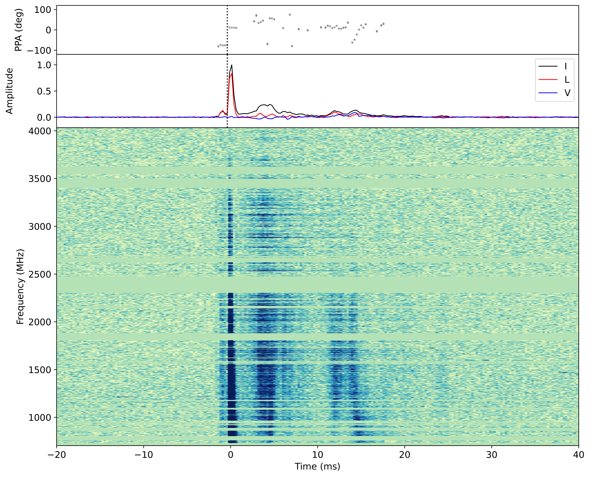
图注：Murriyang/Parkes detected radio burst from \xmmsrc. The bottom panel shows the dynamic spectrum, the middle panel shows the frequency averaged pulse profile for total intensity ($I$), linear polarisation ($L$) and circular polarisation ($V$), and the top panel shows the polarisation position angle. The pulse has been coherently dedispersed to the structure maximising DM of $99.40\,\text{pc}\,\text{cm}^{-3}$, and the polarisation data have been Faraday corrected to the rotation measure of $-49.3\,\text{rad}\,\text{m}^{-2}$. The dotted vertical line in the top and middle panel indicates the time of the orthogonal jump. Blank horizontal lines in the bottom panel indicate data which were flagged due to the presence of RFI.
对应解读：对应“建议重点查看的图表”中的宽带动态谱、频率积分脉冲轮廓、全 Stokes 偏振轮廓和 PA 曲线，也对应“关键图表逐图导读”的图 1 与图 4，以及偏振/DM/RM 拟合讨论。
入选理由：这是本文最核心的发现图：同一图中同时给出去色散后的 704–4032 MHz 动态谱、总强度 I、线偏振 L、圆偏振 V 和 PA，并标出正交偏振跳变位置及 RFI flag 区域。它直接支撑宽带天体信号、多成分形态、高偏振、RM 校正和正交模式跳变等主要结论，比其他候选图更能承载日报的详细物理解读。
来源与置信度：arxiv_source；high；arxiv_source / main.tex:figure[1]
Fig04
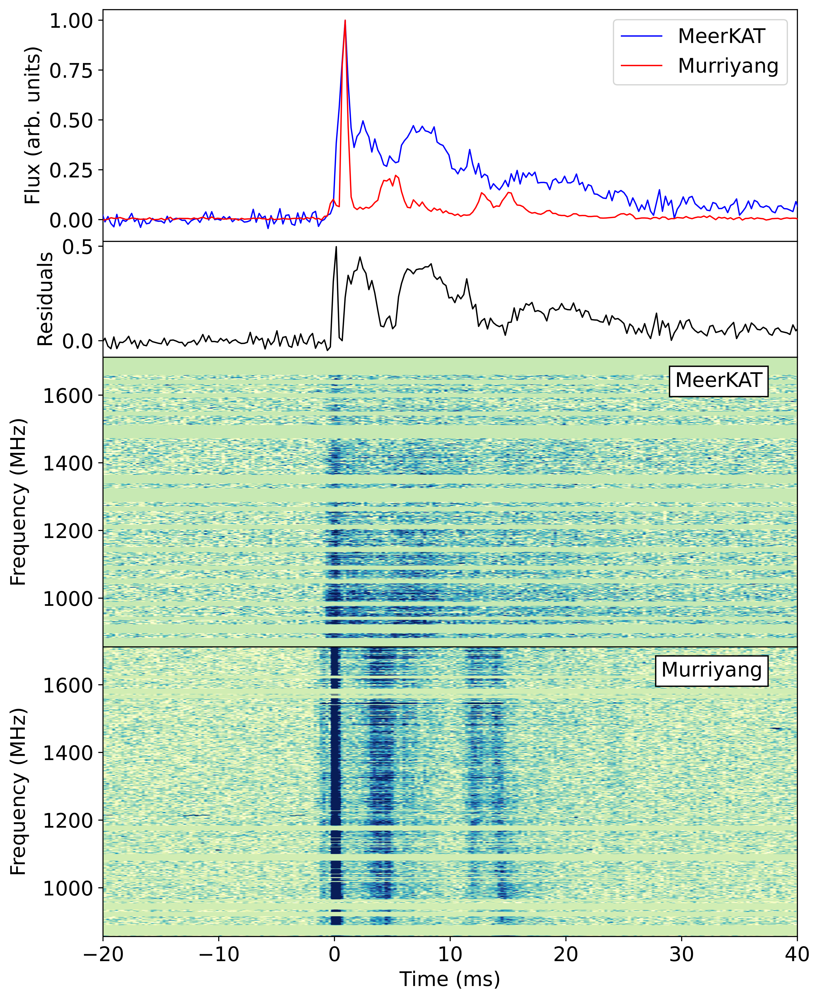
图注：Burst comparison from \xmmsrc\ between the MeerKAT and Murriyang bursts over the same bandwidth and at the same spectro-temporal resolution. The top panel shows the pulse profiles averaged over 856--1712\,MHz, normalised to the same main peak amplitude (arbitrary units). The second panel displays the residuals after subtracting the pulses. The third panel shows the MeerKAT burst resampled to the Murriyang spectro-temporal resolution, and the bottom panel shows the Murriyang burst at the MeerKAT bandwidth.
对应解读：对应“建议重点查看的图表”中的与第一次 MeerKAT 暴的对比图，以及“关键图表逐图导读”的图 5；也支撑关于两次暴是否属于同一现象类别的讨论。
入选理由：该图直接比较 MeerKAT 与 Murriyang 两次暴在相同带宽和相同谱时分辨率下的脉冲轮廓，并给出相减残差与重采样结果。它对判断两次事件的形态相似性、仪器频段/分辨率影响以及重复射电暴性质非常关键，是验证‘第二次相干暴来自同一中子星活动’的重要证据。
来源与置信度：arxiv_source；high；arxiv_source / main.tex:figure[4]
Fig02
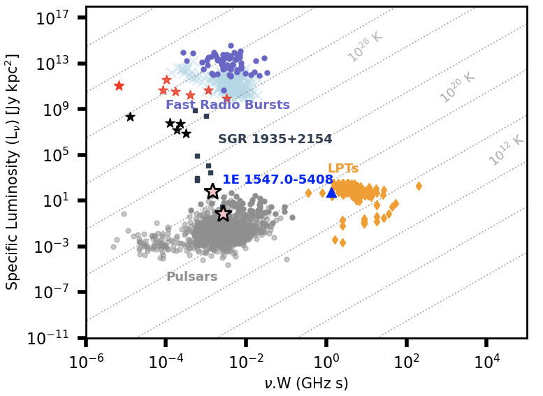
图注：Phase space of various coherent radio transients. The brightest components of the two bursts detected by MeerKAT and Murriyang from \xmmsrc\ are shown by the pink stars. The dotted grey lines represent lines of constant brightness temperatures. The data points for FRB 20180916B (red stars), FRB 20121102A (light blue crosses), FRB 20200112E (black stars), one-off FRBs (purple points), SGR 1935+2154 (black squares), 1E 1547.0$-$5408 (blue triangle), pulsars (gray points) and LPTs (yellow diamonds) are taken from \citet{Caleb24}, \citet{israel2021}, \citet{Nimmo22} and references therein.
对应解读：对应日报详细解读中关于亮度跃迁、与 SGR 1935+2154、FRB、磁星暴、脉冲星和长周期暂现源比较的段落。
入选理由：该图把 2XMM J104608.7−594306 的两次暴放入相干射电暂现源的相空间中，并用等亮温线比较不同族群。虽然它不展示动态谱、偏振或谱指数拟合，但能支撑本文关于该源亮度和相干性接近磁星/极端射电暂现现象的宏观物理定位。
来源与置信度：arxiv_source；high；arxiv_source / main.tex:figure[2]
Fig03
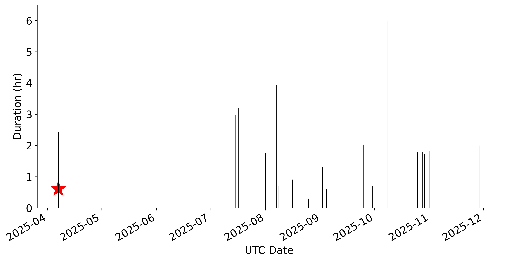
图注：A timeline of targeted Murriyang observations of 2XMM J104608.7$-$594306. Each vertical line shows the time of an observation, and the height of the line shows the observation duration. The burst detection is marked by a red star.
对应解读：对应“建议重点查看的图表”中的事件率或等待时间估计，以及日报中关于约 40 小时源上时间、低占空比和泊松不确定性的讨论。
入选理由：该图展示 Murriyang 定点观测时间线、每次观测时长和唯一探测时刻，可帮助读者理解事件率估计所依赖的观测覆盖。它的诊断信息少于动态谱和两次暴对比图，但对说明暴发稀有性和观测选择函数仍有价值。
来源与置信度：arxiv_source；high；arxiv_source / main.tex:figure[3]
强相关工作
这篇工作最直接关联的是磁星 SGR 1935+2154 的 Galactic FRB-like radio burst，以及磁星/普通脉冲星中偶发强单脉冲、巨脉冲和正交偏振模式的研究。检索关键词可用“SGR 1935+2154 radio burst”, “magnetar radio burst polarization”, “orthogonal polarization modes pulsars”, “coherent radio emission neutron stars”。这些工作提供了比较尺度：亮温度、fluence、偏振、是否伴随 X 射线暴、以及等待时间分布。
另一条相关线索是 XDINS 和 CCO 的射电搜索历史。许多非探测过去被用来说明这些源射电安静，但现在需要用低占空比瞬变搜索重新解释。检索关键词可用“X-ray dim isolated neutron stars radio search”, “central compact objects radio emission”, “radio quiet neutron stars single pulse search”, “MeerKAT isolated neutron star burst”。如果未来同类源中发现更多重复暴，现有的中子星分类、死亡线和磁场衰减模型都会受到影响。
相似工作：
- https://arxiv.org/abs/2605.00720
基础理论 / 方法工作：
（未提供）
相反观点 / 张力线索：
（未提供）
4. Detectability of Polarized Gamma-ray Emission from Blazar Flares with COSI
- 来源：arXiv / astro-ph.HE
- 链接：https://arxiv.org/abs/2605.01139v1
- 作者：Garrett A. Latiolais, Jorge Otero-Santos, Michela Negro, Lea Marcotulli, Mohammad Ali Boroumand, Savitri Gallego, Christopher M. Karwin, Israel Martinez-Castellanos
- 评分：novelty 7/10，importance 7/10，relevance 9/10，final 8.70/10
- 推荐理由：用 Fermi 长期耀发统计和 COSI 响应预测 MeV 偏振可探测性，并给出目标排序；对 MeV 伽马偏振和喷流物理很有参考价值。
中文题目：COSI 探测耀变体耀发偏振伽马射线的可行性
做了什么：这篇文章评估即将工作的 MeV 伽马射线康普顿望远镜 COSI 是否能在耀变体耀发期间测到偏振。作者用 17 年 Fermi-LAT 数据分析 1413 个耀变体的 GeV 光变曲线，用 Bayesian blocks 识别最多 787 个发生耀发的源；随后把这些耀发统计外推到 COSI 的 0.2–5 MeV 能段，在不同谱形和背景假设下计算 99% 置信水平最小可探测偏振度 MDP99。基线背景 1 counts/s、MeV 耀发统计近似 GeV 的情况下，COSI 两年主任务期内现实上可能在最多约 6 次耀发中达到 MDP99 < 50%，只有少数最强耀发可达到 MDP99 < 20%。最有希望的目标主要是平谱射电类星体。
为什么重要：MeV 波段长期是高能天文学的灵敏度空白区，而偏振又是区分喷流辐射机制和几何结构的直接诊断量。同步辐射、自同步康普顿、外康普顿、强子级联和磁重联模型可以给出相似的光谱能量分布，却预测不同偏振度和偏振角行为。本文把“COSI 能不能真的测到耀变体偏振”从愿景变成了基于 Fermi 17 年耀发统计和仪器响应的定量预期。
理论 / 观测 / 仪器方法价值：对仪器和观测规划而言，论文给出了一份按 MDP 排序的候选目标清单，并说明应重点盯住长耀发中的短时明亮峰值，而不是机械积分整个耀发。对理论而言，若 COSI 能在 MeV 波段测得偏振，将直接约束喷流中磁场有序度、辐射区位置和高能粒子分布。对数据分析而言，论文展示了如何把 GeV 监测光变、MeV 谱假设、背景模型和康普顿偏振响应结合起来做任务级可探测性预报。
为什么应该关注：如果你研究耀变体、多信使喷流、MeV 天文学或偏振测量，这篇文章很实用：它告诉你 COSI 的耀变体偏振科学不是“大样本普查”，而是少数极亮耀发的机会科学。它也提醒理论工作者，未来 MeV 偏振非探测本身也有价值，但必须与 MDP、时间窗选择和谱假设一起解释，不能简单说“偏振低”。
展开详细解读：文章讲解、背景、理论、重点章节、图表与相关工作
文章详细讲解
科学问题：耀变体喷流的高能辐射到底由电子逆康普顿、质子同步辐射、级联过程，还是多区混合模型主导，长期存在退化。光谱能量分布和 GeV 光变已经很丰富，但在 MeV 波段尤其缺少偏振测量。COSI 作为 0.2–5 MeV 康普顿望远镜，将具备全天监测和偏振能力；本文要回答的是：在实际耀发发生率、实际背景和仪器响应下，它能测到多少次耀变体 MeV 偏振？
作者怎么做：作者先用 17 年 Fermi-LAT 数据构建 1413 个耀变体的 GeV 光变曲线，并用 Bayesian block 方法识别耀发时段。根据不同耀发定义，最多有 787 个源出现可用耀发。之后他们为每个耀发设定 MeV 谱外推或谱假设，结合 COSI instrument response functions 和背景计数率，计算最小可探测偏振度 MDP99。作者还测试了不同背景水平、不同谱形、不同时间窗选择，尤其比较了用整个长耀发积分与只取明亮峰值的差别。
关键结果：在基线背景 1 counts/s 且假设 MeV 耀发统计与 GeV 类似的情况下，COSI 两年主任务期内可现实探测偏振的耀发数量不多：最多约 6 次可达到 MDP99 < 50%，只有少数最强事件有希望达到 MDP99 < 20%。这意味着 COSI 的耀变体偏振科学高度依赖少数极亮耀发和快速、合理的时间窗选择。样本上，平谱射电类星体 FSRQ 占据最有希望目标的主体，这与它们在 MeV 波段通常更亮、更 Compton-dominated 的特征一致。
局限和下一步：最大不确定性是 GeV 耀发统计能否代表 MeV 波段。耀变体 SED 峰位置、外康普顿成分、谱弯曲和时滞都会让 MeV 光变与 LAT 光变不同。背景模型、源混淆、姿态曝光、真实触发策略也会影响 MDP。下一步需要在 COSI 入轨后用真实背景和响应更新排名，并与 Fermi-LAT、Swift、IXPE、光学偏振和 VLBI 监测联动，确定最佳触发时间窗和多波段物理解释。
背景知识
耀变体是相对论喷流几乎指向观测者的活动星系核，光变快、非热辐射强、Doppler boosting 显著。其 SED 通常有两个宽峰：低能峰来自同步辐射，高能峰可由电子逆康普顿或强子过程产生。平谱射电类星体 FSRQ 往往有强外部辐射场，高能峰落在 MeV–GeV；BL Lac 的峰位置和辐射机制则更分散。
MeV 波段被称为灵敏度缺口并不夸张。COMPTEL 之后，0.1–10 MeV 的全天高灵敏监测长期不足，而这个波段恰好覆盖许多 FSRQ 的高能峰或谱形转折。仅靠 Fermi-LAT 的 >100 MeV 数据和硬 X 射线数据，常常无法唯一确定 MeV 峰形和辐射成分。
偏振提供额外维度。同步辐射在有序磁场中可有较高偏振；逆康普顿偏振取决于种子光场、电子分布、散射几何和入射辐射偏振；强子模型可能在高能端产生不同偏振特征。MeV 偏振若能测到，可以直接检验喷流磁场是否有序、发射区是否靠近黑洞或宽线区、以及耀发是否由冲击、湍流还是磁重联驱动。
常见误区是认为“只要耀发足够亮就能测偏振”。实际上偏振探测由源计数、背景计数、调制因子和曝光共同决定；长时间积分不一定最好，因为耀发峰值短时信噪比可能更高，而把低通量尾部加进去会稀释 MDP。另一个误区是把 MDP 当成偏振测量误差；MDP 是给定置信度下可拒绝零偏振的阈值，不等同于真实偏振度。
基础理论 / 方法脉络
COSI 的偏振能力来自康普顿散射的方位角调制。线偏振光子在探测器中散射时，散射方位角分布不是均匀的，而与入射光偏振方向相关。仪器通过重建多次相互作用的位置和能量，得到散射角和方位角分布，再用调制曲线估计偏振度和偏振角。
关键量是 MDP，即 minimum detectable polarization。它由源计数率、背景计数率、观测时间和调制因子决定。调制因子 μ 描述 100% 偏振源能产生多强的方位角调制；源计数越多、背景越低、μ 越大，MDP 越小。MDP99 < 50% 意味着若真实偏振度超过 50%，在 99% 置信水平上有望探测；MDP99 < 20% 才算能对许多理论模型形成较强区分。
从耀变体物理看，MeV 光子可能来自外康普顿散射，即喷流电子散射宽线区、尘埃环或吸积盘光子；也可能来自同步自康普顿或强子过程。不同机制不只改变谱形，还改变偏振。比如外部未偏振种子光的康普顿辐射通常偏振较低并强依赖几何；若种子同步光本身有偏振，SSC 可保留部分偏振信息。
数据分析上，本文不是直接测量 COSI 数据，而是任务前可探测性预测。它把 LAT 长期光变提供的耀发持续时间和相对亮度作为输入，再用 MeV 谱假设和 COSI IRF 把耀发转成预期源计数。主要系统误差来自跨能段外推、背景水平、曝光非均匀性和耀发定义。
公式与推导
耀变体光谱常以幂律或弯曲谱近似。最简单情况下，光子谱可写为
其中 K 是归一化，E_0 是参考能量，Γ 是光子指数。把 GeV 耀发外推到 COSI 的 0.2–5 MeV 时，Γ 或谱弯曲会显著影响源计数，因此是可探测性预测的核心不确定性。
COSI 的预期源计数可概念性写成
其中 T 是积分时间，A_eff 是随能量 E 和入射角 θ 变化的有效面积，E_1=0.2 MeV、E_2=5 MeV。源在全天扫描中的曝光和姿态分布会通过 A_eff 进入结果。
背景计数为
其中 R_bkg 是背景计数率。本文基线假设约为 1 counts/s，并测试不同背景情形。背景越高，偏振方位角调制越容易被淹没。
99% 置信水平的最小可探测偏振度常写为
其中 μ 是 100% 偏振源的调制因子，S 是源计数，B 是背景计数，4.29 对应常用的 99% 置信阈值。这个公式说明，提高源计数和调制因子、降低背景，都能降低 MDP。
若只考虑源主导且背景较小，近似有
其中 F 表示能带内通量。因此选择耀发峰值短时间窗有时优于积分整个长耀发：虽然 T 变短，但 F 可大幅升高，且低通量尾部不会增加过多背景。
Bayesian block 的思想是把光变曲线分成若干常值块，最大化
其中 $\mathcal{L}_{\rm blocks}$ 是分段常值模型的似然，N_blocks 是块数，P 是惩罚项或先验。耀发定义依赖块分割阈值，因此会影响候选耀发数量和最终 MDP 排名。
模型拟合 / 应用方法
本文的拟合和估计分两层。第一层是 Fermi-LAT 光变的时间域建模：用 Bayesian blocks 将 17 年光变分成统计上显著不同的通量状态，再根据高通量块定义耀发。这里的参数包括块边界、块内通量、显著性阈值和耀发合并规则。不同阈值会改变耀发持续时间和峰值通量，从而改变 COSI 可探测性。
第二层是 COSI 计数和偏振灵敏度预测。给定耀发谱模型、持续时间、入射角曝光和背景，利用仪器响应函数计算源计数 S、背景计数 B 和调制因子 μ，再得到 MDP99。严格的偏振测量通常会对散射方位角分布建立似然，例如拟合常数项加 cos 2φ 调制项；任务预报阶段则可用 MDP 公式快速筛选目标。
主要退化关系包括：MeV 谱指数与耀发通量归一化退化，背景率与可探测偏振度退化，耀发时间窗与源/背景计数退化。若耀发在 GeV 很亮但 MeV 谱峰偏离 COSI 能段，MDP 会被乐观估计；反之，一些 GeV 不最亮但 MeV 峰强的 FSRQ 可能被低估。实际应用时，排名表应被视为动态触发优先级，而不是固定目标清单。
残差怎么看：如果未来用真实 COSI 数据拟合偏振，关键不是只报告最佳偏振度，而要看方位角调制残差是否存在未建模背景结构、源混淆或姿态相关系统误差。对于低信噪比事件，真实偏振度的后验分布会偏离高斯，并有正定偏差；因此应报告置信区间或后验上限，而不仅是点估计。
重点章节 / 结果段落怎么读
-
样本与 Fermi-LAT 光变：先看 1413 个耀变体如何选取，时间范围、能段、时间 bin 和源分类是什么。这个部分决定统计外推是否代表 COSI 时代的耀发人口。
-
Bayesian block 耀发识别：重点看耀发定义、阈值、块合并策略和最多 787 个耀发源的来源。读者应比较不同耀发定义下候选数和持续时间分布的变化。
-
COSI 响应与 MDP 计算：这是技术核心。要看作者使用哪些 IRF、能段 0.2–5 MeV 如何积分、背景 1 counts/s 的基线从何而来、是否考虑扫描曝光和入射角分布。
-
谱假设与背景情景：重点读不同光子指数、谱弯曲或 MeV/GeV 关系如何影响 MDP。若结论对谱假设很敏感，那么目标排名在真实任务中需要快速更新。
-
结果与目标排名：看 MDP99 < 50% 和 < 20% 的源数、最有希望目标的类别，以及 FSRQ 为什么占优。不要只看“最多 6 次”，还要看这是在哪些假设下成立。
-
讨论与观测策略：这一节应关注短时间峰值窗口、与多波段触发的配合，以及非探测如何转化为物理约束。
建议重点查看的图表
-
Fermi-LAT 耀变体样本分布：检查 FSRQ、BL Lac、BCU 的数量和红移/通量分布，确认偏振可探测样本是否由少数亮 FSRQ 主导。
-
Bayesian block 光变示例：看原始光变、分块结果、耀发区间标记和峰值窗口。关键是耀发定义是否符合直觉，是否把长时间低态误并入耀发。
-
MDP99 分布直方图或累积分布：看有多少事件低于 50%、20% 阈值，以及结果对背景和谱假设的变化幅度。
-
MDP 与 fluence/峰值通量关系图：检查是否存在清晰相关性，以及离群点是否由谱形或曝光驱动。
-
目标排名表：重点看排名靠前源的类别、预期 MDP、耀发持续时间、峰值通量和假设谱参数。表中系统假设往往比排序本身更重要。
-
背景敏感性图：看从 1 counts/s 改变到更高或更低背景时，可探测事件数如何变化，评估结论稳健性。
-
长耀发整体积分与峰值短窗比较图：这是观测策略关键。应检查短窗是否普遍降低 MDP，还是只对少数极亮峰有效。
关键图表逐图导读
图 1：样本或全天耀变体分布图可能以天球坐标或源类别直方图呈现。若是天球图，坐标为 Galactic 或 equatorial longitude/latitude，点颜色代表类别或通量；主要结论是 COSI 的全天监测适合捕捉分布广泛的耀变体耀发。陷阱是天球分布不等于曝光均匀，银河面附近背景和源混淆更复杂。
图 2：Bayesian block 光变示例通常横轴为时间，纵轴为 LAT 通量，阶梯线为分块模型，阴影或颜色标出耀发。读图时要看块边界是否对应明显通量变化，以及峰值块是否远高于基线。陷阱是分块结果依赖时间 bin 和先验惩罚，不能把所有边界都解释为真实物理转变。
图 3：MDP99 累积分布图应以 MDP 阈值为横轴、可探测耀发数量为纵轴，或反过来显示事件排名。不同颜色线可能代表不同谱假设或背景率。关键结论是两年主任务中低 MDP 事件数量很少；读图时要注意 MDP < 50% 与 MDP < 20% 的物理含义差别很大。
图 4：MDP 对耀发 fluence 或峰值通量的散点图，横轴可能是 GeV 或外推 MeV fluence，纵轴是 MDP99。数据点按源类别着色，FSRQ 应在低 MDP 区域占优。陷阱是 GeV fluence 不是 MeV fluence；若谱假设不准，横轴和纵轴的相关性会被系统性改变。
图 5：背景或谱假设敏感性图可能展示不同 R_bkg 下的可探测事件数。横轴为背景率或谱指数，纵轴为满足 MDP 阈值的耀发数量。主要结论是背景控制和真实 MeV 谱形对科学产出非常关键。陷阱是把基线背景情形当成保证值；真实轨道背景可能随时间和姿态变化。
图 6：峰值短窗与全耀发积分比较图可能以每个耀发的两种 MDP 值作散点，横纵轴分别为全窗口 MDP 和峰值窗口 MDP。落在对角线下方的点表示短窗更优。读者应关注改善是否足以跨过 50% 或 20% 阈值，而不只是数值略有下降。
论文原图 / 可嵌入图片
Fig03
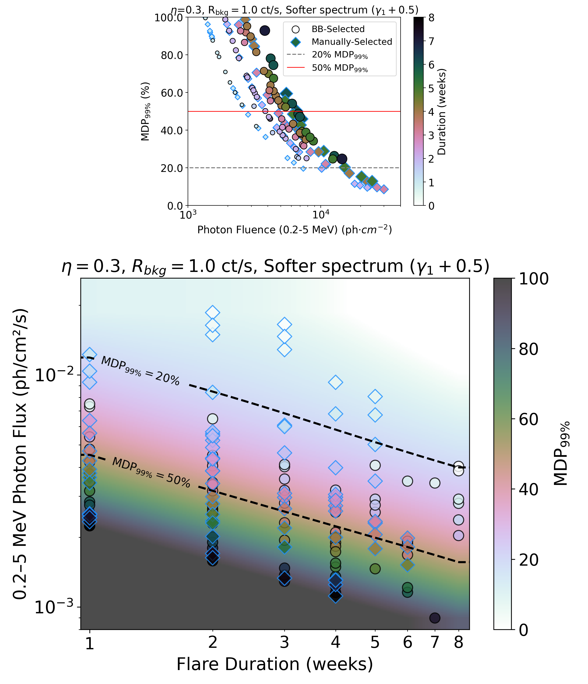
图注：\textit{Left:} MDP${99\%}$ as a function of the photon fluence for every flare showing MDP$}$ values below 100\%. The color scale and sizes of the markers represent the duration of the flare, with bigger markers representing longer flares and vice versa. \textit{Right:} MDP$_{99\%}$ map for a grid of photon flux (0.2-5 MeV), assuming a background rate of 1 {ct}/s, $\eta=0.3$ and softer X-ray spectrum. {In both plots: circles mark flares detected by the automated flare detection method (BB-selected), while diamonds mark flares that were manually selected from the brightest parts of longer ($>$8 weeks) duration flares.
对应解读：对应“MDP99 分布直方图或累积分布”“MDP 与 fluence/峰值通量关系图”以及关键图表逐图导读中的图 4/图 6 类讨论。
入选理由：这是最直接支撑全文核心结论的图：左图给出每个耀发的 MDP99 与 photon fluence 的关系，点大小/颜色编码耀发持续时间，并区分 Bayesian-block 自动选出的耀发与长耀发中手动选取的亮峰窗口；右图展示在基线背景 1 ct/s、η=0.3 和较软 X 射线谱假设下的 MDP99 参数空间。它能同时检验低 MDP 事件是否只来自少数高 fluence 耀发、短窗选择是否改善可探测性，以及 MDP 对通量和持续时间的依赖。
来源与置信度：arxiv_source；high；arxiv_source / sample7.tex:figure[3]
Fig04
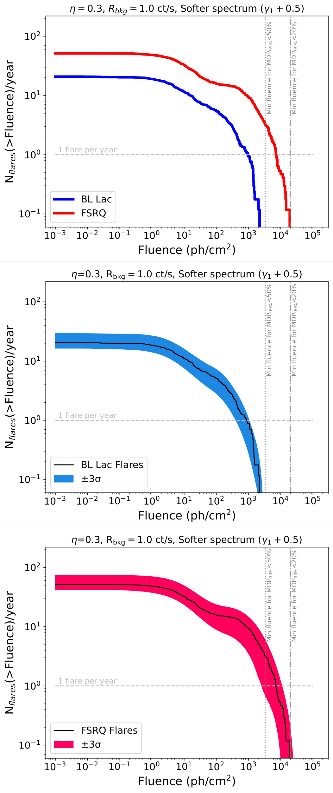
图注：\textit{Left:} Blazars' flares fluence cumulative distributions for BL Lacs and FSRQs in the sample of flares with a duration $<$8 weeks obtained by setting $\eta=0.3$, $R_{\rm{bkg}}=1$ {ct}/s {and considering the case of a softer X-ray spectrum}. The horizontal dashed line corresponds to 1 flare per year. The dotted and dashed-dotted vertical lines correspond to the minimum fluences for which we achieve an $\mathrm{MDP}{99\%}$ value of 50\% and 20\%, respectively, for $\eta=0.3$, $R$ below 50\% and 20\% for a certain flare, respectively.}}=1$ {ct}/s {and a softer X-ray spectrum}. \textit{Middle, Right:} Blazars' flare fluence distribution setting $\eta=0.3$, $R_{\rm{bkg}}=1$ ct/s {and considering the case of a softer X-ray spectrum}, and comparison with the expected distributions obtained from artificially simulated light curves generated with the method from \cite{emmanoulopoulos2013}, for BL Lac and FSRQs objects, respectively. The black solid lines correspond to the fluence distributions of the real data for each type of source and the colored contours are the $3\sigma$ confidence bands derived from the simulations. The horizontal dashed line indicates a frequency of 1 flare per year. The vertical dotted and dashed-dotted lines highlight the minimum fluences at which we estimate an $\mathrm{MDP}_{99\%
对应解读：对应“MDP99 分布直方图或累积分布”“Fermi-LAT 耀变体样本分布/FSRQ 主导性”和关键图表逐图导读中的图 3。
入选理由：该图把 BL Lac 与 FSRQ 的耀发 fluence 累积分布和频率直接联系到 MDP99<50% 与 MDP99<20% 的阈值，并给出模拟光变得到的 3σ 置信带。它最适合支撑日报中“可探测事件数量很少、FSRQ 占优、阈值跨越很关键”的结论，也能显示结果相对于耀发统计模拟的不确定性。
来源与置信度：arxiv_source；high；arxiv_source / sample7.tex:figure[4]
Fig11
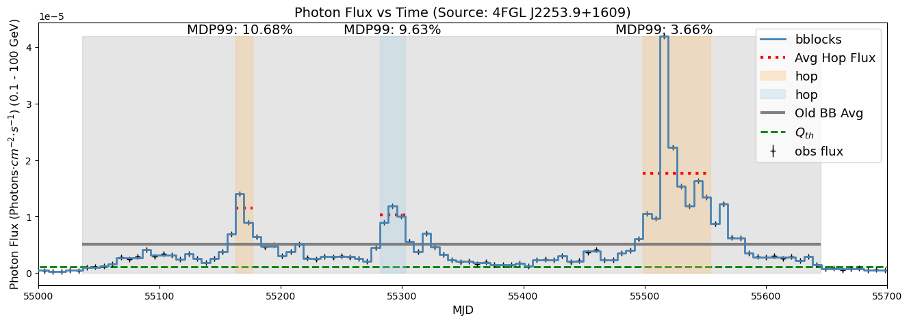
图注：{Example of a Long-flare (gray shaded region) identified in the Fermi-LAT light curve of source 4FGL J2253.9+1609. Manually-selected time windows with bright peaks are highlighted in orange and blue shades. Dotted red lines represent the average flux for those shorter time windows (all higher than the global average of the BB-identified flare, shown with a solid gray line). Above each manually selected flare we report the MDP$_{99\%}$ value after extrapolation to the COSI band. Dashed, horizontal green line shows the BB-calculated quiescent background for the source.}
对应解读：对应“长耀发整体积分与峰值短窗比较图”和关键图表逐图导读中的图 6。
入选理由：该图直接展示长耀发中手动选取明亮峰值窗口的做法，并在每个短窗口上标注外推到 COSI 能段后的 MDP99。它能说明为什么观测策略不能只依赖整段长耀发积分，而要关注峰值短窗是否能把 MDP 推过 50% 或 20% 的关键阈值。
来源与置信度：arxiv_source；high；arxiv_source / sample7.tex:figure[11]
Fig01
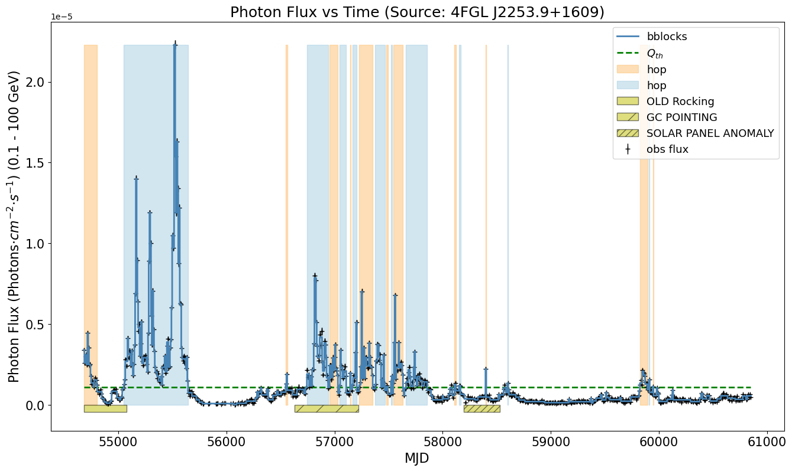
图注：The photon flux light curve of LCR source 4FGL J2253.9+1609, within \textit{Fermi}'s energy band with $\eta=0.3$. Alternating orange and blue blocks represent distinct identified flaring periods. The solid blue line is the {BB analysis} of the source. The dashed horizontal green line is the calculated quiescent {threshold} of the source, $Q_{th}$. Below the light curve, yellow blocks mark the periods of time where \textit{Fermi}-LAT was operating in a non-standard survey mode.
对应解读：对应“Bayesian block 光变示例”和关键图表逐图导读中的图 2；也对应模型拟合段落中的第一层时间域建模。
入选理由：该图给出 4FGL J2253.9+1609 的 Fermi-LAT 光变、Bayesian block 分块结果、耀发区间交替标记、静息阈值 Q_th 以及非标准巡天模式时段。它是理解本文耀发定义、块边界、阈值和持续时间如何进入后续 MDP 计算的基础图。
来源与置信度：arxiv_source；high；arxiv_source / sample7.tex:figure[1]
Fig02
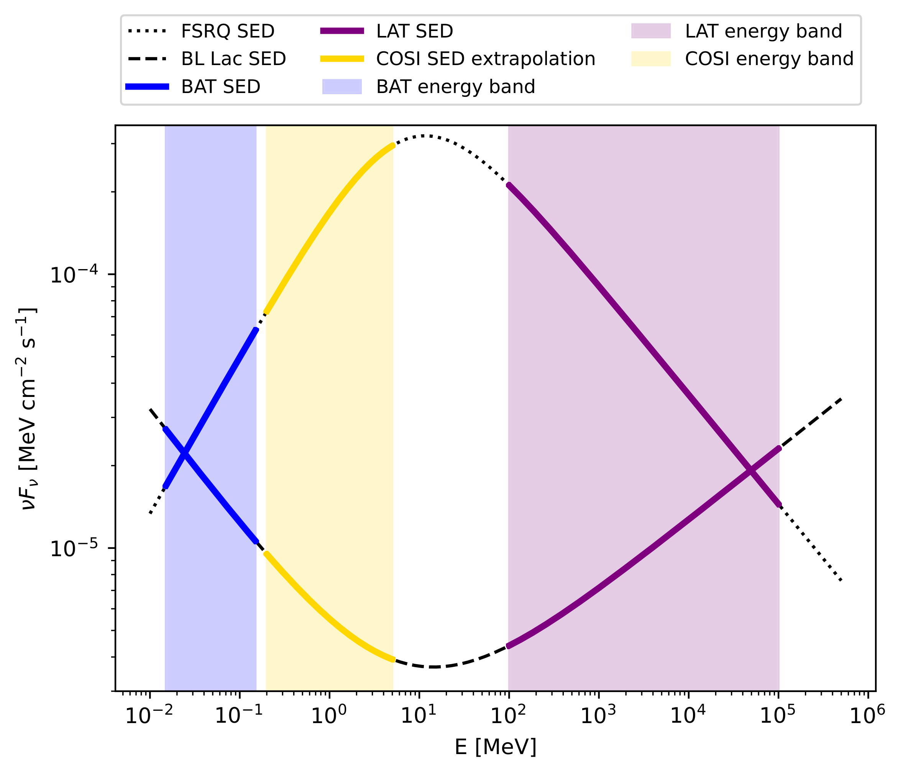
图注：Example of a BAT-LAT extrapolated spectrum to the COSI 0.2-5 MeV $\gamma$-ray band according to Eqs.~(\ref{eq:BAT_LAT_spectrum1}) and (\ref{eq:BAT_LAT_spectrum2}) for a BL Lac object (dashed black line) and an FSRQ (dotted black line). The energy ranges of BAT, COSI and \textit{Fermi}-LAT are highlighted with the blue, yellow and purple shaded regions and solid lines, respectively.
对应解读：对应“背景和谱假设敏感性”“模型拟合和估计第二层：COSI 计数和偏振灵敏度预测”中关于 MeV 谱外推的讨论。
入选理由：该图展示从 BAT-LAT 能段外推到 COSI 0.2–5 MeV 的谱模型，并区分 BL Lac 与 FSRQ 的谱形假设。由于日报强调 GeV fluence 不等于 MeV fluence、谱指数和归一化会系统性改变 MDP，这张图能帮助读者理解探测性预测中最大的谱外推不确定性。
来源与置信度：arxiv_source；high；arxiv_source / sample7.tex:figure[2]
Fig10
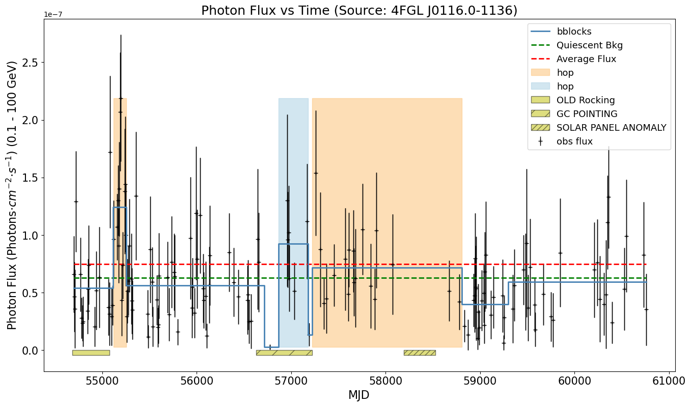
图注：Example of the light curve of blazar 4FGL J0116.0-1136 with fake flare identifications. The first \texttt{hop} corresponds to a real flare, while the second and third are clearly consistent with constant flux, but identified as flares by the BB algorithm due to the two flux points before them, with very low value and small uncertainties, most likely cause by fluctuations due to low statistics.
对应解读：对应“Bayesian block 光变示例”的陷阱说明，以及模型拟合段落中关于时间 bin、先验惩罚和耀发误识别的讨论。
入选理由：该图专门展示 Bayesian block 算法可能把低统计涨落后的恒定通量段误判为耀发的例子。它虽然不是主结果图，但对理解耀发样本清洗、假阳性和长时间低态误并入耀发的风险非常重要，能补充 Fig01 的理想化示例。
来源与置信度：arxiv_source；high；arxiv_source / sample7.tex:figure[10]
强相关工作
这篇工作与 MeV 任务规划和耀变体高能偏振研究直接相连。COSI、AMEGO/e-ASTROGAM 概念研究、COMPTEL 遗产数据和 Fermi-LAT 耀变体目录共同构成背景。检索关键词可用“COSI gamma-ray polarimetry”, “MeV blazar polarization”, “Compton polarimeter minimum detectable polarization”, “Fermi LAT blazar flares Bayesian blocks”。
在物理解释上，它连接了 leptonic 与 hadronic blazar models 的长期张力。SED 拟合常常无法唯一区分外康普顿、SSC、质子同步和级联成分；MeV 偏振可以提供独立约束。相反观点或谨慎点是：如果 MeV 与 GeV 耀发不同步，或者真实 MeV 谱比外推暗，本文预测的可探测事件数会偏乐观。检索关键词可用“external Compton polarization blazars”, “hadronic blazar gamma-ray polarization”, “MeV gap blazar SED”, “IXPE blazar polarization multiwavelength”。
相似工作：
- https://arxiv.org/abs/2605.01139
基础理论 / 方法工作：
- https://arxiv.org/abs/1905.10771
相反观点 / 张力线索：
（未提供）
5. Upstream neutrino production and delayed jet emission in the blazar GB6 J1542+6129
- 来源：arXiv / astro-ph.HE
- 链接：https://arxiv.org/abs/2605.00785v1
- 作者：Emma Kun, Imre Bartos, Breshna Hadi, Anna Göblyös, Julia Becker Tjus, Peter L. Biermann, Anna Franckowiak, Francis Halzen
- 评分：novelty 7/10，importance 7/10，relevance 9/10，final 8.70/10
- 推荐理由：对疑似 IceCube 中微子耀发源 GB6 J1542+6129 做 Fermi 与 VLBI 多信使时序分析，支持中微子在 VLBI 核上游产生，伽马/中微子相关性强。
中文题目：耀变体 GB6 J1542+6129 中的上游中微子产生与延迟喷流辐射
做了什么：这篇文章用 GB6 J1542+6129 作为个案，追问 AGN 高能中微子到底是在黑洞附近的致密区域产生，还是在秒差距尺度的 VLBI 射电核附近产生。作者把约 17 年 Fermi-LAT γ 射线光变、Bayesian block 和自适应分箱结果，与约 14 年 MOJAVE/VLBI 15 GHz 射电核观测结合起来，估计射电核多普勒因子的时间演化，并与一个疑似 IceCube 中微子耀发的时间结构比较。核心结论是：疑似中微子耀发比 γ 射线增强和 VLBI 核多普勒因子显著上升早约一年，这个延迟与扰动从中央引擎传播到 15 GHz 射电核的时间相符。因此，该源更支持多区图像：中微子在更靠近黑洞、光子场更稠密的上游区域产生，而同一扰动之后在秒差距尺度射电核触发被多普勒增强的 γ 射线/射电活动。
为什么重要：AGN 是否能产生 IceCube 能区中微子并不是只看“中微子事件附近有没有 γ 射线耀发”就能回答的问题；关键在于辐射区的空间位置、光子场密度、喷流扰动传播时间和多普勒增强如何对应。这篇文章重要之处在于它把时间顺序当成物理诊断量：中微子先到、γ 射线和 VLBI 多普勒因子后增强，说明中微子区可能不在经典 15 GHz VLBI 核，而在更上游的致密环境。
理论 / 观测 / 仪器方法价值：对理论而言，它支持 AGN 中微子产生的多区模型，而不是把中微子、γ 射线和射电核活动强行放在同一个均匀 blob 内。对观测而言，它展示了如何把 Fermi 长基线光变、VLBI 结构/运动学和 IceCube 时间窗结合，用传播延迟来约束辐射区位置。对方法而言，Bayesian block、自适应分箱和 VLBI 多普勒因子演化的联合使用，比单纯做事件关联或空间交叉匹配更有判别力。
为什么应该关注：如果你关心高能中微子天体源，这篇文章提醒你：真正有信息量的不是某个耀变体“在中微子事件时亮不亮”，而是多波段活动是否有符合喷流传播的时序结构。它也影响后续源搜索策略：中微子触发后的数月到数年 VLBI/γ 射线跟踪可能和即时电磁对应体一样重要。对于建模者，这个案例要求把近核强辐射场中的强子相互作用与下游 leptonic 辐射区分开处理。
展开详细解读：文章讲解、背景、理论、重点章节、图表与相关工作
文章详细讲解
科学问题：AGN/耀变体被长期视为高能中微子的候选源，但中微子产生区的位置仍很不确定。若中微子在黑洞附近产生，那里外部光子场、磁场和物质密度较高，pγ 或 pp 过程更容易有效；但 γ 射线可能因内部吸收或级联而不一定同时逃逸。若中微子在秒差距尺度 VLBI 核产生，则更容易与射电/γ 射线耀发同步，但需要足够高的靶光子密度和强子功率。本文围绕 GB6 J1542+6129 的疑似 IceCube 中微子耀发，检验这两类图像哪一种更符合时间顺序。
作者怎么做：作者使用约 17 年 Fermi-LAT 数据，构造 γ 射线光变曲线，包括 5% 相对不确定度的自适应分箱光变和 Bayesian block 分解，用来识别 γ 射线活动期及其持续时间。他们还使用约 14 年 MOJAVE/VLBI 15 GHz 观测，分析射电核的运动学或亮温信息，以推断 VLBI 核多普勒因子的时间演化。然后把这些时间序列与疑似 IceCube 中微子耀发窗口比较；该中微子耀发持续时间约为 $147^{+110}_{-25}$ 天。
关键结果：中微子耀发并没有与 γ 射线和 VLBI 核多普勒因子峰值严格同时发生，而是领先约一年。随后出现的 γ 射线活动持续时间与中微子耀发持续时间相近，暗示二者可能由同一个喷流扰动驱动，只是发生在不同空间位置。γ 射线宽带 SED 在全时段、耀发期和后耀发期的谱形没有显著变化，说明粒子加速或辐射条件没有发生剧烈模式切换；增强更可能来自几何/多普勒效应或同类粒子群在下游区的辐射增强。
局限和下一步：该结果依赖一个“疑似”中微子耀发与单个源的时空关联，统计显著性和试验因子仍应谨慎对待。VLBI 多普勒因子的估计本身依赖亮温、角尺寸、组分识别和采样频率，时间延迟解释也受喷流视角、洛伦兹因子和 15 GHz 核位置不确定性影响。下一步应把同样方法推广到更多 IceCube 候选耀变体，特别是用更高频 VLBI、偏振、毫米波监测和更精确的中微子事件重建来检验“中微子先、射电核后”的统计普遍性。
背景知识
研究对象 GB6 J1542+6129 是一个喷流朝向接近视线方向的活动星系核，即耀变体。耀变体的电磁辐射高度可变，受到相对论多普勒增强控制，因此 γ 射线和射电耀发常常被解释为喷流中扰动、激波或磁重联区穿过不同光学深度位置的结果。15 GHz VLBI 所看到的“射电核”不一定是黑洞本身，而通常是光学深度约为一的喷流基部投影位置，可能距中央引擎达到亚秒差距到若干秒差距。
历史上，TXS 0506+056 与 IceCube-170922A 以及早期中微子活动的关联，使耀变体成为高能中微子源研究的焦点。但一个关键张力是：许多耀变体 γ 射线很亮，却未必是有效中微子源；而若强子过程足够强，伴随的电磁级联又可能违反 X 射线/γ 射线观测限制。因此，简单的单区 lepto-hadronic 模型往往面临能量预算、光学深度和多波段 SED 的共同约束。
现在值得重新看这个问题，是因为长期 Fermi-LAT 数据、IceCube 累积事件样本和 MOJAVE 等 VLBI 长期监测已经可以比较跨年尺度的时间结构。中微子产生可能不是与电磁耀发完全同步，而是与同一扰动在不同空间尺度上的演化相关。常见误区是把 VLBI 核当作中央引擎位置，或把任意时间邻近的 γ 射线耀发都视为中微子对应体；本文强调的是“传播延迟”这一物理量，而不是简单同现。
基础理论 / 方法脉络
核心物理图像是相对论喷流中的扰动从黑洞附近向外传播。靠近中央引擎处可能存在宽线区、尘埃环、盘辐射或紧致同步辐射光子场，质子若被加速到足够高能，就能通过 pγ 相互作用产生带电π介子，进而衰变为高能中微子。这个区域的光子密度高，但 γ 射线可能受到 $\gamma\gamma$ 吸收，因而中微子活动不必对应一个同时、同位置的透明 γ 射线峰。
下游的 15 GHz VLBI 核通常是射电光学深度接近 1 的位置。当扰动到达这里时，局部磁场、有序性、粒子注入或视向多普勒因子可增强，导致射电核亮化和 γ 射线 leptonic 辐射增强。若喷流洛伦兹因子 $\Gamma$、视角 $\theta$ 或流向发生小变化，多普勒因子 $\delta=[\Gamma(1-\beta\cos\theta)]^{-1}$ 可显著改变观测通量。
观测方法上，Fermi-LAT 光变用于定位 GeV γ 射线活动，Bayesian block 用于在不预设耀发形状的情况下寻找分段常数变化，自适应分箱保证每个 bin 有相近相对误差。VLBI 数据提供核通量、角尺寸、亮温和喷流组分运动信息，从而推断多普勒因子变化。关键退化包括：真实粒子注入增强与多普勒增强可产生相似光变；VLBI 核位置随频率和光学深度变化；中微子事件方向误差和时间窗选择会引入关联统计的不确定性。
公式与推导
相对论喷流辐射的基本量是多普勒因子：
其中 $\Gamma$ 是体洛伦兹因子，$\beta c$ 是流体速度，$\theta$ 是喷流与视线夹角。对小视角喷流，$\theta$ 的微小变化或 $\Gamma$ 的变化都会放大到 $\delta$ 的明显变化。
若源本征谱近似为 $F_\nu'\propto \nu'^{-\alpha}$，观测通量常写作：
其中 $p$ 取决于连续喷流还是运动 blob 几何，$\alpha$ 是谱指数。因此 VLBI 核多普勒因子增加可在粒子加速条件几乎不变时造成强烈亮化。
扰动从近核中微子区传播到 15 GHz VLBI 核的观测时间延迟可近似写作：
其中 $z$ 是红移，$\Delta r$ 是两辐射区沿喷流方向的距离。利用 $1-\beta\cos\theta=1/(\Gamma\delta)$，可得：
这说明约一年延迟在典型耀变体 $\Gamma\delta$ 下可以对应秒差距尺度传播距离。
pγ 中微子产生的阈值条件可用质心能量近似表示：
其中 $E_p'$ 是共动系质子能量，$\epsilon_\gamma'$ 是靶光子能量。每个中微子通常携带质子能量的约 5%，因此：
这些式子把可观测中微子能量与近核光子场、喷流多普勒因子和质子最高能量联系起来。
γγ 吸收的光学深度可写成量级形式：
其中 $n_{\rm ph}$ 是靶光子数密度，$\sigma_{\gamma\gamma}$ 是对产生截面，$R$ 是区域尺度。近核区域若 $n_{\rm ph}$ 高，有利于 pγ 中微子产生，但也可能使高能 γ 射线不易直接逃逸，这正是中微子区与 γ/射电区空间分离的物理动机。
模型拟合 / 应用方法
这类工作首先要对 γ 射线光变做时间结构建模。Fermi-LAT 通常通过源模型最大似然得到每个时间 bin 的通量和谱参数；自适应分箱把统计误差控制在固定比例，适合比较不同亮度状态；Bayesian block 则寻找最优分段常数模型，其超参数会影响假阳性率。读者应关注 γ 射线耀发起止时间、持续时间和中微子窗口之间的相对位置，而不只是峰值是否重合。
VLBI 部分的参数估计更容易受系统误差影响。多普勒因子可来自变时亮温、核亮温与内禀亮温假设、或组分表观速度与变时尺度的组合。角尺寸拟合、uv 覆盖、核与新喷流组分混叠、频率相关 core shift 都会进入误差预算。若论文给出多普勒因子随时间变化，重点应看该变化是否显著超过测量误差，以及是否与新组分喷出或核亮化一致。
联合解释中，主要退化是“几何多普勒增强”与“粒子注入增强”之间的退化，以及“同一扰动延迟到达”与“两个无关耀发偶然相邻”之间的统计退化。理想模型应包含中微子时间窗、γ 射线 block、VLBI 核 $\delta(t)$ 和传播时间的联合后验。实际应用上，这种方法适合筛选值得高优先级 VLBI/毫米波跟踪的 IceCube 候选源，并为多区 lepto-hadronic SED 模型提供空间尺度先验。
重点章节 / 结果段落怎么读
-
数据/样本部分：先看作者如何定义 GB6 J1542+6129 与 IceCube 疑似中微子耀发的关联，包括中微子时间窗、持续时间误差和源方向匹配。这里决定了后面物理解释的统计基础。
-
Fermi-LAT 分析部分：重点读源模型、能段、时间覆盖、自适应分箱设置和 Bayesian block 参数。需要确认 γ 射线后耀发是否稳健存在，以及其持续时间与中微子耀发相似这一说法是否依赖特定分箱。
-
VLBI/MOJAVE 分析部分：关注 15 GHz 核的通量、角尺寸、亮温或多普勒因子如何估计。尤其要看多普勒因子上升是否与中微子后约一年的时间延迟匹配，以及误差条是否允许其他解释。
-
多波段时序比较部分：这是全文核心。读者应把中微子窗口、γ 射线 block 和 VLBI $\delta$ 峰值放在同一时间轴上看，而不是分别阅读。
-
讨论/物理解释部分：重点判断作者的多区模型是否满足能量学、传播时间和辐射透明度要求。若有附录或稳健性检验，应查看不同时间窗、不同 LAT 分箱和不同 VLBI 参数估计是否改变结论。
建议重点查看的图表
-
多信使时间轴图：应同时标出中微子耀发窗口、Fermi-LAT 光变、Bayesian blocks 和 VLBI 多普勒因子。关键是看中微子是否系统性领先约一年，而不是只看峰值。
-
Fermi-LAT 自适应分箱光变：检查每个点的通量误差、上限处理和耀发持续时间。若耀发只由少数 bin 支撑，解释要更谨慎。
-
Bayesian block 分解图：看 block 边界是否与中微子窗口或后耀发活动相关；注意不同 prior 可能改变边界。
-
γ 射线 SED 对比图：比较全时段、耀发期和后耀发期的谱形、谱指数和曲率。若谱形稳定，支持“条件相近/多普勒变化”而非全新辐射机制。
-
VLBI 核多普勒因子或亮温随时间图：看多普勒因子上升的显著性、时间采样和误差条；注意采样稀疏可能影响峰值时间。
-
传播延迟或几何示意图：如果有，应检查作者采用的喷流速度、视角、红移和核距离是否合理。
关键图表逐图导读
图 1：建议作为多信使总览图阅读。横轴通常是观测时间，纵轴分层显示 γ 射线通量、Bayesian block 水平、中微子活动窗口和 VLBI 指标。数据点代表 Fermi-LAT 分箱通量，阴影可能代表中微子时间窗，竖线或色带代表 block 边界。主要结论是中微子窗口在 γ 射线和 VLBI 多普勒增强之前。读图陷阱是不要把横向阴影宽度误解为精确爆发持续时间，它本身带有较大不确定性。
图 2：Fermi-LAT 光变和 Bayesian block 诊断。横轴为时间，纵轴为积分 γ 射线通量或能流；阶梯线为分段常数模型。应看后耀发活动是否比长期基线显著，以及 block 边界是否稳定。陷阱是自适应 bin 的宽度不同，宽 bin 往往意味着源较暗或统计较弱，不能与窄 bin 直接按点密度比较活动性。
图 3：VLBI 核多普勒因子、亮温或核通量演化。横轴为时间，纵轴为 $\delta$、$T_b$ 或核通量密度。模型线若有，通常表示平滑趋势或与 γ 射线/中微子窗口的对齐。应关注中微子后一年的显著上升，以及误差条是否允许峰值提前或滞后。陷阱是 15 GHz 核不是中央黑洞，不能把该图中的“核活动”直接等同于近黑洞活动。
图 4：γ 射线 SED 状态比较。横轴为能量，纵轴常为 $E^2 dN/dE$ 或能流；不同颜色代表全时段、耀发期和后耀发期。若各状态谱形相似而归一化变化，说明辐射机制或粒子谱没有大幅改变。陷阱是 LAT 高能端统计弱，单个高能 bin 的偏差不应过度解释。
图 5：物理场景示意或延迟解释图。横轴可理解为空间位置或时间，标出近核中微子区、下游 γ/射电区和 VLBI 核。读者应检查图中传播方向、延迟和辐射区顺序是否与公式估计一致。陷阱是示意图通常不按比例绘制，不能从图中直接读出距离。
论文原图 / 可嵌入图片
Fig01
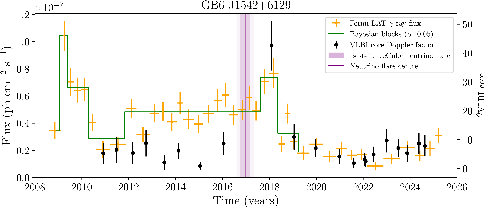
图注：Multimessenger temporal evolution of the blazar GB6~J1542+6129. The orange points (left axis) show the adaptively binned \textit{Fermi}-LAT $\gamma$-ray flux (100\,MeV--800\,GeV), constructed with a constant 5\% relative uncertainty criterion. The green lines show the Bayesian blocks with $p=0.05$. The black points (right axis) represent the Doppler factor of the VLBI core derived from 15\,GHz MOJAVE observations. The vertical purple line marks the central epoch of the suspected IceCube neutrino flare (Abbasi et al.~\citeyear{Abbasi2021}), and the shaded regions indicate its central duration of $147$\,d (darker band) and its $1\sigma$ upper extent of $257$\,d (lighter band). The observed temporal offset indicates that the neutrino emission occurs earlier than the subsequent electromagnetic activity.
对应解读：对应“建议重点查看的图表”第1、2、3、5项，以及“关键图表逐图导读”中的图1、图2、图3和模型拟合段落的时间结构分析。
入选理由：这是全文最核心的多信使时间轴图，真实同时包含Fermi-LAT 5%自适应分箱γ射线光变、Bayesian blocks、VLBI 15 GHz核多普勒因子，以及疑似IceCube中微子耀发中心时刻和持续时间阴影。它直接检验日报反复强调的关键结论：中微子窗口是否领先γ射线活动和VLBI核多普勒因子增强约一年。相比单独光变或单独VLBI图，这张图把相对时序、block边界、误差/窗口宽度和后续电磁活动放在同一坐标中，是支撑“上游中微子产生、下游延迟喷流辐射增强”解释的首选图。
来源与置信度：arxiv_source；high；arxiv_source / main.tex:figure[1]
Fig02
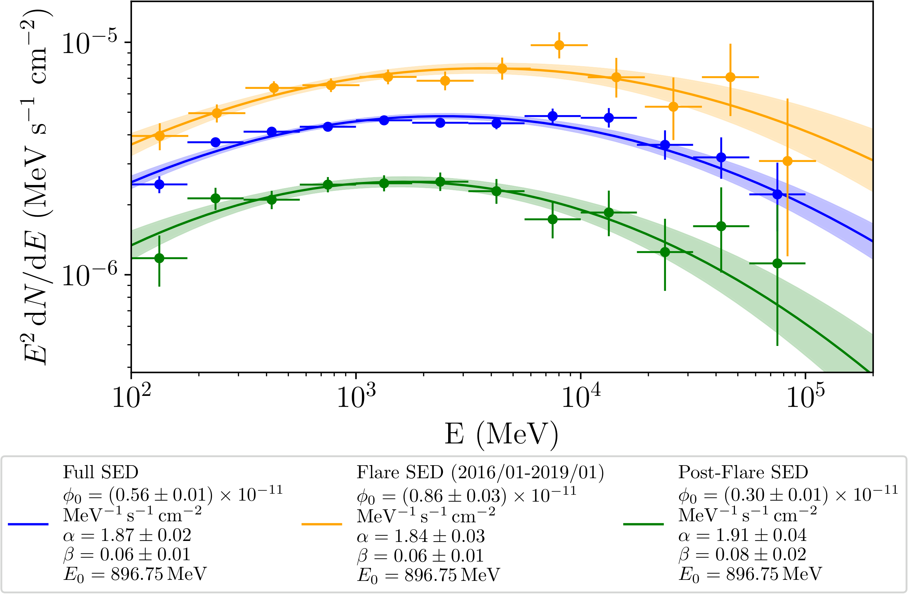
图注：Broadband spectral energy distributions (SEDs) of GB6 J1542+6129 during the full observational period (blue), during the neutrino-associated flare interval (orange), and post-flare (green). The data points represent the Fermi-LAT measurements in logarithmic energy bins, while the solid curves show the best-fit log-parabola models.
对应解读：对应“建议重点查看的图表”第4项、“关键图表逐图导读”中的图4，以及模型拟合段落中关于γ射线SED状态比较和谱形稳定性的讨论。
入选理由：这张图比较了全时段、中微子相关耀发期和后耀发期的Fermi-LAT宽带SED，并给出log-parabola最佳拟合曲线，直接对应日报中关于谱形、归一化、谱指数/曲率是否变化的解读。它能检验作者所称不同状态下γ射线谱形基本一致，从而支持辐射条件未发生剧烈机制切换、延迟电磁增强可能与同一扰动或多普勒变化有关。虽然不展示多信使时间延迟本身，但对物理解释中的“稳定粒子加速条件”非常关键。
来源与置信度：arxiv_source；high；arxiv_source / main.tex:figure[2]
强相关工作
这篇工作自然应放在 TXS 0506+056、PKS 1502+106、3HSP J095507.9+355101 等 IceCube 候选耀变体研究的背景中理解。相似工作的共同问题是：空间关联较容易，时间和物理关联较难；单区模型经常遇到能量预算和电磁级联限制，多区模型则需要额外几何和时序证据。建议检索关键词包括“IceCube blazar neutrino VLBI Doppler factor”, “TXS 0506+056 multi-zone neutrino model”, “MOJAVE neutrino blazar association”。
它也与 γ 射线耀变体总体中微子贡献的争论有关。若大多数中微子产生在 γ 射线不透明或非同步的上游区，那么用同时 γ 射线亮度筛选源会漏掉一部分候选；但如果关联主要来自事后挑选，则统计显著性会被高估。因此应同时关注反方研究：IceCube 对 Fermi 亮耀变体堆叠分析的限制、γ 射线背景对强子模型的限制，以及对 TXS 0506+056 事件多波段 SED 的能量学批评。
相似工作：
- https://arxiv.org/abs/1807.08794
- https://arxiv.org/abs/1807.08816
- https://arxiv.org/abs/2009.09792
基础理论 / 方法工作：
- https://arxiv.org/abs/1609.08637
- https://arxiv.org/abs/1011.6445
- https://arxiv.org/abs/0809.5117
相反观点 / 张力线索：
- https://arxiv.org/abs/1901.10806
- https://arxiv.org/abs/1907.11266
- https://arxiv.org/abs/2011.03545
6. Multi-messenger Constraints on a Primordial Black Hole Origin of the KM3-230213A Event
- 来源：arXiv / astro-ph.HE
- 链接：https://arxiv.org/abs/2605.00565v1
- 作者：Yuber F. Perez-Gonzalez
- 评分：novelty 7/10，importance 7/10，relevance 9/10，final 8.70/10
- 推荐理由：针对 KM3-230213A 的 PBH 蒸发解释给出伽马线、宇宙线和中微子多信使排除论证，主题及时且与高能中微子解释高度相关。
中文题目：对 KM3-230213A 事件原初黑洞起源的多信使限制
做了什么：这篇文章检验一个激进解释：KM3NeT 报告的高能中微子样事件 KM3-230213A 是否可能来自附近原初黑洞 PBH 的最终 Hawking 蒸发爆发。作者在最小四维 Schwarzschild PBH 场景下计算终末蒸发应产生的中微子、γ 射线和宇宙线信号，并考虑 γ 射线望远镜随时间变化的视场覆盖。结论很明确：若 PBH 足够近到能解释该事件，那么在爆发前就应被现有 γ 射线实验看到前兆信号，且中微子望远镜也应看到较低能事件；这些多信使信号没有出现，因此最小 4D Schwarzschild PBH 起源被强烈排除或至少严重不利。
为什么重要：高能单事件很容易诱发新物理或奇异天体解释，但 PBH 终末蒸发不是只产生一个孤立中微子。Hawking 辐射会同时产生标准模型粒子，且临近终末阶段通量和温度快速上升。因此，一个能解释 KM3-230213A 的近邻 PBH 必然伴随 γ 射线和较低能中微子前兆。本文的重要性在于把“能不能产生一个高能事件”转化为“是否违反完整多信使非探测约束”。
理论 / 观测 / 仪器方法价值：对理论而言，它给 PBH 解释高能中微子事件设定了严格的可检验边界，避免只凭终末爆发最高能尾部做解释。对观测而言，它说明 γ 射线仪器视场、曝光和时间覆盖必须纳入 PBH 爆发检验，而不能用全天均匀曝光近似。对方法而言，它提供了从 Hawking 温度演化、粒子发射谱、传播到探测器事件率的多信使一致性框架。
为什么应该关注：如果你关注 KM3NeT 的极高能事件、PBH 暗物质或 Hawking 辐射可观测性，这篇文章的结论是一个重要负结果：最简单 PBH 终末蒸发模型很难解释 KM3-230213A。它也提醒读者，单个异常事件的“源模型”必须同时通过 γ 射线、宇宙线和中微子非探测的约束。对未来瞬变搜索而言，PBH 爆发更应该表现为多粒子、多能段、随时间硬化的前兆序列，而不是孤立的一个中微子样事件。
展开详细解读：文章讲解、背景、理论、重点章节、图表与相关工作
文章详细讲解
科学问题：KM3NeT 报告的 KM3-230213A 是一个高能中微子样事件，引发了对其天体源或新物理起源的讨论。PBH 终末蒸发是其中一种可能：黑洞质量降到足够低时 Hawking 温度升高，最终在短时间内释放高能标准模型粒子，包括中微子、γ 射线、电子/正电子、夸克和胶子。问题是，一个能在地球附近产生可探测高能中微子的 PBH，是否也会产生已经应被观测到的其他信号。
作者怎么做：作者采用最小四维 Schwarzschild PBH 模型，即不引入额外维度、黑洞自旋或电荷等复杂修正。基于 Hawking 辐射的时间依赖温度和粒子谱，估计 PBH 在终末阶段对中微子、γ 射线和宇宙线的产额。关键改进是考虑 γ 射线观测设备的时间依赖视场，而不是假设源始终处于可见区域。随后将能解释 KM3-230213A 所需的源距离和爆发时间，与现有 γ 射线和中微子非探测进行比较。
关键结果：若 PBH 足够近到让 KM3NeT 探测到类似 KM3-230213A 的高能事件，它在爆发前较长时间内应产生可观测的 γ 射线前兆。与此同时，中微子探测器也不应只看到一个最高能事件，而应在较低能段、较早时间看到更多事件。当前没有这些多信使前兆，因此在最小 4D Schwarzschild 情形下，PBH 解释受到强烈排斥。
局限和下一步：结论主要针对标准四维、非旋转、无电荷 PBH。若考虑黑洞自旋、非标准粒子谱、暗部门、额外维度、洛伦兹破缺或复杂传播效应，信号比例和时间结构可能改变，但这些都需要额外假设并会受到其他观测约束。下一步应把类似时间依赖视场方法系统应用于不同瞬变探测器，并在 KM3NeT、IceCube、HAWC、LHAASO、Fermi-GBM/LAT 等数据之间建立统一的 PBH 爆发触发和前兆搜索框架。
背景知识
原初黑洞是早期宇宙密度扰动坍缩形成的黑洞，质量范围可跨越许多数量级。质量足够小的 PBH 会因 Hawking 辐射在宇宙年龄内显著蒸发；接近寿命终点时温度迅速升高，辐射功率增大，因此会出现短时高能粒子爆发。过去几十年，PBH 终末爆发一直被用来搜索量子引力、早期宇宙小尺度扰动和暗物质候选。
PBH 爆发的经典观测通道是 γ 射线，因为终末阶段会直接辐射光子，也会辐射夸克和胶子，随后强子化并衰变产生大量次级 γ 射线、中微子和电子/正电子。Fermi、HAWC、VERITAS、H.E.S.S.、LHAASO 等实验都可对不同时间尺度和能段的 PBH 爆发给出限制。中微子通道则有更弱的背景和更大穿透性，但有效面积、角分辨和事件统计限制很强。
现在这个问题值得重新看，是因为 KM3NeT 的高能事件为极端瞬变解释提供了具体目标。但常见误区是只估计 PBH 终末瞬间能否给出一个足够高能的中微子，而忽视同一 Hawking 谱中不可避免的低能粒子和 γ 射线。另一个误区是把 γ 射线非探测简单视为全天均匀限制；实际上地面和空间探测器都有视场、地球遮挡、运行模式和曝光变化，必须按时间和方向处理。
基础理论 / 方法脉络
Hawking 辐射的核心图像是黑洞视界附近的量子场效应使黑洞以近似热谱发射粒子。Schwarzschild 黑洞温度与质量成反比，质量越小温度越高；辐射功率随质量减小而急剧增大，导致最后阶段演化越来越快。对 PBH 终末爆发而言，观测量不仅是总能量，还包括温度随剩余寿命的变化和粒子谱的硬化。
粒子发射不是简单黑体，因为存在自旋和能量相关的灰体因子。温度高于标准模型粒子质量阈值时，黑洞会发射所有可及自由度；夸克和胶子随后强子化，产生 π 介子等次级粒子，进而衰变为 γ 射线、中微子和电子/正电子。因此中微子信号与 γ 射线信号不是可任意分离的，它们共享同一个粒子级联源。
探测层面，源距离决定通量按 $1/4\pi d^2$ 衰减。若要解释一个高能中微子事件，PBH 通常必须非常近；但近源也会让 γ 射线和低能中微子事件率升高。选择效应包括探测器瞬时视场、有效面积能量依赖、地平线遮挡、大气背景、触发阈值和时间窗选择。系统误差还来自高能强子化模型、灰体因子、探测器响应和 KM3-230213A 本身的能量/方向重建。
公式与推导
Schwarzschild PBH 的 Hawking 温度为：
其中 $M$ 是黑洞质量，$G$ 是引力常数，$k_B$ 是玻尔兹曼常数。质量越小，温度越高，因此终末阶段能发射越来越高能的标准模型粒子。
单个粒子种类的微分发射率可写为：
其中 $i$ 表示粒子种类，$s_i$ 是自旋，$\Gamma_i$ 是灰体因子。分母给出玻色子或费米子的热分布，灰体因子修正了黑洞势垒透射率。
黑洞质量损失可近似写为：
其中 $\alpha(M)$ 汇总可发射自由度。若 $\alpha$ 在一段质量范围内近似常数，剩余寿命为：
这说明越接近终点，温度和发射率变化越快，爆发前兆具有强烈时间依赖。
距离为 $d$ 的 PBH 在探测器处产生的粒子通量为：
若包含次级粒子，需要把直接发射的夸克、胶子通过碎裂函数或 Monte Carlo 强子化卷积到最终 $\gamma$、$\nu$ 谱中。
某个中微子探测器的期望事件数为：
其中 $A_{\rm eff}$ 是随能量、方向 $\Omega$ 和时间变化的有效面积。类似地，γ 射线望远镜的期望计数为：
其中 $\epsilon_{\rm FoV}$ 描述源是否在视场内及曝光权重。本文的关键逻辑是：满足 $\mu_\nu\sim 1$ 的近距离 PBH 通常会给出足够大的 $\mu_\gamma$ 或低能 $\mu_\nu$，与非探测冲突。
模型拟合 / 应用方法
这类 PBH 约束通常不是拟合一个复杂天体 SED，而是比较给定 PBH 参数下的期望计数与观测非探测。核心参数包括 PBH 到地球距离 $d$、爆发终止时间、剩余寿命、黑洞质量或温度，以及方向。最小 Schwarzschild 模型中自由度较少，因此一旦要求产生 KM3-230213A 这类事件，距离和时间窗会被强烈限制。
统计上可用 Poisson 似然描述各信使通道的事件数：中微子通道要求在 KM3NeT 看到一个候选事件，同时其他中微子能段/时间窗没有过量；γ 射线通道要求在对应方向和时间曝光下没有显著计数过量。联合似然或排除准则本质上比较 $P(N_{\rm obs}|\mu_{\rm PBH}+b)$，其中 $b$ 是背景。若模型为了产生一个高能中微子而预测多个 γ 射线或低能中微子事件，而观测为零或与背景一致，则模型被排除。
主要系统误差来自探测器有效面积、方向响应、视场随时间变化、粒子谱计算、强子化模型和大气/宇宙线背景。退化关系包括距离与剩余寿命：更近的低温较早阶段和更远的高温终末阶段可能在某能段给出类似事件率，但多信使谱形和时间演化能打破退化。实际应用场景是对未来任何极高能单事件做快速 PBH 检验：先反推所需 PBH 距离，再检查同方向同时间前后的 γ 射线和低能中微子前兆是否已排除。
重点章节 / 结果段落怎么读
-
动机与 KM3-230213A 描述：读者应先确认事件的能量、方向、时间和“中微子样”性质如何进入 PBH 解释。这里不应把候选事件等同于已确定天体中微子源。
-
PBH Hawking 辐射模型：重点看作者是否采用标准四维 Schwarzschild 假设、包含哪些标准模型粒子自由度、如何处理次级 γ 射线和中微子。该部分决定多信使产额比例。
-
探测器视场和曝光处理：这是本文相对关键的方法点。应查看 γ 射线实验的时间依赖 FoV 如何实现，源方向何时可见，哪些时间窗对前兆最敏感。
-
多信使约束结果：重点读所需 PBH 距离、预测 γ 射线计数、预测低能中微子计数和观测上限之间的比较。真正有力的结论来自这些通道的联合不一致。
-
讨论与例外情形：看作者如何限定“最小 4D Schwarzschild 场景”，以及是否讨论自旋 PBH、额外维度、非标准粒子或探测器系统误差可能造成的逃逸空间。
建议重点查看的图表
-
Hawking 温度或剩余寿命随 PBH 质量变化图：检查终末阶段温度如何进入 KM3-230213A 所需能区。
-
中微子与 γ 射线发射谱图：看直接和次级粒子贡献，尤其是能解释高能中微子时 γ 射线通道是否不可避免地很强。
-
预测事件数随 PBH 距离变化图：重点看 $\mu_\nu\sim1$ 的距离范围与 γ 射线排除范围是否重叠。
-
γ 射线仪器视场/曝光时间图：检查源方向在爆发前是否处于可观测状态，时间依赖 FoV 是否显著影响结论。
-
爆发前兆时间演化图：看不同能段信号是否在终点前逐渐增强，而不是只在最后瞬间出现。
-
排除参数空间图：若有，应看横轴/纵轴是距离、剩余时间、温度还是爆发时刻，置信区间和非探测约束如何叠加。
关键图表逐图导读
图 1：PBH 终末演化图。横轴可能是剩余寿命或黑洞质量，纵轴是 Hawking 温度、辐射功率或典型粒子能量。曲线展示越接近蒸发终点，温度和功率越高。主要结论是 KM3-230213A 所需能量对应极晚期、极高温阶段。读图陷阱是剩余寿命坐标常为对数，最后一小段时间包含巨大的物理变化。
图 2：粒子发射谱图。横轴为粒子能量，纵轴为微分发射率或能量通量；不同颜色代表中微子、γ 射线、电子/正电子或次级粒子。应看在产生高能中微子的同时，较低能中微子和 γ 射线是否更丰富。陷阱是直接 Hawking 光子与强子化次级光子可能分开展示，读者需要合并理解总 γ 射线预期。
图 3：事件率/期望计数随距离变化图。横轴为 PBH 距离，纵轴为期望探测事件数 $\mu$；不同线代表 KM3NeT、IceCube 或 γ 射线仪器。若解释 KM3-230213A 需要 $\mu_\nu$ 接近 1，那么同一距离处 γ 射线或低能中微子线若高于排除阈值，模型即受排斥。陷阱是不同实验的能阈和时间窗不同，不能只比较线的高度而不看积分条件。
图 4：视场/曝光随时间图。横轴为相对 KM3-230213A 的时间，纵轴为曝光、可见性或有效面积权重。色带可能表示 γ 射线仪器可观测区间。主要结论是当前实验在爆发前应有机会看到前兆。陷阱是“不可见”的短时段不等于整个 PBH 场景逃脱，因为前兆可持续并跨越多个可见窗口。
图 5：参数排除图。横轴可能是爆发时间或剩余寿命，纵轴可能是距离或温度；阴影区代表 γ 射线、中微子或宇宙线非探测排除，标记点代表能解释 KM3-230213A 的参数组合。读者应看解释区域是否完全落入排除区。陷阱是置信水平、背景假设和试验因子会影响边界位置，但通常难以改变“强烈不利”的总体判断。
论文原图 / 可嵌入图片
Fig02
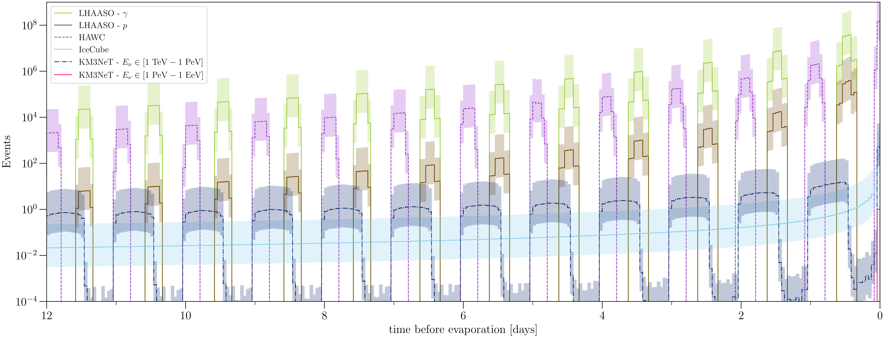
图注：Time evolution of expected events in neutrino and gamma ray/cosmic rays detectors twelve days prior to the KM3NeT event, assumed it to have a PBH origin. We present events in LHAASO ($\gamma$ - green, $p$ - brown), HAWK (dashed purple), IceCube (light blue), KM3NeT low energies ($E_\nu \in [1~\mathrm{TeV},\,1~\mathrm{PeV}]$ dark blue)
对应解读：对应“建议重点查看的图表”第3项预测事件数/第5项爆发前兆时间演化，以及“关键图表逐图导读”中的图3事件率和图5前兆/排除逻辑。
入选理由：该图直接展示若 KM3-230213A 来自 PBH，爆发前12天内 LHAASO、HAWC、IceCube、KM3NeT 低能段等多信使通道的期望事件数随时间演化，是论文排斥 PBH 起源的核心证据。它比单纯谱图更直接连接到非探测约束：若为了产生一个高能 KM3NeT 事件，同期应在 γ 射线、宇宙线或低能中微子通道出现可观测前兆。
来源与置信度：arxiv_source；high；arxiv_source / moriond.tex:figure[2]
Fig01
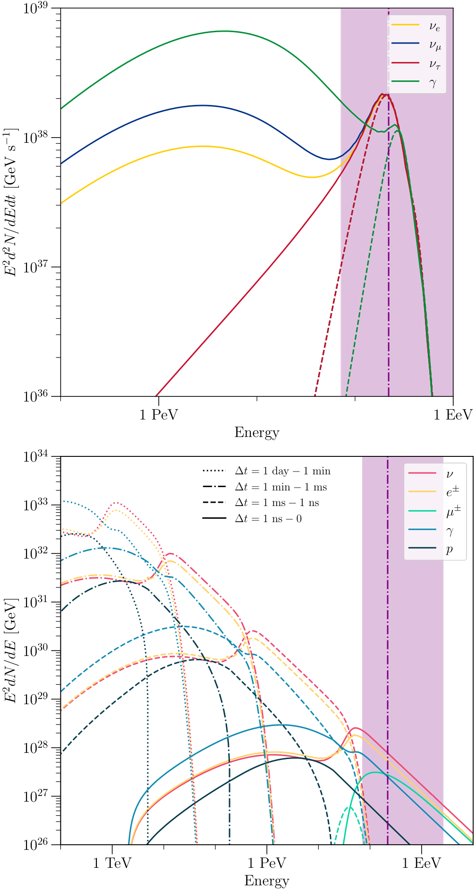
图注：Left: Hawking spectra for neutrinos and photons from a PBH with $M=2.5\times10^5~{\rm g}$ (dashed: primary). Right: time-integrated spectra for different intervals before evaporation. The purple band indicates the KM3-230213A energy range (90\% C.L.).
对应解读：对应“建议重点查看的图表”第1项 Hawking 终末谱/温度能区和第2项中微子与 γ 射线发射谱图，以及“关键图表逐图导读”中的图1和图2。
入选理由：该图给出 PBH Hawking 辐射中中微子与光子的能谱，并用紫色带标出 KM3-230213A 的能量范围，同时区分 primary 成分和不同蒸发前时间区间的积分谱。它支撑了日报中关于高能中微子产生时 γ 射线和较低能粒子不可避免伴随产生的物理解释，是理解后续多信使排除的基础。
来源与置信度：arxiv_source；high；arxiv_source / moriond.tex:figure[1]
强相关工作
这篇文章与长期 PBH 终末爆发搜索直接相关。Fermi-LAT、HAWC、VERITAS、H.E.S.S.、LHAASO 以及早期 EGRET/Whipple 类搜索都曾用短时 γ 射线爆发的非探测限制本地 PBH 爆发率。中微子方面，IceCube、ANTARES、Super-K 等也可从瞬变或弥散信号角度约束 PBH。建议检索关键词包括“primordial black hole evaporation gamma-ray burst limits”, “PBH final burst Hawking radiation neutrinos”, “KM3-230213A primordial black hole”。
它也和 PBH 暗物质及新物理讨论相连，但本文结论针对的是最小四维 Schwarzschild 终末蒸发解释。相反或可逃逸的方向包括旋转 PBH 改变粒子谱、额外维度改变温度-寿命关系、暗部门粒子带走能量、或事件本身并非标准中微子相互作用。不过这些模型不能只解释一个事件，还必须重新面对 γ 射线背景、宇宙线、BBN/CMB 和局域爆发率限制。无法确信所有最新 KM3NeT 事件解释论文链接时，应优先通过 arXiv/ADS 检索上述关键词和事件名。
相似工作：
- https://arxiv.org/abs/2012.12505
- https://arxiv.org/abs/1502.01076
- https://arxiv.org/abs/0912.5297
基础理论 / 方法工作：
- https://doi.org/10.1038/248030a0
- https://doi.org/10.1007/BF02345020
- https://doi.org/10.1038/253251a0
相反观点 / 张力线索：
- https://arxiv.org/abs/2002.12778
- https://arxiv.org/abs/2109.09755
- https://arxiv.org/abs/2007.10793
7. Non-uniform particle injection into black hole jets by radiative magnetic reconnection
- 来源：arXiv / astro-ph.HE
- 链接：https://arxiv.org/abs/2605.01002v1
- 作者：Rin Oikawa, Kenji Toma, Shigeo S. Kimura
- 评分：novelty 7/10，importance 7/10，relevance 8/10，final 8.35/10
- 推荐理由：研究黑洞近区辐射磁重联产生非均匀对等离子体并影响 M87 类喷流供给和 VHE 辐射，理论上与高能喷流物理密切相关。
中文题目：辐射磁重联如何向黑洞喷流非均匀注入正负电子等离子体
做了什么：这篇论文研究黑洞喷流最基本但仍未解决的问题之一：喷流中的等离子体从哪里来。作者关注黑洞附近非轴对称磁重联产生的高能光子，这些光子在弯曲时空中传播并相互碰撞，产生电子—正电子对。通过广义相对论光线追踪，他们计算了喷流区域内的对产生率空间分布，并特别考虑了光子传播方向、碰撞角和黑洞自旋的影响。主要结论是：即使考虑光子场各向异性，这一机制也能为 M87 喷流提供足够的粒子数以解释其射电辐射；同时，自旋黑洞会显著改变对注入的空间分布，从而影响喷流加速和喷流底部的甚高能辐射。
为什么重要：黑洞喷流理论长期能较好解释能量和角动量如何从旋转黑洞或吸积盘磁场中抽取出来，但对“喷流里到底装了多少粒子、这些粒子在哪里被装进去”一直不够清楚。粒子装载量决定喷流磁化程度、辐射效率、加速长度尺度和可观测谱形。这篇工作把近黑洞磁重联、高能辐射、γγ 对产生和广义相对论光线传播放在同一个框架中，直接连接到了 M87 这类可观测喷流。
理论 / 观测 / 仪器方法价值：理论价值在于，它为黑洞喷流的 pair loading 提供了一个几何上非均匀、与黑洞自旋相关的来源，而不是把粒子注入当成均匀背景或自由参数。观测价值在于，它把对产生率与 M87 射电喷流所需粒子数联系起来，并提示喷流底部甚高能辐射和空间结构可能携带黑洞附近磁重联几何的信息。方法价值在于，广义相对论光线追踪允许定量处理强引力区光子传播方向和碰撞角，而这些因素会直接进入 γγ 对产生截面。
为什么应该关注：如果你关心 EHT 时代的黑洞喷流、M87 的喷流底部、AGN TeV 辐射或 GRMHD 模拟如何与真实辐射观测相连，这篇文章值得看。它讨论的不是喷流“能不能被发射”，而是喷流“如何被填充成一个能发光、能加速、能被观测到的等离子体系统”。这会影响我们如何从射电图像、偏振和高能光变反推近视界区域的物理条件。
展开详细解读：文章讲解、背景、理论、重点章节、图表与相关工作
文章详细讲解
科学问题：相对论喷流可以由黑洞自旋能或吸积盘旋转能驱动，但一个 Poynting-flux 主导的磁场结构本身并不自动给出足够的带电粒子。若喷流太“空”，电流闭合、辐射产生、理想 MHD 条件以及后续加速都会出问题；若粒子过多，磁化程度会下降，喷流动力学和辐射效率又会改变。因此，近黑洞区域的电子—正电子对产生率、空间分布和各向异性，是连接 GRMHD 喷流模型与 M87 等实际观测的关键环节。
作者怎么做：论文把近期三维 GRMHD 模拟中出现的非轴对称磁重联作为高能光子源。磁重联区域可以产生足够硬的辐射场，高能光子在黑洞附近弯曲时空中传播，并通过 γγ 碰撞产生 e± 对。作者使用广义相对论光线追踪计算光子轨迹、能量红移/蓝移、传播方向以及局部碰撞角，再由 γγ 对产生截面得到喷流内部不同位置的对产生率。这比简单的局域、各向同性光子场估计更接近强引力区真实几何。
关键结果：作者发现，即使把光子各向异性纳入计算，该情景仍能向 M87 喷流提供足以解释射电辐射的等离子体。更重要的是，对注入并不是空间均匀的，而会受到磁重联位置、光子束方向、引力透镜效应和黑洞自旋共同塑形。自旋黑洞不仅影响喷流磁场与能量抽取，也会通过改变光子轨道和局部碰撞几何来改变 pairs 的空间分布。这意味着喷流加速区的质量装载、磁化参数和高能辐射区域都可能具有明显的非轴对称或高度依赖结构。
局限和下一步：摘要显示这项工作主要是后处理式的辐射—对产生计算，而不是完全自洽的辐射 GRMHD 或 kinetic 模拟。磁重联光子源的光谱、时变性、空间分布和角分布仍可能依赖模拟设定；对产生后的 pair plasma 是否会反过来改变电磁场结构、重联速率和辐射场，也需要更自洽的反馈计算。下一步很自然是把这种非均匀 pair loading 作为输入接入喷流加速和辐射转移模型，比较 EHT 尺度结构、毫米/射电谱、偏振以及 TeV 光变。
背景知识
研究对象是活动星系核中由超大质量黑洞附近发射的相对论喷流。以 M87 为例，它的黑洞质量巨大、喷流近距离可分辨，并且从射电到 TeV 波段都有观测约束，是检验喷流发射、加速和辐射模型的基准源。EHT 给出了视界尺度附近的毫米图像，VLBI 则追踪更外侧喷流准直和加速，这使得“喷流从哪里获得能量”和“喷流中粒子如何装载”都变成可以被观测约束的问题。
历史上，Blandford-Znajek 机制解释了旋转黑洞如何通过磁场抽取自旋能，GRMHD 模拟也能自然产生准直的 Poynting-flux 主导喷流。但这些模拟常常需要对低密度磁层设置 density floor，或者假定某种 pair supply，以避免数值真空。这个处理在动力学上方便，却模糊了真实喷流中粒子数密度的物理来源。pair loading 问题因此成为从“喷流动力学模拟”走向“可观测辐射预测”的瓶颈。
为什么现在值得重新看：一方面，三维 GRMHD 模拟开始显示近黑洞磁场结构和耗散并非简单轴对称，磁重联和电流片会产生局部高能辐射；另一方面，EHT、毫米 VLBI 和 TeV 观测已经对喷流底部的大小、亮度温度、磁场和粒子能量分布提出更强限制。若对产生是高度非均匀的，那么简单的一维或轴对称喷流模型可能会错过重要物理。
常见误区是把“喷流由磁场驱动”误解为“不需要粒子来源”。实际上，无论辐射还是电流系统都需要带电粒子；另一个误区是把 pair production 只看作局域阈值问题，忽视光子角分布。γγ 对产生不仅要求能量足够高，还强烈依赖碰撞角，强引力区光线弯曲会改变这一点。
基础理论 / 方法脉络
核心物理图像是：近黑洞磁重联把磁能转化为粒子能量和高能光子；高能光子在强引力场中传播，部分光子相互碰撞；当两光子质心系能量超过电子—正电子静质量能量阈值时，就能产生 e± 对。这些 pairs 若进入喷流磁通管，就为喷流提供电荷、惯性和辐射粒子。
关键量包括光子能量 $E_1,E_2$、两光子传播方向夹角 $\theta$、局部光子数密度 $n_\gamma$、γγ 截面 $\sigma_{\gamma\gamma}$、对产生率 $\dot n_{\pm}$、喷流磁化参数 $\sigma$ 以及黑洞自旋参数 $a_*$。其中 $1-\cos\theta$ 特别重要：正面碰撞最有效，同向传播几乎不能产生对。广义相对论光线追踪的作用，就是把远处或源区定义的光子四动量沿测地线传输到局部正交标架中，再计算局部能量和角度。
模型假设方面，这类工作通常需要指定磁重联辐射源的位置、大小、光谱、发射角分布和总光度。若光子源被简化为各向同性，常会高估或低估某些区域的对产生率；若考虑非轴对称源，则 pairs 可能集中在喷流一侧、某些高度或特定磁通面附近。黑洞自旋通过 frame dragging、ISCO/磁层结构和光子轨道改变源区几何与传播路径。
观测连接主要来自射电发射所需的非热电子数、喷流底部亮度和高能辐射。若计算得到的 pair supply 太低，模型无法解释 M87 射电喷流；若太高，则喷流磁化程度下降，可能不符合加速和准直观测。因此 pair loading 不是一个孤立微物理问题，而是喷流动力学和辐射诊断的共同约束。
公式与推导
γγ 对产生的基本阈值可从两光子四动量不变量写起。设局部惯性系中两光子能量为 $E_1$、$E_2$，夹角为 $\theta$，则质心能量平方为
这里 $s$ 是两光子系统的不变量，$1-\cos\theta$ 表示碰撞几何；正面碰撞 $\theta=\pi$ 时最大。产生电子—正电子对要求
其中 $m_e$ 为电子质量，$c$ 为光速。这个式子说明，仅有高能光子还不够，角分布同样决定 pair production 是否有效。
在强引力区，光子能量不是简单常数，而要由光子四动量 $p^\mu$ 与局部观测者四速度 $u^\mu$ 给出：
$E_{\rm loc}$ 是局部正交标架测得的能量，$p_\mu$ 是沿测地线传播后的协变四动量，$u^\mu$ 可以取 ZAMO、等离子体共动系或其他局部观测者。广义相对论光线追踪的任务就是求出不同位置的 $p^\mu$，再计算局部能量和方向。
局部对产生率可形式化写成
这里 $x$ 表示空间位置，$n_\gamma$ 是局部光子相空间数密度，$d\Omega$ 是方向立体角元，$\sigma_{\gamma\gamma}$ 是 Breit-Wheeler 截面。这个表达式清楚显示，各向异性光子场会通过 $\Omega$ 积分和 $\theta$ 改变结果。
喷流动力学中常用磁化参数衡量能流由磁场还是物质主导：
其中 $B$ 是局部磁场强度，$\rho$ 是质量密度。pair injection 增加 $\rho$，通常会降低 $\sigma$，从而影响喷流加速效率和终端洛伦兹因子。
若把对产生率沿喷流体积积分，可得到注入率
其中 $\sqrt{-g}\,d^3x$ 是弯曲时空中的体积元，$g$ 是度规行列式。将 $\dot N_{\pm}$ 与射电辐射模型所需的电子数或质量通量比较，就能判断该机制是否足以填充 M87 喷流。
模型拟合 / 应用方法
这类论文的核心不一定是传统意义上的多参数观测拟合，而是“物理注入模型 + 辐射需求”的一致性检验。通常需要设定黑洞质量、自旋、吸积率或磁通量、磁重联高能光子光度、源区几何、光谱形状和发射角分布，然后通过 GR ray tracing 得到 $\dot n_{\pm}(x)$ 和 $\dot N_{\pm}$。这些量再与 M87 射电喷流所需的粒子数密度、亮度或辐射模型参数比较。
参数退化主要出现在光子源光度、谱硬度、源区位置和角分布之间。更高的高能光子光度可以提高 pair rate，但若角分布偏同向传播，有效碰撞率可能仍低；源区越靠近黑洞，引力弯曲越强，但红移、吸收和逃逸概率也会变化。黑洞自旋与源区几何也存在退化：自旋改变光子轨道和磁层结构，但类似的空间分布有时也可能由不同的重联位置或光子束方向造成。
若与观测残差相连，读者应关注模型能否同时满足射电粒子数需求、喷流高磁化加速需求和高能辐射上限。只匹配总粒子数并不充分；空间分布若不对，可能会导致喷流底部过亮、TeV 吸收过强或加速剖面不符。系统误差包括 GRMHD 模拟中的 density floor、电子温度处方、非热粒子加速效率、光子谱外推以及忽略 pair feedback。
实际应用场景包括：为 GRMHD 喷流模拟提供更物理的 pair loading prescription；解释 M87、低光度 AGN 或 blazar 喷流底部的射电/毫米辐射；预测 TeV flare 与近黑洞磁重联事件之间的联系；以及为 EHT 偏振图像的辐射转移模型设置粒子分布。
重点章节 / 结果段落怎么读
-
引言和物理动机：重点看作者如何定义喷流粒子来源问题，以及为什么传统 GRMHD 模拟中的数值注入或均匀 pair loading 不足以解释观测。这里应抓住 M87 射电喷流粒子数需求与近黑洞磁重联之间的联系。
-
磁重联光子源模型：读者应检查作者如何参数化非轴对称重联区域，包括位置、几何、光度、能谱和角分布。如果论文给出多个源区或自旋模型，应比较这些设定是否来自 GRMHD 模拟启发，还是作为自由参数扫描。
-
广义相对论光线追踪和 γγ 对产生计算：这是方法核心。应看光子四动量如何传播，局部能量和碰撞角如何计算，是否考虑各向异性，积分区域如何定义，以及是否包含吸收或逃逸边界条件。
-
M87 应用和粒子数比较：重点看计算得到的 $\dot n_{\pm}$、总 $\dot N_{\pm}$ 或喷流内粒子密度如何与 M87 射电发射要求比较。判断结论时不要只看总量，还要看 pairs 是否注入在能影响观测喷流的区域。
-
自旋和空间分布讨论：如果有不同黑洞自旋的对比图，这是理解论文新意的关键。应关注自旋如何改变 pair injection 的高度分布、横向不对称和喷流底部高能辐射预期。
-
局限性和未来工作：看作者是否讨论 pair feedback、自洽辐射 GRMHD、非热粒子谱不确定性以及与 EHT/TeV 观测的进一步比较。
建议重点查看的图表
-
磁重联源区几何示意或模拟快照：看高能光子源相对黑洞、喷流轴和磁通管的位置，尤其是否非轴对称。
-
光线追踪轨迹或光子角分布图：看强引力弯曲是否把原本各向异性的光子带到喷流内部，并产生较大的碰撞角。
-
γγ 对产生率空间分布图：重点看 $\dot n_{\pm}$ 在高度、半径和方位角上的非均匀性；颜色条动态范围很重要。
-
不同黑洞自旋的对比图：看自旋增大是否系统性改变 pair injection 的峰值位置、总量和喷流内外分布。
-
各向同性与各向异性光子场比较：这是判断论文结论稳健性的关键图。若各向异性处理后总量仍足够，结论更有说服力。
-
与 M87 观测需求的比较表或曲线：看模型给出的粒子注入率是否高于或接近射电辐射所需范围，同时是否避免过量装载。
-
参数扫描图：若有光度、谱指数、源区位置变化，应看哪些参数最敏感，以及是否存在需要精细调节的区域。
关键图表逐图导读
图 1：通常应是模型几何或 GRMHD 启发的重联源区示意。横纵轴可能是以引力半径 $r_g$ 为单位的空间坐标，黑洞、喷流轴、重联区域和光子发射方向会被标出。读图时要注意源区是否偏离轴对称，因为后续 pair 分布的非均匀性很大程度来自这个初始几何。陷阱是不要把二维投影误认为完整三维结构。
图 2：若展示光线追踪结果，坐标轴可能为空间位置或光子到达角，曲线代表不同初始方向或不同自旋下的光子轨迹。关键是看光子是否被弯折进入喷流漏斗，以及局部碰撞角是否增大。读图陷阱是只看光线密集区而忽略能量红移和角度权重；真正决定对产生的是能量、密度、角度和截面的乘积。
图 3：对产生率 $\dot n_{\pm}$ 的二维或三维分布图应是核心结果。坐标多半为 $R/r_g$、$z/r_g$ 或 Boyer-Lindquist/Kerr-Schild 坐标，颜色表示单位体积单位时间 pair production rate。应看峰值是否位于喷流轴附近、壁面附近还是重联源下游，以及分布是否明显偏斜。陷阱是颜色条可能为对数尺度，视觉面积大不代表总注入量大。
图 4：不同黑洞自旋或不同源区设定的比较图。数据或色图若显示高自旋模型产生更集中或更偏向某些区域的 pairs，就支持“自旋塑形 pair injection”的结论。读者应检查总注入率与空间分布是否同时变化，因为相同总量但不同分布会导致完全不同的喷流动力学。
图 5：模型与 M87 需求的比较图或表。纵轴可能为 $\dot N_{\pm}$、粒子密度或射电辐射所需电子数，横轴可能为光子光度、源区半径或自旋。应关注观测需求带的宽度和模型不确定性是否重叠。陷阱是把“足够解释射电”理解为唯一模型；它只说明该机制在能量和粒子数上可行。
图 6：若有稳健性检验，应看各向同性/各向异性、不同光谱指数、不同重联效率下的变化。最关键的是结论是否依赖极端参数。如果只有在非常高光度或非常硬谱下才成立，物理解释会较弱；若在合理参数范围内均成立，则更有说服力。
论文原图 / 可嵌入图片
Fig04
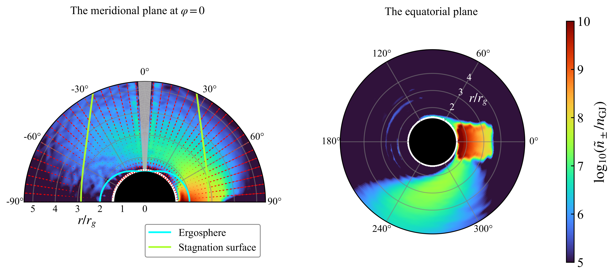
图注：Spatial distribution of injected $e^{\pm}$ pairs in the black hole magnetosphere via radiative magnetic reconnection for M87, with $a = 0.9375$ and $\xi = 1000$. The left panel shows the spatial distribution on the meridional plane at $\varphi = 0$, and the right panel shows the distribution on the equatorial plane. Photon geodesics become singular along the black hole rotation axis ($\theta=0$); accordingly, this region is masked in gray. The colormap shows the multiplicity, defined as the ratio of the pair plasma density, $\tilde{n}{\pm}=\dot{n}r_g/c$, to the Goldreich–Julian density, $n$.}\approx aB/(8\pi e r_h)$, evaluated at the center of the reconnection region. The light blue line indicates the ergosphere, while the light green line represents the stagnation surface, which separates the inflow and outflow regions for a cold plasma. The red arrows show the projection of the radial momentum $Q^{\hat{r}}/Q^{\hat{t}}$. We confirm that the upstream magnetization parameter of the reconnection region is self-regulated by pair creation, $\sigma = 5.5 \times 10^{4
对应解读：对应“γγ 对产生率空间分布图”和关键图表逐图导读中的图 3 核心结果；也支撑模型一致性检验中关于 $\dot n_{\pm}(x)$、Goldreich–Julian 密度和 M87 pair loading 的讨论。
入选理由：这是论文最核心的结果图，直接给出 M87 参数下 Kerr 黑洞磁层中注入 e± 对的空间分布，包含子午面与赤道面、颜色条为相对 Goldreich–Julian 密度的 multiplicity，并标出 ergosphere、stagnation surface 和动量方向。它最能支撑日报关于 pair injection 非均匀性、喷流轴/壁面装载位置以及是否足够供给 M87 喷流的解读。
来源与置信度：arxiv_source；high；arxiv_source / sample701.tex:figure[4]
Fig05
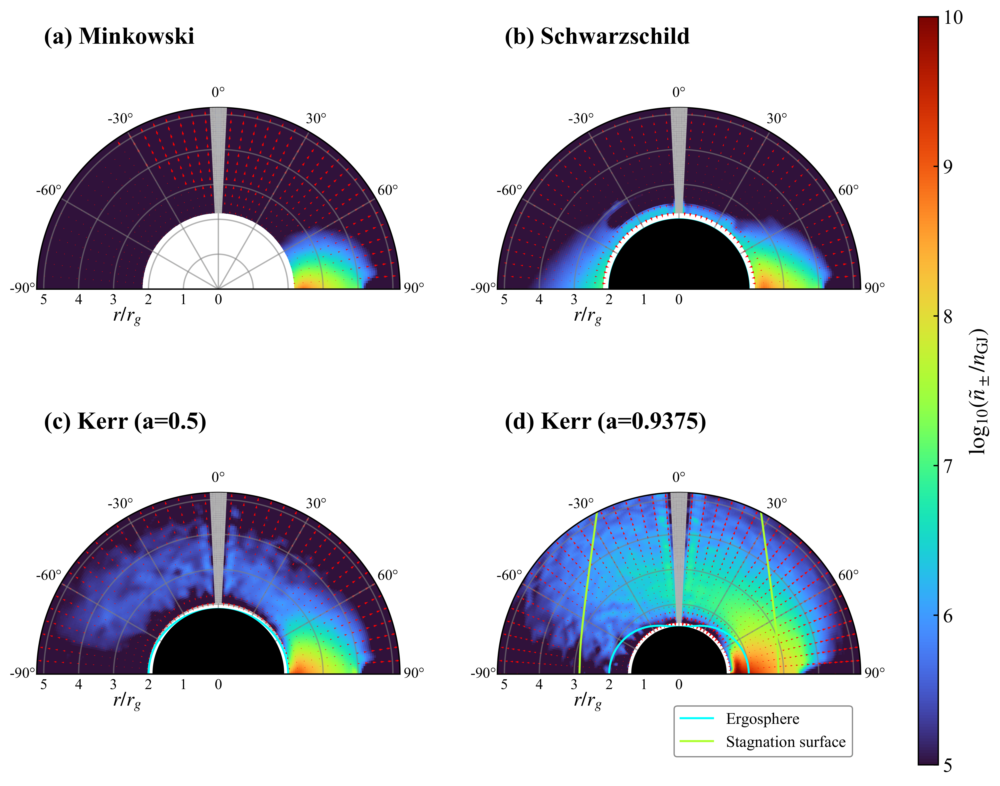
图注：Comparison of the spatial distribution of pair injection into the magnetosphere on the meridional plane at $\varphi = 0$ for different spacetime geometries (the equatorial-plane distribution is shown in Appendix~\ref{Appendix:Spartial distribution in equator}, Figure~\ref{GR2}). Panels (a)–(d) show the density distributions for Minkowski, Schwarzschild, Kerr metric with $a = 0.5$, and $a = 0.9375$, respectively. The Goldreich–Julian density is evaluated using the Kerr black hole with $a = 0.9375$.
对应解读：对应“不同黑洞自旋的对比图”和关键图表逐图导读中的图 4；也对应详细解读里“自旋黑洞塑形 pairs 空间分布”的关键结论。
入选理由：该图系统比较 Minkowski、Schwarzschild、Kerr a=0.5 与 a=0.9375 下的 pair injection 子午面分布，是判断强引力与黑洞自旋是否改变峰值位置、喷流内外分布和注入形态的关键证据。相比单一模型图，它直接检验了论文摘要中“spinning black hole plays a crucial role”的核心主张。
来源与置信度：arxiv_source；high；arxiv_source / sample701.tex:figure[5]
Fig07
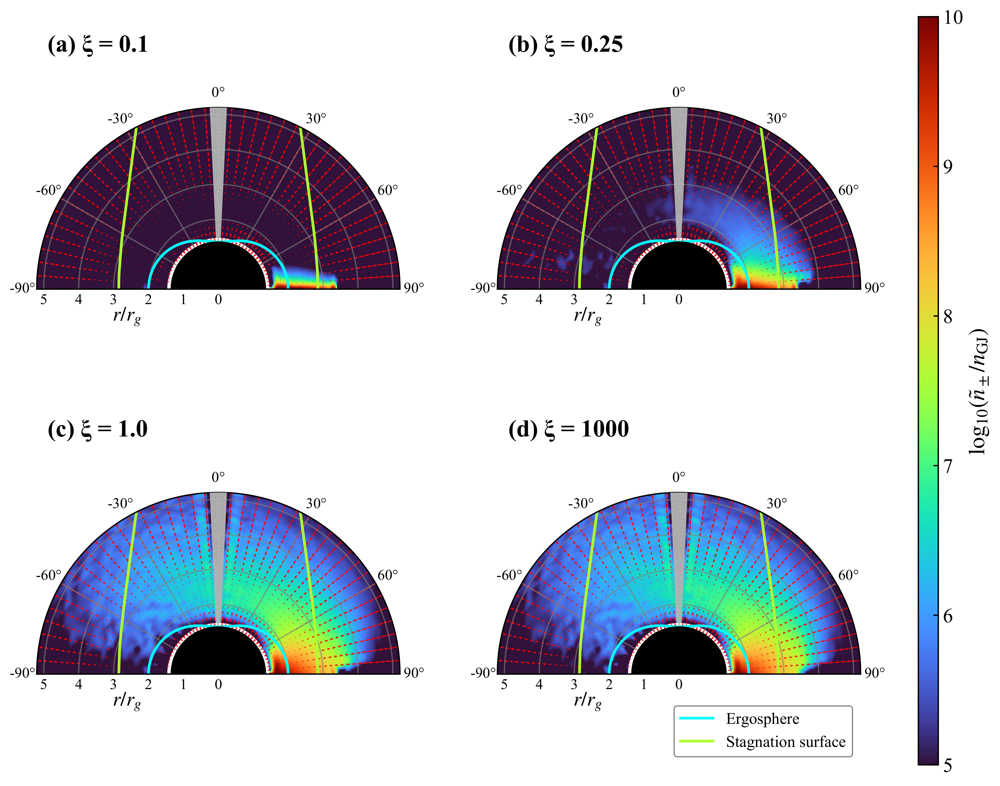
图注：Comparison of the spatial distribution of injected pairs on the meridional plane at $\varphi = 0$ for different degrees of anisotropy, $\xi = 0.1, 0.25, 1.0,$ and $1000$ (see Fig.~\ref{anisotropic function graph}), adopting a spin parameter $a = 0.9375$. The corresponding equatorial-plane distributions are shown in Section~\ref{Appendix:Spartial distribution in equator} (Fig.~\ref{Anisotropy2}).
对应解读：对应“各向同性与各向异性光子场比较”和关键图表逐图导读中的图 6；也支撑模型拟合段落中关于光子角分布与总注入率退化的讨论。
入选理由：该图比较 $\xi=0.1,0.25,1.0,1000$ 不同各向异性程度下的 pair injection 空间分布，直接回答日报强调的稳健性问题：即各向异性处理后是否仍能产生足够且空间结构合理的 pairs。它比单独的各向异性函数图更接近物理结果。
来源与置信度：arxiv_source；high；arxiv_source / sample701.tex:figure[7]
Fig03
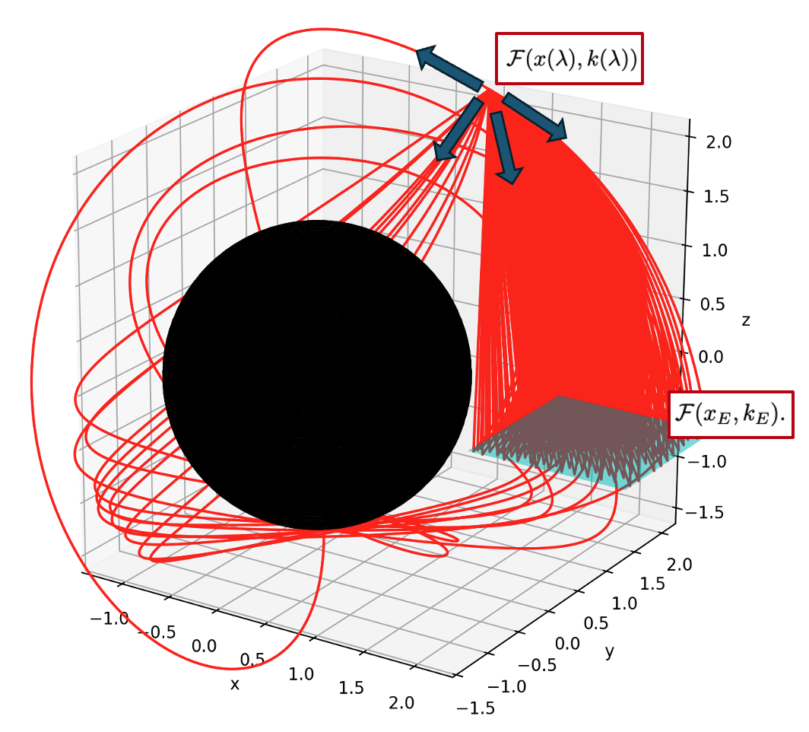
图注：Null geodesic ray-tracing in Kerr spacetime. From each point where pair creation occurs, 7,200 photons are isotropically emitted in the ZAMO frame and traced backward in time (red lines). The photon trajectories are followed until they either intersect the reconnection region (cyan region), fall into the black hole horizon, or escape to large radii ($\sim 30\,r_g$).
对应解读：对应“光线追踪轨迹或光子角分布图”和关键图表逐图导读中的图 2；支撑作者使用 GR ray tracing 计算光子传播、弯曲和碰撞几何的技术路线。
入选理由：该图展示 Kerr 时空中的 null geodesic ray tracing，红色光线从 pair creation 位置反向追踪到重联区域、黑洞或远处，是理解强引力如何把高能光子带入磁层并改变碰撞角的基础。它能帮助读者把后续 pair 分布与光子传播几何联系起来。
来源与置信度：arxiv_source；high；arxiv_source / sample701.tex:figure[3]
Fig06
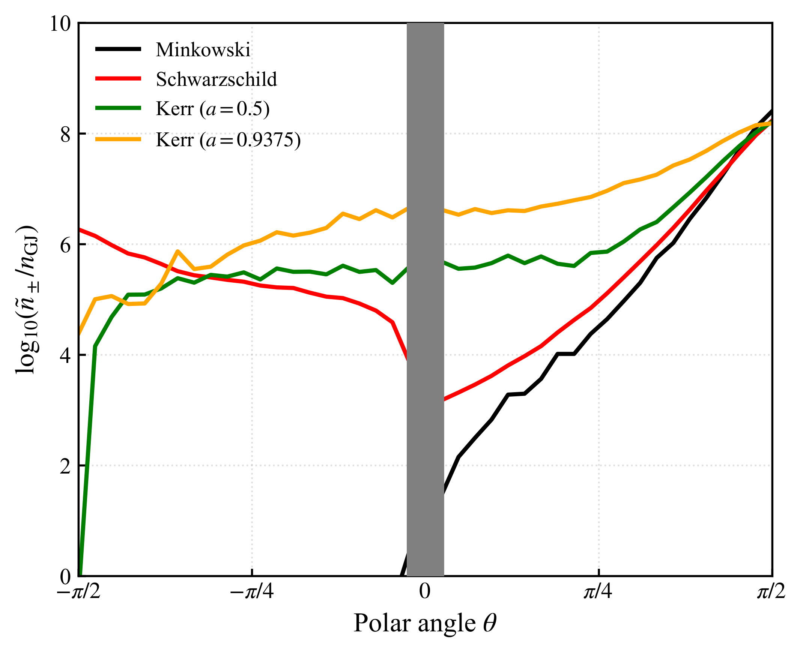
图注：Polar-angle ($\theta$) distribution of the injected pair plasma at $r = 3\,r_g$ shown in Figure~\ref{GR1}.
对应解读：对应“γγ 对产生率空间分布图”中关于高度、半径和极角非均匀性的补充诊断；也对应关键图表逐图导读中提醒读者不要只凭二维色图面积判断总注入的部分。
入选理由：该图给出 Fig04 在 $r=3r_g$ 处的极角分布，是对二维颜色图的定量剖面补充。它可以更清楚地显示 pair plasma 是否集中在喷流轴、漏斗边界或特定极角区域，有助于判断非均匀注入对喷流 spine/sheath 结构的影响。
来源与置信度：arxiv_source；high；arxiv_source / sample701.tex:figure[6]
Fig01
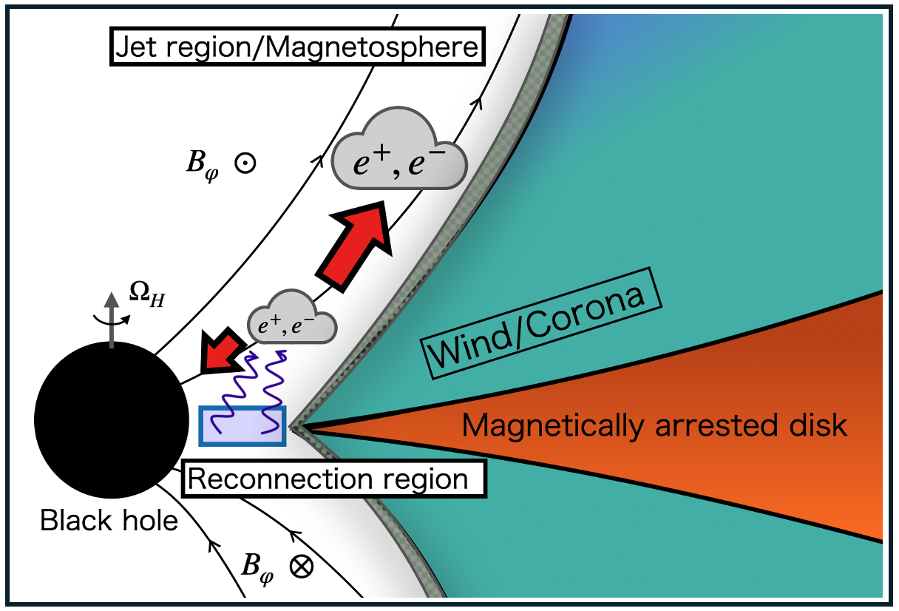
图注：Schematic picture of particle injection into the black hole magnetosphere driven by magnetic reconnection. Magnetic reconnection releases magnetic energy and converts it into the energy of nonthermal particles. These nonthermal particles subsequently cool via synchrotron radiation, efficiently producing high-energy photons. The resulting photon field leads to electron–positron pair production. The gray-shaded region represents the transition layer between the magnetosphere and the matter-dominated region (see Section~\ref{Model:self regulate} for details).
对应解读：对应“磁重联源区几何示意或模拟快照”和关键图表逐图导读中的图 1；支撑日报详细解读中关于磁重联高能光子源、磁层和物质主导区关系的背景说明。
入选理由：该图是粒子注入机制的几何示意，标出磁重联、非热粒子、高能光子、pair production 以及磁层—物质主导区过渡层之间的因果链。虽然不是定量结果图，但能帮助读者理解后续光线追踪和空间分布图中的源区设定。
来源与置信度：arxiv_source；high；arxiv_source / sample701.tex:figure[1]
强相关工作
这项工作与黑洞喷流 pair loading、磁层 gap、低光度 AGN 辐射模型和 GRMHD 后处理辐射转移密切相关。相似问题包括：M87 喷流中非热电子数从何而来，黑洞磁层是否会形成电荷饥饿区域，γγ pair cascade 是否能维持 Blandford-Znajek 电流系统，以及近视界磁重联是否能解释 TeV flare。建议检索关键词：M87 jet pair loading, gamma gamma pair production black hole magnetosphere, radiative magnetic reconnection GRMHD, black hole jet plasma supply, EHT M87 jet emission。
与基础理论的关系是：Blandford-Znajek 机制和 GRMHD 模拟给出喷流的电磁能抽取框架，但不完全解决粒子装载；Breit-Wheeler γγ pair production 给出微物理通道；辐射转移和 VLBI/EHT 观测给出粒子数和空间分布约束。潜在张力在于，不同模型可能把喷流粒子来源归因于吸积盘风、磁层 pair cascade、恒星/云团注入或湍流耗散，而本文强调非轴对称辐射磁重联产生的 pairs。后续需要用多波段光变、偏振和空间分辨喷流结构来区分这些来源。
相似工作：
- https://arxiv.org/abs/2605.01002
- https://arxiv.org/abs/1906.11238
基础理论 / 方法工作：
- https://ui.adsabs.harvard.edu/abs/1977MNRAS.179..433B/abstract
- https://ui.adsabs.harvard.edu/abs/1934PhRv...46.1087B/abstract
相反观点 / 张力线索：
（未提供）
8. Discovery of Quasar Variability and Early Accretion Disk Signatures at Cosmic Dawn
- 来源：arXiv / astro-ph.HE
- 链接：https://arxiv.org/abs/2605.00978v1
- 作者：Gene C. K. Leung, Anna-Christina Eilers, Christos Panagiotou, Julien Wolf, Kishalay De, Luke Weisenbach, Minghao Yue, Xiaohui Fan
- 评分：novelty 8/10，importance 8/10，relevance 6/10，final 8.30/10
- 推荐理由：报道宇宙黎明类星体的红外和 X 射线变光并推断早期薄盘特征，结果新颖重要；虽更偏高红移 SMBH/星系演化，但含 X 射线冠层和吸积物理。
中文题目：宇宙黎明时期类星体的变光发现及早期吸积盘信号
做了什么：这篇论文报告了一个极高红移类星体的红外和 X 射线变光探测，该类星体出现在大爆炸后约 8.5 亿年。红外五个滤光片覆盖其静止系紫外到光学辐射，主要追踪吸积盘；X 射线变光则追踪热冕。作者利用多波段变光谱判断其吸积盘呈现几何薄、光学厚的结构。重要之处在于，这不只是发现“早期类星体会变亮变暗”，而是把变光作为探针，直接约束宇宙早期高 Eddington 比吸积环境下的盘—冕结构，并展示 Rubin 和 Roman 等未来巡天可以用变光研究早期超大质量黑洞增长。
为什么重要：高红移类星体告诉我们超大质量黑洞在宇宙不到 10 亿岁时已经长到很大质量，但它们如何快速增长仍是核心难题。静态光谱和单次测光只能给出黑洞质量、亮度和粗略 Eddington 比；变光则提供了时间尺度、发射区大小、温度结构和盘—冕耦合信息。这篇工作把本地宇宙常用的类星体变光诊断推进到宇宙黎明时期，是早期黑洞吸积物理从“人口统计”走向“时间域物理”的一步。
理论 / 观测 / 仪器方法价值：观测价值在于，它给出了极高红移类星体多波段红外和 X 射线变光的实证案例，并说明静止系 UV/optical 盘辐射与 X 射线热冕都可被时间域数据约束。理论价值在于，变光谱支持几何薄、光学厚吸积盘结构，为早期高 Eddington 比吸积模型提供约束。方法价值在于，它展示了如何在宇宙学时间膨胀、稀疏采样和多仪器系统误差下提取高红移类星体的变光信号，并为 Rubin/Roman 大样本研究提供路线。
为什么应该关注：如果你关心早期超大质量黑洞如何形成、薄盘模型在高红移高吸积率环境中是否仍适用、或者未来时域巡天能否测量高红移黑洞质量，这篇文章值得关注。它的意义不在于单个源本身，而在于证明了宇宙黎明类星体变光可以被多波段捕捉，并能给出吸积盘结构信息。未来一旦样本扩大，这类方法可能成为早期 SMBH 增长研究的重要工具。
展开详细解读：文章讲解、背景、理论、重点章节、图表与相关工作
文章详细讲解
科学问题：本地类星体普遍存在光学/紫外和 X 射线变光，这些变光与吸积盘温度结构、热冕加热、再处理和黑洞质量有关。但在 $z\gtrsim6$ 的宇宙黎明时期，类星体暗、数量少、时间基线在静止系被 $1+z$ 压缩/观测系被拉长，多波段资料稀疏，因此很难探测可靠变光。问题是：早期高 Eddington 比、金属富集和反馈强烈的环境中，吸积盘是否仍像本地薄盘？能否用变光直接研究这些系统的盘—冕物理？
作者怎么做：论文报告了一个大爆炸后约 8.5 亿年类星体的多波段红外和 X 射线变光。红外五个滤光片在该红移下对应静止系紫外到光学，因此主要采样吸积盘的不同半径和温度区域；X 射线则对应靠近黑洞的热冕辐射。作者构建多历元光度变化，提取变量谱，并比较其波长依赖与吸积盘模型预期。
关键结果：他们在红外多个滤光片和 X 射线中都发现变光信号，说明早期类星体的盘和热冕均可通过时间域观测探测。变量谱显示的颜色/波长依赖与几何薄、光学厚吸积盘相符，而不是简单的无色亮度缩放或纯粹由外部污染造成的变化。这为早期高吸积率类星体的盘结构提供了直接观测约束。
局限和下一步：单个对象无法代表整个 $z\sim6$–7 类星体族群，且变光解释可能受到采样窗口、测光零点、宿主星系/发射线污染、微透镜可能性、X 射线计数统计和吸收变化影响。下一步需要更长时间基线、更密集采样、更大样本以及联合光谱监测。Rubin 和 Roman 将在红外/光学时域上发现更多高红移变光类星体，X 射线后续则需要 Athena、Lynx 概念或深度 Chandra/XMM 观测补充。
背景知识
研究对象是宇宙黎明时期的高红移类星体，即由快速吸积的超大质量黑洞驱动、在 $z\gtrsim6$ 附近已经极其明亮的活动星系核。它们的存在对黑洞种子模型和早期增长效率构成强约束：如果种子较轻，需要长期接近或超过 Eddington 增长；如果种子很重，则需要直接坍缩黑洞或其他特殊形成通道。理解吸积盘结构，是判断这些黑洞如何快速增重的必要环节。
本地宇宙中，类星体变光已有大量研究。光学/紫外变光常用 damped random walk、结构函数、盘再处理和温度涨落模型描述；X 射线变光来自更小尺度的热冕，可与 UV/optical 变光存在滞后或相关。对于黑洞质量测量，变光时间尺度与发射区大小和动力学时间有关，因此时间域信息能补充单历元谱线质量估计。
高红移变光难的原因很多。首先，宇宙学时间膨胀使观测者看到的变化变慢，若静止系变化时间为 $t_{\rm rest}$，观测系为 $(1+z)t_{\rm rest}$。其次，高红移类星体在光学波段受 Lyα forest 和 Gunn-Peterson 吸收影响，静止系 UV/optical 需要近红外观测。第三，样本稀少且历史观测不均匀，跨仪器系统误差容易伪装成变光。
为什么现在值得重新看：多历元近红外巡天、JWST 相关数据、WISE/NEOWISE 长时间基线以及 Chandra/XMM 深度观测让极高红移类星体的时间域研究开始可行。未来 Rubin 和 Roman 会显著增加高红移类星体的时域样本，使变光从个例发现转为统计工具。
常见误区包括：把任意两次测光差异都当成真实变光，而忽视滤光片差异、发射线进入滤光片、绝对定标和选择效应；或者认为高 Eddington 比一定意味着厚盘、从而薄盘不可能适用。实际上，观测到的变量谱可能仍由光学厚、几何薄或局部薄盘结构主导，尤其在静止系 UV/optical 发射半径上。
基础理论 / 方法脉络
标准薄盘图像中，吸积盘几何上薄、光学上厚，每个半径近似为局部黑体或修正黑体辐射。温度随半径下降，短波长光来自更靠近黑洞的热区域，长波长光来自外侧较冷区域。因此，多波段变光的振幅、颜色和可能的滞后可以映射盘的径向温度结构。
类星体 X 射线通常被认为来自盘上方或内侧的热冕。热电子通过逆康普顿散射把盘的 UV 光子提升到 X 射线能段。X 射线变光可能反映冕加热变化，也可能照射盘并驱动 UV/optical 再处理。因此同时探测红外对应的静止系 UV/optical 与 X 射线变光，有助于区分盘内部温度涨落和外部照射再处理。
关键观测量包括各滤光片光度变化 $\Delta F_\nu$、变量谱 $\Delta F_\nu(\lambda)$、静止系时间间隔、变光振幅、颜色变化和 X 射线通量/硬度变化。对于高红移对象，观测滤光片对应的静止系波长为 $\lambda_{\rm rest}=\lambda_{\rm obs}/(1+z)$，所以近红外观测可追踪远紫外到光学吸积盘辐射。
需要警惕的 degeneracy 包括：内禀亮度变化与吸收变化、发射线响应与连续谱变化、测光定标误差与真实变光、盘温度变化与面积变化、X 射线冕变化与反射/吸收变化。选择效应也很重要：只有足够亮、历史观测足够多的高红移类星体才容易被发现变光，因此个例不能直接推出总体变光率。
公式与推导
高红移变光首先要做时间和波长变换。观测系与静止系满足
其中 $z$ 是红移。这个关系说明，在 $z\sim6$–7 时，静止系数月变化会在观测系拉长到数年；同时静止系 UV/optical 会落入近红外滤光片。
薄盘的有效温度剖面可写为
这里 $M_{\rm BH}$ 是黑洞质量，$\dot M$ 是吸积率，$R$ 是盘半径，$R_{\rm in}$ 是内边界，$\sigma_{\rm SB}$ 是 Stefan-Boltzmann 常数。远离内边界时近似有 $T\propto R^{-3/4}$，这是薄盘变量谱和颜色变化的重要基准。
局部黑体盘的谱光度可由半径积分给出
其中 $B_\nu[T]� 是 Planck 函数，$R_{\rm out}$ 是外盘半径。若盘整体吸积率变化，$T(R)$ 随 $\dot M^{1/4}$ 改变，导致不同波长的 $\Delta L_\nu$ 不同，从而产生可诊断的变量谱。
Eddington 比定义为
这里 $L_{\rm bol}$ 是总辐射光度，$m_p$ 是质子质量，$\sigma_T$ 是 Thomson 截面。早期类星体常被认为具有较高 $\lambda_{\rm Edd}$，因此其盘结构是否仍接近薄盘是关键问题。
变光观测常用差分通量或变量谱表示：
若 $\Delta F_\nu$ 的波长依赖接近薄盘温度涨落或吸积率变化模型，而不是常数比例缩放，就能约束盘的温度结构。实际拟合还需考虑滤光片透过率、红移 K 校正、发射线贡献和测光误差。
模型拟合 / 应用方法
这篇工作的拟合重点应包括多历元多滤光片红外测光和 X 射线通量的变光显著性，以及变量谱与吸积盘模型的比较。红外部分通常需要把模型谱通过滤光片透过率积分，与每个历元的观测 flux density 或 magnitude 比较；X 射线部分则需要对计数谱或通量进行吸收修正，估计不同历元的通量差异和不确定度。
似然可以写成多波段测光残差的高斯形式，或在 X 射线低计数情况下使用 Poisson/C-stat。参数可能包括基准盘光度或吸积率、温度扰动幅度、谱斜率、发射线贡献、热冕归一化和吸收柱密度。若有多历元数据，可拟合常亮模型与变光模型的证据差异，或通过 $\chi^2$、Bayes factor、posterior predictive check 判断变光显著性。
系统误差是高红移变光研究的核心。近红外跨仪器测光零点、PSF/孔径修正、天空背景、滤光片差异和颜色项都可能造成假变光；发射线进入不同滤光片也会改变变量谱解释；X 射线则受计数统计、背景、有效面积校准和吸收模型影响。观测系时间采样稀疏还会让变光振幅依赖偶然相位。
参数退化包括：吸积率变化与黑洞质量/倾角/内边界半径的退化；盘内禀温度涨落与 X 射线照射再处理的退化；连续谱变化与宽发射线响应的退化；尘埃消光变化与内禀颜色变化的退化。实际应用中，若未来 Rubin/Roman 获得大样本光变曲线，可将结构函数、DRW 时间尺度、变量谱和光谱质量估计联合起来，给出早期 SMBH 质量和吸积状态的统计约束。
重点章节 / 结果段落怎么读
-
样本与数据：应先看类星体的红移、宇宙年龄、已有光谱确认、黑洞质量或亮度估计，以及红外和 X 射线观测来自哪些设施、时间跨度多长。对高红移变光，时间基线和滤光片覆盖决定了结果可信度。
-
测光与变光显著性：重点看作者如何统一不同历元和不同仪器的 photometric calibration，如何处理非同时观测，如何定义变光显著性。读者应检查是否有附近恒星或非变源作为校准对照。
-
多波段变量谱：这是论文的物理核心。应看五个红外滤光片对应的静止系波长范围，以及 $\Delta F_\nu$ 随波长的变化是否符合薄盘预期。注意滤光片中是否有强发射线贡献。
-
X 射线变光与盘—冕联系：看 X 射线通量、谱硬度或吸收柱是否变化。若 X 射线与红外/UV 变化方向一致，可能支持盘—冕耦合；若不一致，则可能说明冕独立变化或采样错过了滞后。
-
吸积盘结构解释：重点读作者如何从变量谱推断几何薄、光学厚结构，是否与标准薄盘温度剖面比较，是否考虑高 Eddington 比下厚盘或 slim disk 的替代解释。
-
未来巡天展望：看作者如何估计 Rubin/Roman 可发现的高红移变光类星体数量、时间基线和可测物理量。这部分决定该个例结果能否推广为群体研究。
建议重点查看的图表
-
多历元红外光变曲线：看五个滤光片的亮度随观测时间变化，误差棒是否小于变化幅度，变化是否跨滤光片一致。
-
X 射线通量或计数率变化图：看不同历元的 X 射线变化显著性、背景水平和置信区间，尤其低计数情况下的不对称误差。
-
变量谱 $\Delta F_\nu$ 图：看横轴静止系波长、纵轴差分通量或差分光度，薄盘模型线是否穿过多波段数据点。
-
SED 与滤光片覆盖图：看各滤光片在静止系覆盖哪些连续谱区域，是否被 Lyα、C IV、Mg II 或其他宽线污染。
-
常亮模型残差或变光显著性检验：看 residual 是否随机，是否某个滤光片单独驱动结论，是否有校准系统误差带。
-
吸积盘模型参数后验或置信区间：看薄盘温度剖面、吸积率变化幅度、黑洞质量/Eddington 比是否有强退化。
-
与低红移类星体变光关系的比较图：若有结构函数或振幅—时间尺度图，应看该高红移源是否落在本地类星体外推关系上。
关键图表逐图导读
图 1：通常会展示该高红移类星体的多波段观测或 SED。横轴可能是观测波长或静止系波长，纵轴为通量密度；不同颜色点代表不同历元或不同仪器。关键是看红外滤光片如何覆盖静止系 UV/optical，以及 X 射线点如何连接到盘—冕图像。读图陷阱是忽视观测波长到静止波长的转换。
图 2：红外光变曲线应是发现变光的直接证据。横轴为观测日期或 MJD，纵轴为 magnitude 或 flux density，五个滤光片用不同颜色表示。应看各滤光片是否在相近时间呈现一致变化，以及误差棒和系统误差是否足以解释差异。若纵轴是星等，向上/向下对应变亮需特别注意。
图 3：X 射线变光图可能展示不同历元的通量、计数率或谱拟合归一化。横轴为时间，纵轴为 X 射线 flux 或 luminosity。关键是看置信区间是否重叠、背景扣除是否可靠，以及是否存在谱硬度变化。陷阱是低计数 X 射线数据不能简单用对称高斯误差判断显著性。
图 4：变量谱图是吸积盘结构判断的核心。横轴应为静止系波长，纵轴为 $\Delta F_\nu$、$\Delta L_\nu$ 或变量成分；数据点来自五个红外滤光片，模型线可能为薄盘温度变化或吸积率变化预测。应看模型是否同时解释短波和长波变化，而不是只拟合某一两个点。陷阱是宽发射线进入滤光片会让连续谱变量谱变形。
图 5：若论文给出薄盘与替代模型比较，坐标可能为波长—变量通量或参数后验。薄盘模型线若比无色缩放、幂律变化或厚盘替代模型更好地解释数据，就支持几何薄、光学厚结论。读者应关注置信带宽度；若模型间差异小于系统误差，结论应保守理解。
图 6：未来巡天预测或样本扩展图可能以红移、星等或时间基线为坐标，显示 Rubin/Roman 可探测的变光类星体范围。关键是看该源是否代表未来样本的亮端，以及探测阈值如何依赖 cadence 和深度。陷阱是把理想巡天深度直接等同于可做吸积盘物理的高质量光变曲线。
论文原图 / 可嵌入图片
Fig03
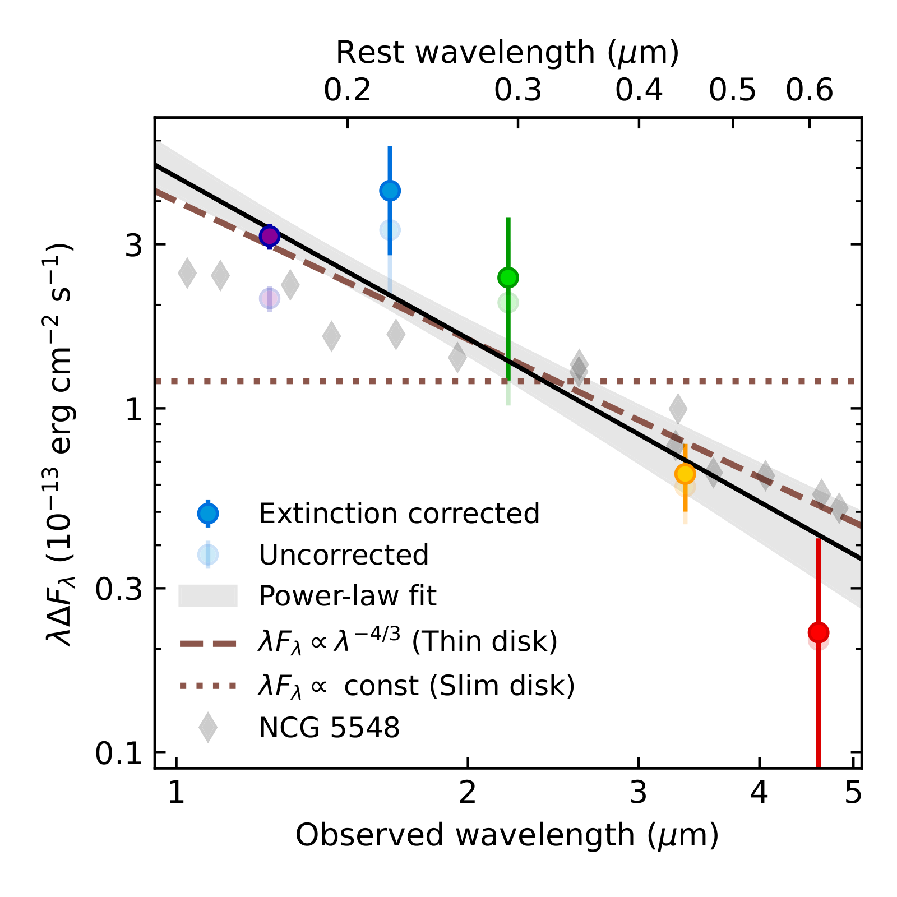
图注：{\bf The variable SED of \obj .} The difference between the maximum and minimum fluxes in each filter is plotted against wavelength. The point colors indicate the different filters, using the same color scheme as Fig. \ref{fig:lc}. The dark points are corrected for Milky Way extinction, while the faint points are the uncorrected fluxes. Error bars represent the $1\sigma$ uncertainties. The black line and grey shaded regions show the best-fit relation and its $68\%$ confidence interval. The brown dashed line shows the expected spectrum from a standard geometrically thin, optically thick accretion disk, while the brown dotted line shows that of a slim accretion disk. For comparison, we also show the variable SED of the local AGN NGC 5548 \citep{fausnaugh16}, corrected for redshift and scaled for visualization, in the grey points. The variable SED J0439+1643 is consistent with the thin disk model, indicating the the flux variation originates from variations in the disk emission.
对应解读：对应“建议重点查看的图表”第3、6、7项，以及“关键图表逐图导读”中的图4/图5变量谱与薄盘模型比较段落。
入选理由：这是论文吸积盘物理结论的核心图：直接给出各滤光片最大—最小差分通量随波长的变量SED，并叠加最佳拟合、68%置信区间、标准几何薄光学厚盘模型、slim disk模型和本地AGN NGC 5548对比。它最能支撑日报关于变量谱、薄盘模型线、置信带和早期类星体是否类似低红移AGN的解读。
来源与置信度：arxiv_source；high；arxiv_source / maintext.tex:figure[3]
Fig02
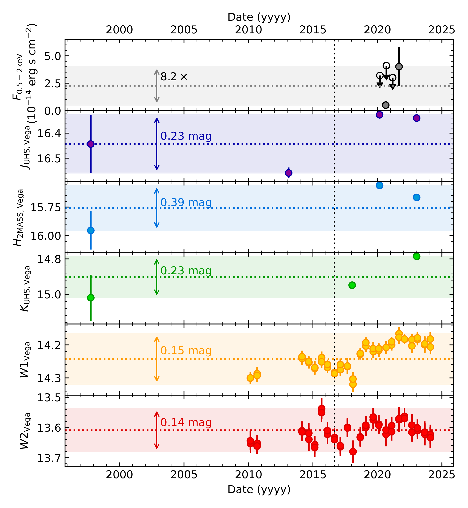
图注：{\bf Multi-wavelength light curves of \obj \ from 2000 to 2025.} Data in the 0.5-2 keV, UKIDSS $J$, $H$, $K$ and WISE W1 and W2 bands are shown from top to bottom. Error bars represent the $1\sigma$ uncertainties, and the X-ray upper limits are $1\sigma$. The shaded regions show the range spanning the maximum and minimum magnitudes observed within the duration of the light curves, while the horizontal dotted lines show the mid-point. The flux of \obj \ varied significantly in W1 by $\sim 0.1$ mag at the $10.9 \sigma$ level. The amplitude of the variation is $\sim 0.2$ mag in the bluer $JHK$ bands, and 8 times in the X-ray.
对应解读：对应“建议重点查看的图表”第1、2项，以及“关键图表逐图导读”中的图2红外光变曲线和图3 X射线变光图。
入选理由：这是发现变光的直接证据图，覆盖2000—2025年0.5–2 keV、UKIDSS J/H/K和WISE W1/W2六个波段，包含误差棒、X射线上限、最大最小变化范围和显著性说明。它同时展示五个红外滤光片的一致性、W1的10.9σ变化以及X射线约8倍变化，是验证日报多波段变光叙述不可缺少的图。
来源与置信度：arxiv_source；high；arxiv_source / maintext.tex:figure[2]
Fig06
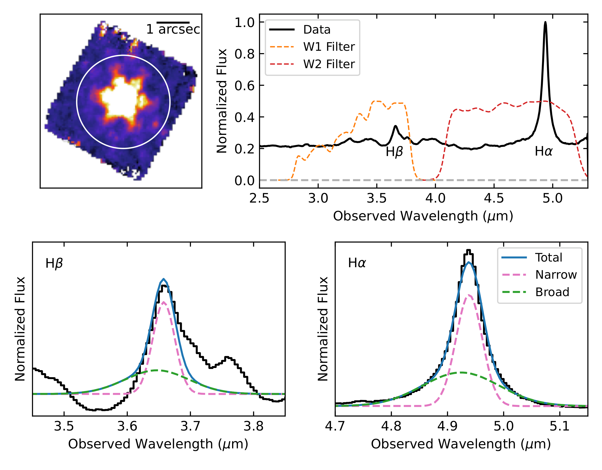
图注：{\bf JWST/NIRSpec IFU image and spectrum for \obj .} Left: NIRSpec IFU flux map of \obj \ at 4.5 $\mu$m. The white circle shows the 1.5'' radius aperture used to extract the spectrum. Middle: The extracted spectrum is shown in the black lines, while the WISE W1 and W2 filter transmission curves are shown in the orange and red dashed lines. Top right: The H$\beta$ emission line spectrum (black histogram), the best-fit model (blue curve), and the narrow (magenta dashed line) and broad (green dashed line) components of the fit. Bottom right: Same as the top right panel, but for the H$\alpha$ emission line. The emission from the broad H$\beta$ and H$\alpha$ components in the W1 and W2 filters is 1.9\% and 11.1\% of the continuum, respectively.
对应解读：对应“建议重点查看的图表”第4项，以及“关键图表逐图导读”中关于SED与滤光片覆盖、宽发射线污染的讨论。
入选理由：该图用JWST/NIRSpec IFU光谱和WISE W1/W2透过率显示滤光片覆盖的谱段，并量化Hβ、Hα宽线对W1/W2连续谱的贡献。它直接回应日报中强调的读图陷阱：变量谱是否被宽发射线污染，以及红外滤光片是否真正采样吸积盘连续谱。
来源与置信度：arxiv_source；high；arxiv_source / maintext.tex:figure[6]
Fig04
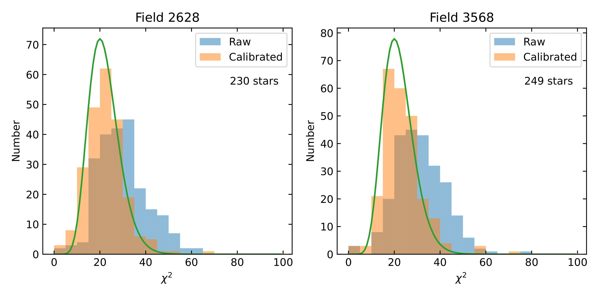
图注：{\bf The $\chi^2$ of the reference stars for \obj .} Values before and after flux calibration are shown in the blue and orange histograms, respectively. The two panels show the two WISE pointings in which \obj \ is located. The expected $\chi^2$ distribution with the corresponding degree of freedom is shown in the green line. The flux calibration successfully removes systematic photometric variations in the light curves.
对应解读：对应“建议重点查看的图表”第5项，以及模型拟合部分关于测光零点、系统误差和常亮/变光显著性检验的讨论。
入选理由：该图展示参考星在WISE校准前后的χ²分布，并与理论χ²分布比较，是评估光变是否由系统测光误差造成的关键诊断。相比普通示意图，它直接支撑日报关于系统误差控制、校准后残差是否合理以及变光显著性可靠性的分析。
来源与置信度：arxiv_source；high；arxiv_source / maintext.tex:figure[4]
Fig05
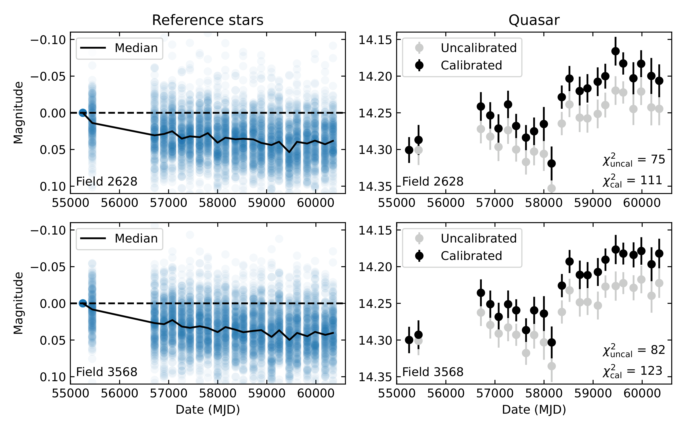
图注：{\bf Demonstration of the WISE light curve calibration process.} Left: The uncalibrated W1 light curves for the reference stars of \obj . The blue points show the light curves for the individual stars, while the black solid line shows the median light curve. The quasar light curve is calibrated by subtracting the median stellar light curve. Right: The W1 light curves for \obj \ before (grey) and after (black) calibration by subtracting the median stellar light curves. The top and bottom panels show the light curves in the two different WISE fields covering \obj . Error bars represent $1\sigma$ uncertainties.
对应解读：对应“建议重点查看的图表”第5项，以及模型拟合部分关于WISE光变校准流程和仪器系统误差的讨论。
入选理由：该图逐步展示WISE W1参考星中位光变曲线如何用于校准类星体光变，并比较校准前后的目标光变曲线。它比单纯结果图更适合说明跨历元红外测光中可能出现的共同系统趋势，以及作者如何避免把仪器/场系统误差误判为类星体变光。
来源与置信度：arxiv_source；high；arxiv_source / maintext.tex:figure[5]
Fig08
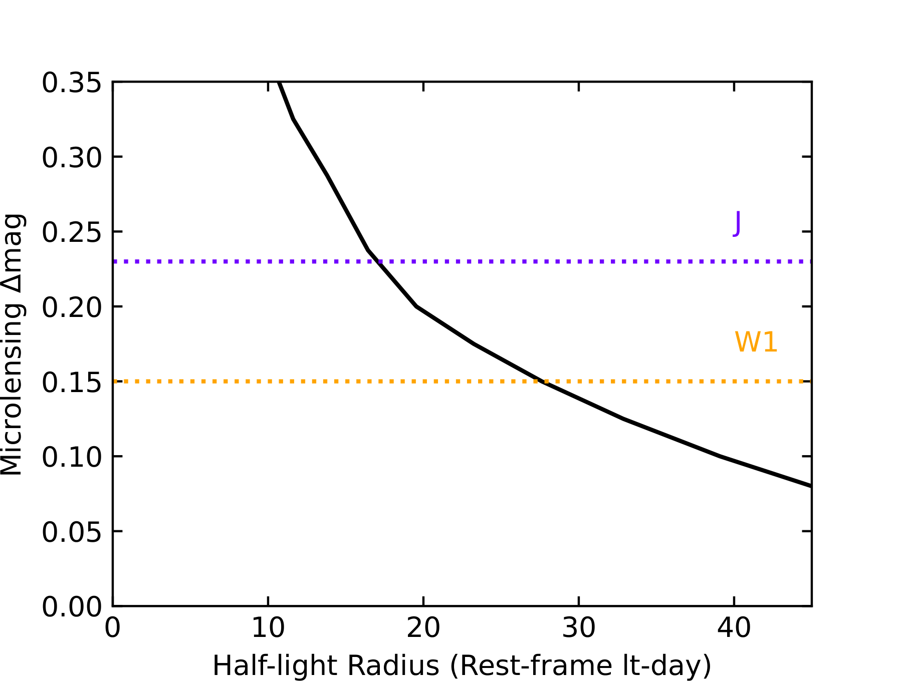
图注：{\bf The $95\%$ width of the microlensing magnification as a function of the source size.} The dotted lines show the observed variability amplitudes in $J$ and W1. The maximum disk size in the $J$ and W1 filters are 17 and 28 rest-frame light-days, respectively.
对应解读：对应详细解读中关于局限性的微透镜可能性，以及模型拟合部分关于替代解释和源大小退化的讨论。
入选理由：该图给出微透镜放大95%宽度随源大小的变化，并标出J和W1观测变光振幅，可用于判断观测变光是否可能由透镜微放大解释。虽然不是日报列出的首要图表，但它能补充关键系统误差/替代机制检验，对高红移透镜类星体的变光解释有重要约束价值。
来源与置信度：arxiv_source；high；arxiv_source / maintext.tex:figure[8]
强相关工作
这项工作与本地类星体光变研究、AGN 盘再处理模型、X 射线热冕变光和高红移 SMBH 增长研究相连。本地宇宙中，SDSS、Pan-STARRS、ZTF、OGLE 等数据已建立类星体结构函数和 DRW 经验关系；X 射线方面，AGN 的 power spectral density、X-ray/UV lag 和热冕模型也较成熟。本文的新意是把这些时间域诊断用于宇宙年龄不到 10 亿年的类星体。建议检索关键词：high redshift quasar variability, z greater than 6 quasar light curve, cosmic dawn quasar accretion disk, quasar variable spectrum thin disk, X-ray variability high-redshift quasar。
与基础理论的关系是，Shakura-Sunyaev 薄盘模型给出几何薄、光学厚盘的温度结构，而高 Eddington 比早期类星体常被认为可能偏离薄盘、进入 slim disk 或厚盘状态。因此变量谱支持薄盘结构，会与“早期黑洞必须长期超 Eddington 增长”的简单图像形成有趣张力。相反观点可能强调辐射转移、盘风、发射线污染、吸收变化或非标准盘也可产生类似颜色变化，需要更多对象和更高 cadence 数据区分。
相似工作：
- https://arxiv.org/abs/2605.00978
- https://arxiv.org/abs/2006.13452
基础理论 / 方法工作：
- https://ui.adsabs.harvard.edu/abs/1973A%26A....24..337S/abstract
- https://ui.adsabs.harvard.edu/abs/2010ApJ...721.1014M/abstract
相反观点 / 张力线索：
- https://ui.adsabs.harvard.edu/abs/1988ApJ...332..646A/abstract
9. Self-acceleration of Hardening Binaries
- 来源：arXiv / astro-ph.HE
- 链接：https://arxiv.org/abs/2605.00976v1
- 作者：Giovanni Maria Tomaselli, Thomas F. M. Spieksma
- 评分：novelty 8/10，importance 8/10，relevance 6/10，final 8.30/10
- 推荐理由：提出硬化双星在均匀各向同性背景中的确定性自加速、进动和偏心率增长，对 SMBH 双星、final-parsec 问题和 GW 源族群有潜在影响。
中文题目：硬化双星的自加速：均匀各向同性背景中的质心漂移、进动与损失锥反馈
做了什么：这篇文章重新审视了嵌在轻粒子背景中的开普勒双星如何通过三体弹弓散射而硬化。传统图像通常只关心两件事：半长轴收缩的硬化率，以及偏心率如何随硬化演化。作者用对称性分析和大量三体散射实验指出，散射背景不仅带走能量和角动量，还会对双星质心施加确定性的净力，使轨道发生近拱点进动，并在质心速度有出平面分量时旋转轨道平面。更反直觉的是，这些效应在完全均匀、各向同性的介质中也存在，因为破缺对称性的不是外部环境，而是双星自身的质量比、偏心率和轨道相位结构。对超大质量黑洞双星而言，这种自加速导致的偏移可超过布朗运动，甚至接近影响半径，从而改变恒星损失锥供给和 final-parsec 问题的边界条件。文章还指出，过去关于小质量比双星会圆化的结果可能来自数值上截断长寿命遭遇；保留这些遭遇后，所有双星都表现出偏心率增长。
为什么重要：超大质量黑洞双星的硬化长期被压缩成两个标量参数：硬化率和偏心率增长率。这篇工作说明，这个二参数描述漏掉了质心运动和轨道取向的长期演化，而这些量会反过来改变双星与恒星背景的接触几何。对于 final-parsec 问题、星系中心黑洞偏移、低频引力波源的偏心率分布，以及核星团中高速恒星产生率，这都不是小修正。
理论 / 观测 / 仪器方法价值：理论上，它把三体散射硬化从“能量—角动量账本”扩展为包含线动量、近拱点方向和轨道平面取向的矢量世俗动力学。方法上，它展示了如何用对称性约束散射平均后的漂移项，再用数值散射实验标定系数。观测上，它提示寻找并解释星系核中偏离光度中心或动力学中心的双黑洞候选体时，不能只考虑随机布朗运动或星系并合残余扰动，还要考虑双星自身与恒星背景耦合产生的确定性偏移。
为什么应该关注：如果你研究超大质量黑洞双星、PTA/LISA 引力波源、星系核动力学或恒星损失锥，这篇文章值得关注，因为它改变了一个常用的近似：双星不一定固定在星系中心慢慢硬化。它可能一边硬化一边在核区螺旋式漂移，从而遇到新的恒星、扩大有效损失锥，并改变从恒星硬化阶段过渡到引力波主导阶段的时间尺度。
展开详细解读：文章讲解、背景、理论、重点章节、图表与相关工作
文章详细讲解
科学问题：经典硬双星散射理论把背景恒星看作一个各向同性粒子浴，重点计算每次弹弓散射从双星轨道中抽走多少能量和角动量，由此得到硬化率 $H$ 和偏心率增长率 $K$。这个框架默认双星质心基本留在背景中心附近，任何质心扰动主要是有限粒子数导致的随机布朗运动。本文的问题是：如果严格保留三体散射中的线动量交换，双星是否会在没有外部密度梯度、没有旋转背景、没有非球对称势的情况下产生确定性的质心漂移？
作者怎么做：作者先从对称性出发，列出均匀各向同性介质中散射平均后允许出现的矢量和赝矢量项。由于双星轨道本身提供了偏心率矢量、角动量矢量和相对速度结构，介质虽然没有首选方向，但“双星 + 质心速度”的组合可以构造出非零的平均力矩和平均力。随后他们进行大量三体散射实验，改变质量比、偏心率、入射速度、冲量参数和遭遇持续时间，测量能量、角动量、线动量以及轨道取向的平均变化，并把这些散射结果嵌入世俗演化方程。
关键结果：他们发现介质对双星质心存在确定性净力，且伴随近拱点进动和轨道平面旋转。当质心速度相对轨道平面有出平面分量时，轨道角动量方向会被系统性扭转。自加速、进动和普通动力学摩擦共同作用，使双星质心不是简单直线逃离，而是沿向外螺旋轨迹运动。对超大质量黑洞双星，估算显示这种位移通常超过由单颗恒星随机撞击导致的布朗运动，幅度可接近黑洞影响半径。这样的位移会让双星扫过更大的恒星相空间区域，等价于扩大损失锥供给，有可能缓解 final-parsec 问题。
局限和下一步：这项工作以理想化的三体散射和均匀各向同性背景为基础，目的是证明效应本身和标定基本系数。真实星系核有密度梯度、速度各向异性、三轴势、气体、核星团质量谱、恒星演化以及广义相对论近心修正。下一步需要把这些散射系数放入自洽的 Fokker-Planck、Monte Carlo 或直接 N 体模型中，检验质心漂移在真实势阱中是否饱和、是否被中心恢复力抑制，以及它对 PTA/LISA 可观测偏心率分布和双黑洞偏移观测的定量影响。
背景知识
研究对象是硬双星，尤其是星系并合后形成的超大质量黑洞双星。当两颗黑洞的结合能超过周围恒星的典型动能时，进入所谓 hard binary 阶段。之后靠近双星的恒星会通过三体弹弓被高速抛出，带走双星的轨道能量，使半长轴继续缩小。这一过程是连接星系并合和低频引力波并合的关键中间环节。
历史上，硬化问题的核心困难是 final-parsec problem：在球对称、碰撞无关的星系核中，能与双星强相互作用的低角动量恒星很快被清空，若没有新的恒星补充，双星可能在约 parsec 尺度停滞，无法在哈勃时间内进入引力波主导阶段。后来的研究发现，非球对称势、三轴星系、气体盘、核星团弛豫以及星系并合残余扰动都可以补充损失锥。本文提出的机制更微妙：即使背景完全均匀各向同性，双星自身也会漂移，从而主动接触新的恒星。
为什么现在值得重新看？一方面，PTA 已经报告纳赫兹引力波背景证据，LISA 也将探测更低质量或更高红移的黑洞并合；这些观测要求我们理解双黑洞在恒星硬化阶段的停留时间、偏心率和空间位置。另一方面，现代数值散射实验可以长期跟踪复杂三体遭遇，避免早期计算中为了效率而截断长寿命轨道。本文特别指出，过去关于小质量比双星圆化的结论可能就是这种截断造成的。
一个常见误区是：均匀各向同性背景不会给双星任何方向性的平均推力。这只在双星本身没有内部方向结构时才成立。偏心双星有近拱点方向，非等质量双星有不对称的散射截面，质心速度又提供另一个矢量；这些内部和运动学结构足以允许非零的世俗漂移。另一个误区是把质心运动完全等同于布朗运动。本文强调的效应是散射平均后的确定性漂移，尺度和方向由双星轨道参数控制，而不是单纯的随机游走。
基础理论 / 方法脉络
核心物理图像是三体弹弓。背景恒星以速度 $v$ 和冲量参数 $b$ 接近双星，在双星时变引力场中被加速并离开。若恒星离开时获得正能量，双星轨道结合能就增加，即半长轴减小。传统硬化率 $H$ 描述 $1/a$ 随时间的增长，偏心率增长率 $K$ 描述 $e$ 随 $\ln(1/a)$ 的变化。
本文扩展的关键在于同时追踪线动量和取向变量。双星轨道不仅由半长轴 $a$ 和偏心率 $e$ 描述，还由偏心率矢量 $\mathbf{e}$、轨道角动量方向 $\hat{\mathbf{L}}$ 和质心速度 $\mathbf{V}{\rm CoM}$ 描述。散射后恒星的动量变化 $\Delta \mathbf{p}\star$ 对应双星质心的反冲 $\Delta \mathbf{P}{\rm bin}=-\Delta \mathbf{p}\star$。对所有入射方向平均后，若系统中可由 $\mathbf{e}$、$\hat{\mathbf{L}}$、$\mathbf{V}_{\rm CoM}$ 构造出允许的矢量，平均反冲就不必为零。
动力学摩擦在这里也很重要。若双星质心相对背景运动，背景粒子会形成引力尾迹，产生近似反向于 $\mathbf{V}_{\rm CoM}$ 的阻力。自加速提供“发动机”，动力学摩擦提供耗散，二者与近拱点进动和轨道平面旋转耦合后，轨迹可表现为向外螺旋而不是简单加速逃逸。真实星系中心还存在背景势的回复力，所以最终位移取决于自加速、摩擦、中心势和损失锥再填充之间的平衡。
数据分析逻辑上，三体散射实验需要覆盖足够大的相空间：入射速度分布、冲量参数、初始相位、质量比和偏心率。最危险的系统误差是对长寿命临界遭遇的处理，因为这些遭遇虽然少见，却可能主导角动量和偏心率变化的尾部贡献。本文关于“小质量比圆化是数值截断伪影”的结论正是提醒读者，散射统计的尾部分布不能随意截掉。
公式与推导
硬双星的结合能为
其中 $m_1,m_2$ 是双星质量，$a$ 是半长轴。背景恒星通过弹弓获得能量 $\Delta E_\star>0$，能量守恒给出 $\Delta E_b=-\Delta E_\star$，因此 $|E_b|$ 增大、$a$ 变小。
传统硬化率常写为
其中 $\rho$ 是背景密度，$\sigma$ 是速度弥散，$H$ 是由三体散射标定的无量纲硬化系数。这个式子来自把单次遭遇的平均能量交换乘以入射通量 $\sim n\sigma$ 和有效截面 $\sim a^2$ 后整理得到的标度关系。
偏心率演化通常参数化为
其中 $q=m_2/m_1\leq 1$，$K$ 表示每硬化一个对数间隔时偏心率的平均变化。本文强调，若长寿命遭遇被完整保留，$K$ 对各类质量比均趋向正值，即偏心率增长，而不是小质量比系统的系统圆化。
线动量守恒给出质心反冲的基本关系
其中 $M=m_1+m_2$，$m_\star$ 是单个背景粒子质量，$\Delta \mathbf{v}\star$ 是恒星散射前后的速度变化。对入射分布平均后，若 $\langle\Delta \mathbf{v}\star\rangle\neq 0$，双星就获得确定性加速度。
世俗质心运动可概括为
其中 $\mathbf{A}{\rm self}$ 是散射平均得到的自加速项，$\Gamma$ 是动力学摩擦系数，$\Phi$ 是宿主星系中心势。本文的主要可观测推论——双星相对星系中心的偏移——由对该方程随时间积分得到。
轨道取向的世俗演化可写成
其中 $\boldsymbol{\Omega}{\rm aps}$ 描述近拱点进动，$\boldsymbol{\Omega}$ 描述轨道平面旋转。它们同样由散射实验标定，并控制自加速方向如何随时间转动，从而产生螺旋式质心轨迹。
模型拟合 / 应用方法
这类工作的“拟合”核心不是对望远镜数据拟合光谱，而是把大量三体散射实验的输出压缩成世俗动力学系数。输入参数通常包括质量比 $q$、偏心率 $e$、硬度 $a\sigma^2/GM$、质心速度相对 $\sigma$ 的大小和方向、入射冲量参数上限、背景速度分布等。输出量包括 $\Delta E$、$\Delta L$、$\Delta \mathbf{P}$、近拱点转角和轨道面倾角变化。统计上需要对入射相位、方向和速度分布做 Monte Carlo 平均，并估计均值、方差以及尾部分布贡献。
似然或后验框架可用于把散射系数拟合成连续函数，例如 $H(e,q)$、$K(e,q)$、$\mathbf{A}_{\rm self}(e,q,V/\sigma)$ 和进动频率。误差项不一定高斯，因为长寿命遭遇会造成重尾分布；如果用简单均值和标准误，必须检查截断时间、冲量参数上限和样本量对结果的影响。本文特别强调长寿命遭遇截断会改变偏心率演化符号，因此残差诊断应重点看高 $\Delta L$ 或长停留时间事件是否被系统漏掉。
实际应用到星系核时，还要把这些系数嵌入背景模型。参数退化包括：高密度 $\rho$ 与高硬化系数 $H$ 都会缩短硬化时间；强中心势与强动力学摩擦都能限制质心偏移；双星偏心率增长与损失锥供给增强都能加快进入引力波阶段。观测上若寻找偏移双 AGN 或偏移核活动，需要与星系并合残余、反冲黑洞、尘埃遮蔽导致的光心偏差以及测量系统误差区分。
重点章节 / 结果段落怎么读
-
引言与标准硬化图像：读者应先确认作者要挑战的近似是什么，即传统模型只保留 $H$ 和 $K$，并默认质心运动不是世俗变量。这里也会交代 final-parsec 问题和超大质量黑洞双星的应用背景。
-
对称性分析：这是全文概念核心。建议重点看在均匀各向同性背景中，哪些由 $\mathbf{e}$、$\hat{\mathbf{L}}$ 和 $\mathbf{V}_{\rm CoM}$ 构成的项被允许，哪些因宇称、时间反演或旋转对称性被禁止。读懂这一节，才能理解为什么“均匀背景中有净推力”并不违反对称性。
-
三体散射实验设置：应检查初始条件采样、入射速度分布、冲量参数范围、终止条件和长寿命遭遇处理。尤其要看作者如何定义一次遭遇结束，以及如何验证统计量对终止时间不敏感。
-
散射系数与世俗演化结果：这里是定量结论所在。建议关注自加速幅度、进动率、轨道面旋转率随 $q$、$e$、$V/\sigma$ 的变化，以及这些系数如何进入质心运动方程。
-
天体物理应用与讨论：重点读超大质量黑洞双星的尺度估算，包括位移与影响半径、布朗运动幅度、损失锥增大和引力波源族群的关系。最后还应看作者如何重新解释小质量比双星圆化的历史结果。
建议重点查看的图表
-
散射几何和允许矢量项示意图：看图中是否清楚标出偏心率矢量、角动量方向、质心速度和平均力方向；关键是理解净力来自双星内部不对称而非外部密度梯度。
-
硬化率与偏心率增长率随 $q,e$ 的图：重点看 $K$ 的符号是否在全参数区为正，以及与早期文献中小质量比圆化结果的差别。
-
自加速系数随偏心率、质量比和质心速度方向的图：应检查误差条、样本数和是否存在对称性要求的零点。
-
长寿命遭遇截断诊断图：看终止时间或最大积分步数改变后，$K$、线动量交换和尾部分布是否收敛。这是判断“圆化为数值伪影”的关键。
-
质心轨迹图：看轨迹是否由自加速、动力学摩擦和进动共同产生向外螺旋；注意坐标单位是否为半长轴、影响半径或核心半径。
-
与布朗运动和影响半径的比较图：重点看自加速位移相对 $r_{\rm infl}$ 和随机游走幅度的比例，以及对黑洞质量、背景密度和速度弥散的依赖。
关键图表逐图导读
图 1：通常应是问题几何或对称性示意。横纵轴可能不是数据轴，而是展示轨道平面、偏心率矢量 $\mathbf{e}$、角动量 $\hat{\mathbf{L}}$ 和质心速度 $\mathbf{V}_{\rm CoM}$。读图时不要把箭头理解成单次遭遇的瞬时力；它们代表对许多入射方向平均后的允许漂移方向。
图 2：若展示散射实验得到的 $H$ 和 $K$，横轴多半是偏心率或质量比，纵轴是无量纲硬化/偏心率增长系数。数据点给出 Monte Carlo 平均，阴影或误差条表示采样误差。关键看 $K=0$ 线附近的符号；若所有点在正侧，说明偏心率增长是普遍结论。陷阱是忽略不同终止条件或冲量参数上限导致的系统差异。
图 3：若展示自加速或质心反冲系数，横轴可能是 $e$、$q$ 或 $V_{\rm CoM}/\sigma$，纵轴是平均加速度的某个分量。读者应检查在对称性要求下应为零的分量是否确实与零一致；这比单个非零点更能说明数值实验可靠。
图 4：若展示近拱点进动和轨道面旋转，坐标轴应对应进动频率或每次遭遇平均角度变化。重点看当质心速度有出平面分量时，倾角变化是否出现系统趋势。读图陷阱是把散射导致的随机取向扩散误认为确定性旋转；需要看均值与方差的分离。
图 5：若展示世俗积分的质心轨迹，横纵轴可能是星系中心坐标，以影响半径归一化。模型线之间的差别应对应是否包含自加速、动力学摩擦和进动。核心结论是三者耦合后产生向外螺旋，而不是单调径向漂移。
图 6：若展示天体物理尺度估算，横轴可能是黑洞总质量、质量比或红移，纵轴是最大偏移、硬化时间或损失锥增强因子。读者要看置信区间是否主要来自背景密度/速度弥散不确定性，并警惕把理想均匀背景结果直接外推到强非球对称星系核。
论文原图 / 可嵌入图片
Fig08
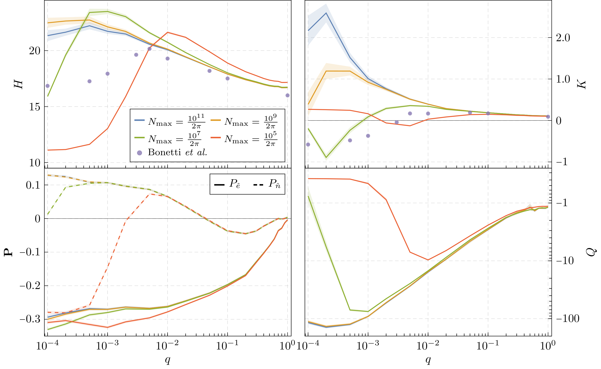
图注：Evolution parameters as functions of mass ratio $q$ for $\vec V = 0$ at fixed $e=0.6$ and $a/a_h=0.1$, for several choices of the integration-time cutoff $N\ped{max}$. The purple markers show the results digitized from Fig.~1 of Ref.~\cite{Bonetti:2020iwk}. For sufficiently small cutoffs, $K$ becomes negative at small $q$; increasing $N\ped{max}$ progressively restores the converged behavior with $K>0$.
对应解读：建议重点查看的图表第4项“长寿命遭遇截断诊断图”；关键图表逐图导读中关于小质量比圆化是否为数值伪影的讨论；模型拟合段落中关于截断时间影响尾部分布与K符号的诊断。
入选理由：该图直接比较不同积分时间截断N_max下K随质量比q的变化，并包含早期文献Bonetti等结果的数字化点。它明确显示小q处负K会在截断过短时出现，而延长积分后恢复K>0，是支撑“圆化为数值伪影、所有双星偏心率增长”这一核心结论的最关键证据。
来源与置信度：arxiv_source；high；arxiv_source / three-body.tex:figure[8]
Fig06
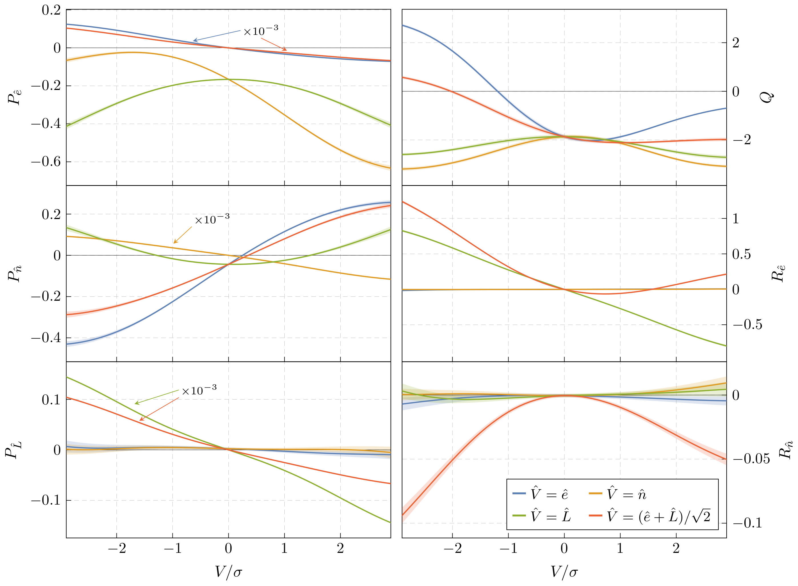
图注：Components of the acceleration parameter $\vec P=\vec P\sped{3bs}+\vec P\sped{df}$ (\emph{left panels}), precession parameter $Q$ and components of the rotation parameter $\vec R$ (\emph{right panels}) as a function of $V=\vec V\cdot\hat V$ for $a/a_h=0.1$, $q=0.2$, $e=0.6$, and different choices for the CoM velocity direction $\hat V$. We assume $b\ped{max}=GM/\sigma^2$ in the evaluation of $\vec P\sped{df}$. This term is generally much larger than $\vec P\sped{3bs}$, and for this reason we rescale the affected components of $\vec P$ by a factor of $10^{-3}$, as indicated in each left panel.
对应解读：建议重点查看的图表第3项“自加速系数随偏心率、质量比和质心速度方向的图”；关键图表逐图导读中关于自加速、进动和轨道面旋转参数的说明；详细解读中“质心速度有出平面分量时轨道角动量方向会被系统性扭转”。
入选理由：该图同时给出加速度参数P、进动参数Q和旋转参数R随质心速度大小及方向的变化，正好覆盖本文新增的确定性质心力、近拱点进动和轨道面旋转三类效应。它比单独展示H、K的图更能体现本文相对经典硬化理论的新增物理。
来源与置信度：arxiv_source；high；arxiv_source / three-body.tex:figure[6]
Fig10
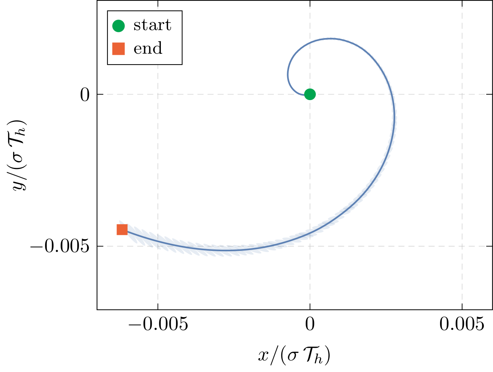
图注：Trajectory of the binary's CoM, for the same parameters and initial conditions as in Fig.~\ref{fig:evolution}. The semi-transparent ellipses denote the $1\sigma$ uncertainty at several points along the trajectory.
对应解读：建议重点查看的图表第5项“质心轨迹图”；关键图表逐图导读中关于自加速、动力学摩擦和进动共同产生向外螺旋的说明；详细解读中“质心沿向外螺旋轨迹运动”。
入选理由：该图直接展示双星质心轨迹，并带有1σ不确定性椭圆，是把散射实验系数嵌入世俗演化后最直观的结果图。它支撑日报中关于质心不是简单随机布朗运动、而是出现确定性螺旋漂移的核心叙述。
来源与置信度：arxiv_source；high；arxiv_source / three-body.tex:figure[10]
Fig03
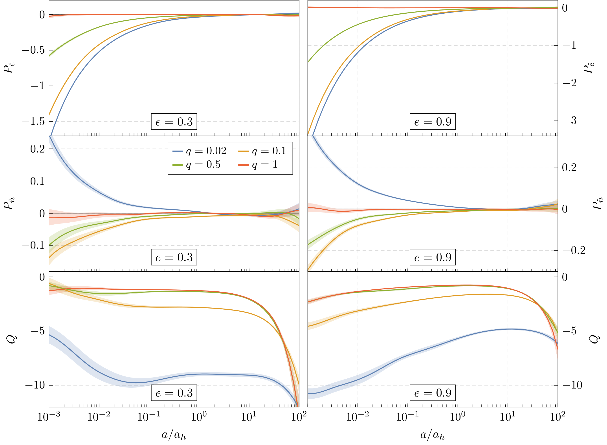
图注：In-plane components of the acceleration parameter $\vec P$ and the precession parameter $Q$ as a function of $a/a_h$ for selected values of $q$ and $e$, and vanishing CoM velocity ($\vec V=0$). The acceleration and precession parameters $\vec P$ and $Q$ are introduced in this work for the first time.
对应解读：建议重点查看的图表第3项“自加速系数”；关键图表逐图导读中关于对称性允许的平均加速度和近拱点进动；详细解读中“介质对双星质心存在确定性净力，且伴随近拱点进动”。
入选理由：该图在V=0的均匀各向同性背景下给出平面内加速度参数P和进动参数Q，直接证明即使没有外部密度梯度或质心运动，也可由双星自身不对称产生确定性漂移和进动。这是理解“self-acceleration”概念的基础图。
来源与置信度：arxiv_source；high；arxiv_source / three-body.tex:figure[3]
Fig02
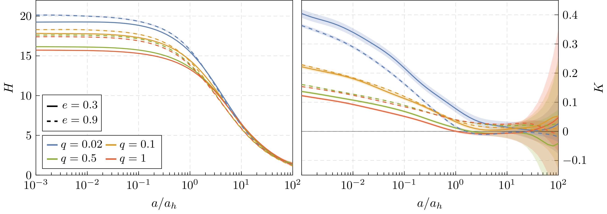
图注：Hardening rate $H$ and eccentricity growth rate $K$ as a function of $a/a_h$ for a number of selected values of $q$ and $e$, and vanishing CoM velocity ($\vec V=0$). The semi-transparent band around each line indicates the $1\sigma$ uncertainty. These parameters have been previously computed in the literature, e.g., in \cite{Quinlan:1996vp,Sesana:2006xw,Bonetti:2020iwk}. The agreement with these classic results provides a validation of our code.
对应解读：建议重点查看的图表第2项“硬化率与偏心率增长率随q,e的图”；关键图表逐图导读中关于H和K的Monte Carlo平均、1σ不确定性及与经典文献比较。
入选理由：该图展示经典硬化率H和偏心率增长率K随硬度a/a_h的变化，并用1σ带说明数值不确定性。它验证散射代码能够复现Quinlan、Sesana等经典结果，为后续新增P、Q、R参数和K符号讨论提供基准。
来源与置信度：arxiv_source；high；arxiv_source / three-body.tex:figure[2]
Fig07
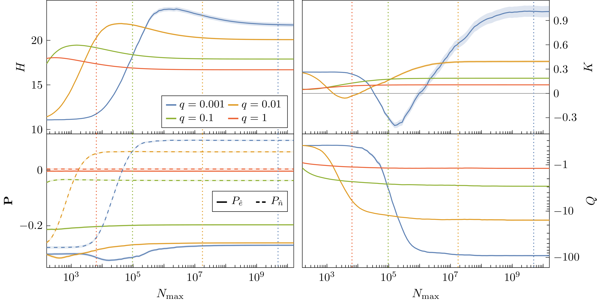
图注：Evolution parameters as a function of the integration-time cutoff, quantified in units of binary periods as $N\ped{max}=T\ped{max}/T$, for a hard binary with $a/a_h=0.1$, $e=0.6$, and $\vec V = 0$. Vertical dashed lines mark the hardening timescale $N\ped{hard}=T\ped{hard}/T$, given in~\eqref{eqn:Nhard}, for each mass ratio.
对应解读：建议重点查看的图表第4项“长寿命遭遇截断诊断图”；模型拟合段落中关于终止时间、最大积分步数和长寿命遭遇尾部分布对均值的影响。
入选理由：该图直接以N_max=T_max/T为横轴展示演化参数对积分时间截断的依赖，并标出硬化时间尺度N_hard。它补充Fig08，说明不仅K的质量比趋势会受截断影响，多个世俗演化系数也需要检查对长寿命遭遇的收敛性。
来源与置信度：arxiv_source；high；arxiv_source / three-body.tex:figure[7]
强相关工作
这篇工作直接接在硬双星三体散射传统之后。可检索关键词包括“hard binary scattering Quinlan 1996”、“supermassive black hole binary hardening”、“loss cone final parsec problem”、“eccentricity growth massive black hole binaries”。早期工作给出了硬化率和偏心率增长率的标准数值标定；本文不是否定这些标量结果，而是指出还存在同阶重要的矢量世俗项。
与 final-parsec 问题相关的文献通常强调外部补给机制，例如两体弛豫、三轴星系中的 centrophilic orbits、气体盘相互作用或连续星系并合。本文提供的是一种内部驱动的补给方式：双星移动到新的相空间区域。相反或需要张力检验的方向包括：在自洽星系势中中心回复力是否会压制偏移；在高粒子数极限中确定性漂移是否仍强于随机项；以及直接 N 体模拟是否能在有限粒子噪声下分辨该效应。检索关键词可用“Brownian motion SMBH binary”、“wandering massive black hole binary”、“triaxial loss cone refilling”。
相似工作：
- https://arxiv.org/abs/2605.00976
- https://ui.adsabs.harvard.edu/abs/1996NewA....1...35Q/abstract
基础理论 / 方法工作：
- https://ui.adsabs.harvard.edu/abs/1983AJ.....88.1269H/abstract
- https://ui.adsabs.harvard.edu/abs/1980Natur.287..307B/abstract
- https://ui.adsabs.harvard.edu/abs/2003ApJ...590..691M/abstract
相反观点 / 张力线索：
- https://ui.adsabs.harvard.edu/abs/2006MNRAS.372..869B/abstract
- https://ui.adsabs.harvard.edu/abs/2013CQGra..30x4005C/abstract
10. Formation and Redshift Evolution of Dark Matter Spikes
- 来源：arXiv / astro-ph.HE
- 链接：https://arxiv.org/abs/2605.01023v1
- 作者：Gonzalo Herrera, Abdelaziz Hussein, Lina Necib, Elliot Y. Davies, Xuejian Shen
- 评分：novelty 7/10，importance 7/10，relevance 7/10，final 8.00/10
- 推荐理由：给出暗物质尖峰形成和恒星加热红移演化的半解析框架，对银河核间接探测 J 因子和信号解释有实质影响。
中文题目：暗物质尖峰的形成与红移演化：有限种子黑洞、恒星加热和可探测信号的再标定
做了什么：这篇文章研究黑洞周围暗物质密度尖峰如何形成、又如何在宇宙时间中被恒星动力学加热削弱。经典 Gondolo–Silk 图像认为，黑洞在暗物质晕中心缓慢绝热增长，会把原本较平缓的暗物质 cusp 压缩成很陡的 spike，从而显著增强湮灭、衰变或散射信号。作者建立半解析框架，先把尖峰形成推广到有限种子黑洞质量、恒星 cusp 和非圆轨道，再用耦合的恒星—暗物质 Fokker-Planck 方程追踪后续演化，并用宇宙恒星形成率调制恒星加热强度。主要结论是：即使从保守的经典尖峰出发，恒星引力加热也会在数 Gyr 内把内区暗物质斜率推向 $\gamma_\chi\simeq1.5$，例如 $z\simeq10$ 形成的尖峰到 $z\lesssim2$ 已显著变浅；密度比经典预言低 2–4 个数量级，但仍高于 NFW 类 cusp。文章给出随红移变化的柱密度和 $J$-factor 基准，提醒所有利用星系核间接探测暗物质的解释都必须纳入这种演化。
为什么重要：黑洞暗物质尖峰常被用来放大暗物质湮灭或散射信号，但许多估算仍沿用理想化的零质量种子、纯暗物质环境和静态尖峰假设。本文说明这些假设会系统性高估今天星系核的信号强度。它把尖峰问题从“形成瞬间的绝热压缩”推进到“从高红移到今天的动力学演化”，因此对银河系中心、矮星系核、AGN 周围暗物质约束和未来高能/多信使探测都有直接影响。
理论 / 观测 / 仪器方法价值：理论价值在于把黑洞增长导致的绝热收缩、有限种子质量、恒星 cusp、轨道各向异性/非圆轨道以及两组分 Fokker-Planck 加热放进同一个半解析框架。方法价值在于给出红移依赖的 $J$-factor、柱密度和暗物质分布基准，可直接服务于湮灭、衰变、散射或紧致天体吸积相关信号建模。观测价值在于为星系核暗物质信号解释提供更现实的先验，降低把尖峰信号误解为粒子物理参数增强的风险。
为什么应该关注：如果你用星系中心伽马射线、X 射线、射电、宇宙线或紧致天体动力学来约束暗物质，这篇文章会改变你放进模型里的中心密度。经典尖峰可能给出过于乐观的信号预期，而完全忽略尖峰又可能过于悲观。本文给出一个中间但动力学上更可信的图像：尖峰会被恒星加热显著磨平，但不会简单退回 NFW。
展开详细解读：文章讲解、背景、理论、重点章节、图表与相关工作
文章详细讲解
科学问题：暗物质尖峰是指黑洞缓慢增长时，通过绝热不变量守恒把周围暗物质轨道向内压缩，形成比原始 halo cusp 更陡的中心密度剖面。经典结果预言如果初始 $\rho\propto r^{-\gamma}$，尖峰斜率可变为 $\gamma_{\rm sp}=(9-2\gamma)/(4-\gamma)$，例如 NFW 的 $\gamma=1$ 会得到 $\gamma_{\rm sp}=7/3$。这么陡的密度会极大增强 $\rho^2$ 加权的湮灭信号。但真实黑洞并非从零质量开始，星系核也不是纯暗物质系统，恒星会通过引力散射不断加热暗物质，降低中心密度。本文要回答的是：考虑这些现实因素后，尖峰在不同红移还剩多强？
作者怎么做：第一步，作者建立更一般的绝热形成模型，允许黑洞有有限种子质量，周围已有恒星 cusp，并允许暗物质轨道非圆。这样可以避免经典推导中“零质量黑洞从无到有、纯暗物质背景、圆轨道近似”的强假设。第二步，他们求解暗物质和恒星相空间分布的耦合 Fokker-Planck 方程，描述恒星—暗物质之间的引力能量交换。恒星形成和核区恒星供给的历史通过宇宙恒星形成率调制加热率，使尖峰演化具有红移依赖。第三步，他们对天体物理不确定性做边缘化，从保守的 Gondolo-Silk 尖峰初始条件出发，计算柱密度、$J$-factor 和不同红移的基准曲线。
关键结果：恒星引力加热会在数 Gyr 内显著削弱尖峰，并把内区暗物质斜率推向 $\gamma_\chi\simeq1.5$。对于 $z\simeq10$ 形成的尖峰，到 $z\lesssim2$ 时内区已接近这种较浅斜率。相对经典静态尖峰，密度和相关信号可降低 2–4 个数量级；但它仍高于普通 NFW cusp，因此不能简单说“恒星会完全摧毁尖峰”。文章给出随红移变化的柱密度和 $J$-factor 标定，分别对应散射/衰变类 $\rho$ 加权信号和湮灭类 $\rho^2$ 加权信号。
局限和下一步：半解析 Fokker-Planck 模型不可避免要简化真实星系核。黑洞并合、非球对称势、气体反馈、AGN 活动、核星团离散形成史、自相互作用暗物质、暗物质湮灭自身造成的核心化，都可能改变尖峰演化。恒星形成率调制加热率是一种有用的宇宙平均近似，但个体星系中心的历史差异很大。下一步需要与高分辨率星系形成模拟、核星团动力学模型和具体观测目标结合，给出对象级别的先验，而不是只给总体基准。
背景知识
暗物质尖峰研究的出发点是黑洞增长的绝热收缩。如果中心黑洞质量增长时间长于暗物质轨道周期，暗物质粒子的作用量近似守恒，轨道会收缩，中心密度上升。Gondolo 和 Silk 在 1999 年提出的经典尖峰模型显示，银河系中心黑洞若在原始暗物质 cusp 中绝热增长，可能产生极强的湮灭信号。这一结果长期影响了星系核暗物质间接探测的乐观预期。
但过去二十多年也不断有人指出尖峰很脆弱。黑洞并合可以通过三体相互作用挖空中心暗物质；恒星 cusp 会通过两体弛豫把暗物质“加热”到更浅剖面；暗物质湮灭本身会给密度设置上限；非绝热黑洞增长或偏离晕中心增长会弱化尖峰。因此，今天观测到的星系核未必保留经典尖峰。本文的意义在于不是只列出破坏机制，而是把其中最普遍、几乎所有有核星团环境都会发生的恒星引力加热做成红移演化框架。
现在值得重新看有两个原因。第一，间接探测数据越来越丰富，从费米伽马射线、切伦科夫望远镜、X 射线到射电同步辐射，许多约束都对中心密度非常敏感。第二，JWST 和大规模巡天正在推动高红移黑洞种子、早期星系核和核星团形成史研究；尖峰若在高红移形成，其后经历的恒星加热时间与今天目标不同，必须使用红移依赖模型。
常见误区之一是把尖峰当成静态幂律，一旦形成就保持到今天。实际在有恒星的星系核中，暗物质是轻的碰撞无关背景，但会被恒星的引力散射缓慢扩散到更高能量轨道。另一个误区是认为恒星加热会把尖峰完全抹掉到 NFW。本文结果更细：内区斜率趋向约 1.5，比经典 spike 浅很多，但仍明显比 NFW cusp 的 $\gamma\sim1$ 更陡。
基础理论 / 方法脉络
核心物理图像有两步：形成和演化。形成阶段依赖绝热收缩。若黑洞质量缓慢增加，暗物质粒子的径向作用量和角动量近似守恒；为了适应更深的中心势阱，粒子轨道半径减小，密度升高。经典圆轨道近似给出从初始 cusp 斜率 $\gamma$ 到 spike 斜率 $\gamma_{\rm sp}$ 的解析关系，但真实轨道有偏心率，且初始黑洞种子可能已占有非零质量。
演化阶段由恒星引力加热控制。恒星质量远大于暗物质粒子，且在核区数密度高。暗物质粒子在许多次远距离引力散射后能量扩散，逐渐被推到较大轨道，中心密度降低。这个过程可用相空间分布函数 $f(E,t)$ 的 Fokker-Planck 方程描述，其中扩散系数由恒星分布、恒星质量、库仑对数和局部动力学时间决定。由于恒星也会演化，作者使用耦合的恒星—暗物质方程，而不是把恒星背景完全固定。
可观测量主要分两类。湮灭信号正比于 $J=\int \rho_\chi^2 dl d\Omega$，对最高密度内区极端敏感，因此经典尖峰与加热后尖峰可差几个数量级。衰变或散射柱密度类信号更接近 $D=\int \rho_\chi dl d\Omega$，对内区斜率较不敏感但仍受尖峰影响。红移依赖进入两处：一是尖峰形成时间决定可被加热多久，二是恒星形成史决定核区恒星加热强弱。
常见退化和系统误差包括：黑洞质量越大、影响半径越大，可形成更宽的尖峰；但恒星密度越高，加热越强，尖峰越快变浅。初始 halo 浓度、种子黑洞质量、黑洞增长时间、恒星 cusp 斜率、轨道各向异性和湮灭截面上限都会影响最终 $J$-factor。若只用一个静态幂律拟合信号，很容易把天体物理密度不确定性误判为粒子物理参数变化。
公式与推导
若初始暗物质 cusp 为
其中 $\rho_0,r_0$ 是归一化尺度，$\gamma$ 是初始内斜率。黑洞绝热增长后，经典尖峰近似给出
这里 $r_{\rm sp}$ 是尖峰外半径，通常与黑洞影响半径成比例；对 NFW 型 $\gamma=1$，得到 $\gamma_{\rm sp}=7/3$。
影响半径可定义为
其中 $M_\bullet$ 是黑洞质量，$\sigma_\star$ 是核区恒星速度弥散。尖峰主要位于 $r\lesssim r_h$ 的区域，因此黑洞质量和宿主星系动力学直接决定尖峰的空间尺度。
相空间演化可用能量空间 Fokker-Planck 方程概括为
其中 $f_\chi(E,t)$ 是暗物质分布函数，$E$ 是单位质量结合能，$F_E$ 是能量通量，$D_{EE}$ 和 $D_E$ 分别表示由恒星散射导致的能量扩散和漂移系数。恒星越密、质量越大，扩散系数越大，尖峰越快被加热。
加热时间尺度可粗略写成两体弛豫时间
其中 $m_\star$ 是典型恒星质量，$\rho_\star$ 是恒星密度，$\ln\Lambda$ 是库仑对数。若尖峰形成后的宇宙时间 $\Delta t\gtrsim t_r$，内区暗物质分布会显著偏离经典绝热尖峰。
间接探测湮灭的关键量是
而衰变或某些散射柱密度信号更接近
本文的红移依赖基准本质上就是把 Fokker-Planck 演化后的 $
ho_\chi(r,z)$ 代入这些积分，比较经典静态尖峰、加热后尖峰和 NFW cusp 的差别。
模型拟合 / 应用方法
本文这类工作常见的参数估计对象是暗物质密度剖面和由其派生的 $J$-factor、$D$-factor 或柱密度。模型参数包括初始 halo 斜率和归一化、黑洞种子质量、黑洞增长历史、尖峰形成红移、恒星 cusp 斜率和归一化、恒星质量函数、加热效率、轨道各向异性以及可能的暗物质湮灭平台密度。文章采用半解析演化并对天体物理不确定性边缘化，输出红移依赖基准，而不是针对某一个目标做单一最佳拟合。
若把该框架用于观测数据，似然通常连接到通量或表面亮度。例如湮灭伽马射线通量满足 $\Phi\propto \langle\sigma v\rangle J/m_\chi^2$，因此 $J$-factor 与粒子物理参数 $\langle\sigma v\rangle,m_\chi$ 强退化。衰变信号 $\Phi\propto D/(m_\chi\tau)$，对中心尖峰不如湮灭敏感。拟合时残差应按角距离检查：若模型只在最内角分辨元过亮，问题可能来自尖峰斜率或点扩散函数；若大尺度也偏离，则可能是背景建模或 halo 归一化问题。
系统误差方面，最大的不是数值积分误差，而是星系核历史。恒星 cusp 是否存在、是否经历核心挖空、黑洞是否有并合、AGN 反馈是否改变中心质量分布，都会改变加热时间。另一个退化是初始尖峰强度与加热时间：早形成的强尖峰可能被长期加热到类似晚形成弱尖峰的状态。实际应用中应把本文给出的红移基准作为先验族，而不是固定模板；并应同时报告经典尖峰、加热尖峰和无尖峰 NFW 三种情形下的粒子物理约束。
重点章节 / 结果段落怎么读
-
引言与经典尖峰问题：读者应先抓住作者批评的三个经典假设：零质量种子、纯暗物质环境、静态长期保留。这里也会说明为什么尖峰对间接探测 $J$-factor 有巨大影响。
-
绝热形成模型推广：重点看有限种子质量、恒星 cusp 和非圆轨道如何进入映射。建议关注作者是否保持作用量守恒、如何定义尖峰半径，以及与 Gondolo-Silk 结果在极限情况下是否一致。
-
耦合 Fokker-Planck 演化：这是方法核心。应检查暗物质和恒星分布函数的变量选择、扩散系数、边界条件、加热率如何与宇宙恒星形成率相连，以及是否考虑黑洞吞噬或内边界截断。
-
红移演化结果：重点读不同形成红移下 $\rho_\chi(r,z)$ 的变化，尤其是内斜率如何趋向 $\gamma_\chi\simeq1.5$。要区分密度剖面本身的变化和投影后 $J$-factor 的变化。
-
探测基准和不确定性边缘化：看作者给出的柱密度、$J$-factor 区间和与 NFW/经典尖峰的比较。这里最适合直接提取到观测建模中。
-
讨论与适用范围：应关注哪些破坏机制未纳入或只近似纳入，例如黑洞并合、非球对称势、暗物质自相互作用、湮灭平台和个体星系形成史差异。
建议重点查看的图表
-
绝热形成前后密度剖面图：看初始 cusp、经典尖峰、有限种子/恒星修正尖峰之间的斜率和归一化差别。
-
Fokker-Planck 红移演化图：重点看同一初始尖峰从高红移到低红移时内区斜率是否向 $\gamma_\chi\simeq1.5$ 收敛。
-
不同形成红移或加热历史的比较图：检查 $z\simeq10$ 形成的尖峰到 $z\lesssim2$ 的衰减幅度，以及晚形成尖峰是否保留更陡结构。
-
$J$-factor 随红移或黑洞质量变化图：看经典尖峰与演化尖峰之间的 2–4 个数量级差异是否稳定，误差带由哪些天体物理参数主导。
-
柱密度或 $D$-factor 图：与 $J$-factor 对比，确认 $\rho$ 加权信号对尖峰削弱的敏感性较低但并非无关。
-
参数边缘化/稳健性图或表：重点看恒星 cusp 斜率、加热效率、种子质量、初始 halo 斜率变化后，内斜率 $1.5$ 和信号降低 2–4 dex 是否仍成立。
-
与 NFW 和经典 Gondolo-Silk 的比值图：这是最直观的应用图，读者应看在哪些半径和红移范围内演化尖峰仍显著高于 NFW。
关键图表逐图导读
图 1：通常应展示尖峰形成模型。横轴为半径，常以 $r/r_h$ 或物理 pc 表示；纵轴为暗物质密度或 $r^\gamma\rho$ 形式。数据/模型线可能包括初始 cusp、经典 Gondolo-Silk 尖峰、有限种子修正尖峰和含恒星 cusp 的结果。主要结论是现实形成条件会改变归一化和内区结构。读图陷阱是只比较最内半径的密度，而忽略尖峰外半径也会影响积分信号。
图 2：若为红移演化密度剖面，横轴是半径，纵轴是 $\rho_\chi$，不同颜色代表不同红移。关键看曲线随时间在内区变平，斜率接近 $-1.5$。需要注意内边界截断：最靠近黑洞的半径可能受捕获半径、湮灭平台或数值边界影响，不应过度解读。
图 3：若展示斜率 $\gamma_\chi$ 随时间或红移变化，横轴可能是宇宙时间或 $z$，纵轴是局部幂律斜率。模型线若从 $7/3$ 附近下降到 $1.5$，说明恒星加热主导演化。误差带应理解为天体物理边缘化范围，不是单纯数值误差。
图 4：若展示 $J$-factor，横轴可为红移、黑洞质量或积分角半径，纵轴通常为 $J$ 或相对经典尖峰的比值。读图重点是演化尖峰比经典低 2–4 dex，但比 NFW 高。陷阱是忽略角分辨率：积分孔径越大，内尖峰对总 $J$ 的相对贡献可能越被稀释。
图 5：若展示柱密度或 $D$-factor，坐标类似 $J$-factor 图，但由于只含 $\rho$ 一次方，经典与演化模型差距应较小。若差距仍很大，说明尖峰不仅影响极内区，也改变了相当宽半径范围的质量柱。
图 6：若为参数稳健性图，横轴可能是恒星 cusp 斜率、种子质量或形成红移，纵轴是最终 $J$-factor、内斜率或密度比。读者应看趋势是否单调，以及是否存在某些参数组合让经典尖峰基本保留；这些区域往往对应很晚形成或很弱恒星加热，未必适用于普通星系核。
论文原图 / 可嵌入图片
Fig08
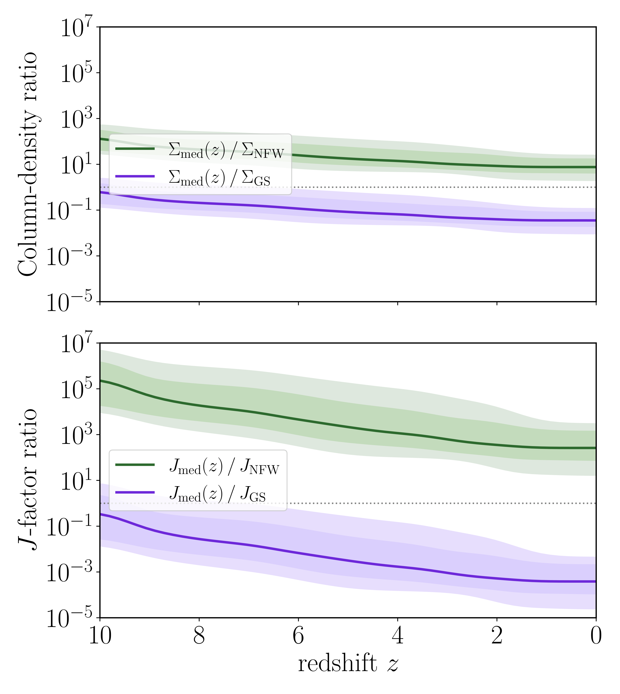
图注：Redshift evolution of the central dark-matter column density and $J$-factor ratios, integrated within $r_{\max} = 0.1\,\mathrm{pc}$. In each panel, the green curve shows the ratio of the Monte Carlo cosmic median to the NFW expectation, $\Sigma_{\rm med}(z)/\Sigma_{\rm NFW}$ and $J_{\rm med}(z)/J_{\rm NFW}$ (above unity), while the purple curve shows the ratio of the cosmic median to the canonical Gondolo-Silk prediction, $\Sigma_{\rm med}(z)/\Sigma_{\rm GS}$ and $J_{\rm med}(z)/J_{\rm GS}$ (below unity). The evolved spike remains denser than an uncontracted NFW cusp, but falling short of the canonical adiabatic spike. Shaded regions indicate the 68\% (dark band) and 95\% (light band) containment intervals obtained from marginalization over the formation and. The redshift axis runs from high redshift (left) to the present epoch (right).
对应解读：对应“建议重点查看的图表”第4、5、7项，以及关键图表导读中关于 J-factor、柱密度/D-factor、相对 NFW 与经典 Gondolo-Silk 比值的段落。
入选理由：这是最直接连接本文应用结论的图：同时给出柱密度和 J-factor 随红移的比值，并明确比较演化尖峰相对 NFW 仍增强、相对经典 Gondolo-Silk 明显降低。它能支撑日报中“2–4 个数量级削弱但仍高于 NFW”的核心判断，比单纯密度剖面图更贴近间接探测和衰变/散射信号解释。
来源与置信度：arxiv_source；high；arxiv_source / main.tex:figure[8]
Fig04
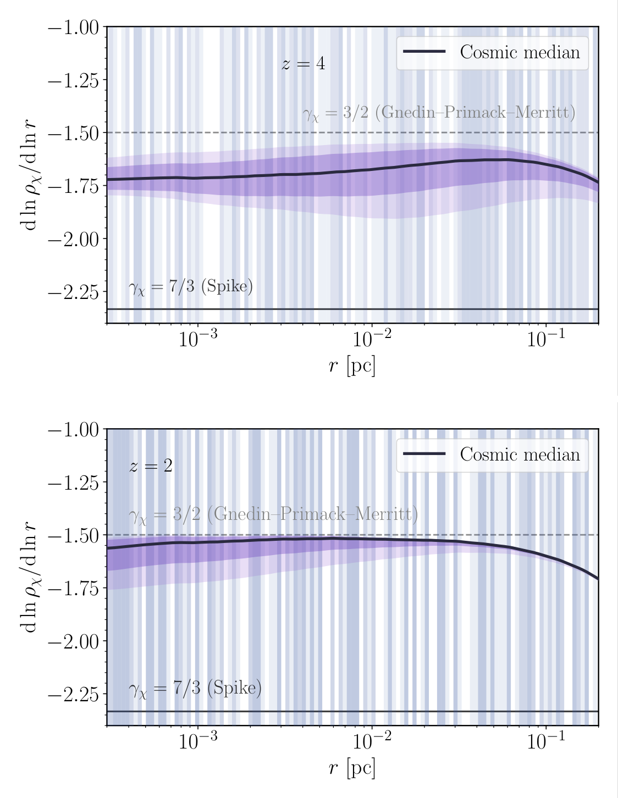
图注：Marginalized predictions for the DM logarithmic density slope $s(r)\equiv \mathrm{d}\ln\rho_\chi/\mathrm{d}\ln r$, obtained from a two-component Fokker-Planck coevolution of DM and stars. The left (right) panel shows results at redshift $z=4$ ($z=2$), with the horizontal axis denoting radius and the vertical axis the local DM slope. The solid black curve denotes the cosmic median profile, while the shaded regions indicate the $68\%$ and $95\%$ containment bands after marginalizing over a three-dimensional parameter space: the initial stellar cusp slope $\gamma_{\star,0}$, the initial dark-matter spike slope $\gamma_{\chi,0}$, and the enclosed mass ratio at the influence radius $\eta \equiv M_\star(<r_h)/M_\chi(<r_h)$. We adopt physically motivated log-uniform priors with ranges $\gamma_{\star,0}\in[1.2,1.8]$ \cite{1976ApJ...209..214B, Genzel_2010, Genzel:2003cn, Preto:2004kd}, $\gamma_{\chi,0}\in[2.1,2.3]$ \cite{Gondolo:1999ef, Ullio:2001fb}, and $\eta\in[0.3,3]$, and sample this space using a Monte Carlo ensemble. Horizontal reference lines indicate the canonical adiabatic spike ($\gamma_\chi=7/3$) and the Gnedin-Primack-Merritt attractor solution ($\gamma_\chi=3/2$). At late times, the inner DM profile converges toward the latter, largely independent of initial conditions of the system.
对应解读：对应“建议重点查看的图表”第2、6项，以及关键图表导读中关于局部斜率向 $\gamma_\chi\simeq1.5$ 收敛、置信区间和参数边缘化的段落。
入选理由：该图直接展示局部暗物质密度斜率 $s(r)=d\ln\rho_\chi/d\ln r$ 在 z=4 与 z=2 的径向分布，并标出 $7/3$ 经典尖峰和 $3/2$ 吸引子参考线。阴影带来自对初始恒星 cusp、初始尖峰斜率和质量比的边缘化，因此非常适合支撑日报关于稳健收敛和系统不确定性的解读。
来源与置信度：arxiv_source；high；arxiv_source / main.tex:figure[4]
Fig05
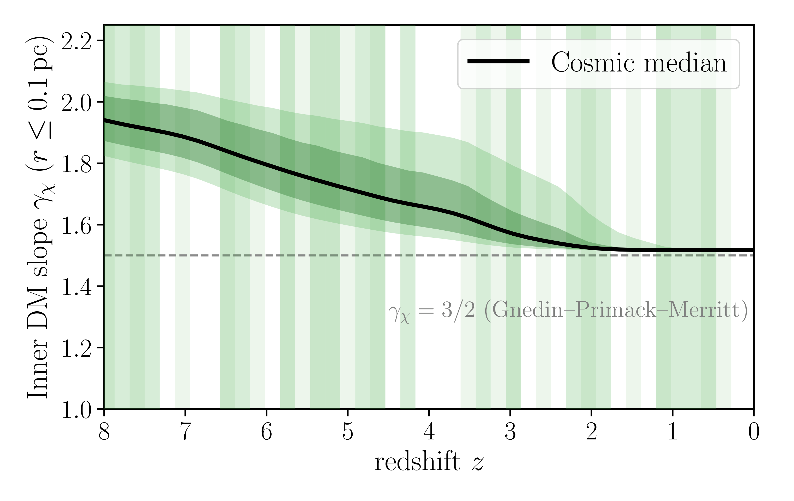
图注：Cosmic evolution of the averaged inner DM density slope $\gamma_\chi$ within $r\leq 0.1\,\mathrm{pc}$. The black curve shows the median over a Monte Carlo ensemble of two-component (stars + DM) Fokker-Planck evolutions, while shaded regions denote the 68\% and 95\% containment bands. The ensemble marginalizes over log-uniform priors on the initial stellar cusp slope $\gamma_{\star,0}\in[1.2,1.8]$, the initial dark-matter spike slope $\gamma_{\chi,0}\in[2.1,2.3]$, and the enclosed mass ratio $\eta=M_\star(<r_h)/M_\chi(<r_h)\in[0.3,3]$. At low redshifts, regardless of the initial conditions of the system, the inner slope converges to the steady state solution.
对应解读：对应关键图表导读“图3：斜率 $\gamma_\chi$ 随时间或红移变化”，以及“建议重点查看的图表”第2、6项。
入选理由：该图把内区平均斜率 $\gamma_\chi$ 作为红移函数展示，清楚显示从较陡初始尖峰向低红移稳态解收敛的时间演化，并带有 68% 和 95% containment bands。它比径向斜率图更适合说明“数 Gyr 内趋向 $1.5$”这一时间尺度结论。
来源与置信度：arxiv_source；high；arxiv_source / main.tex:figure[5]
Fig07
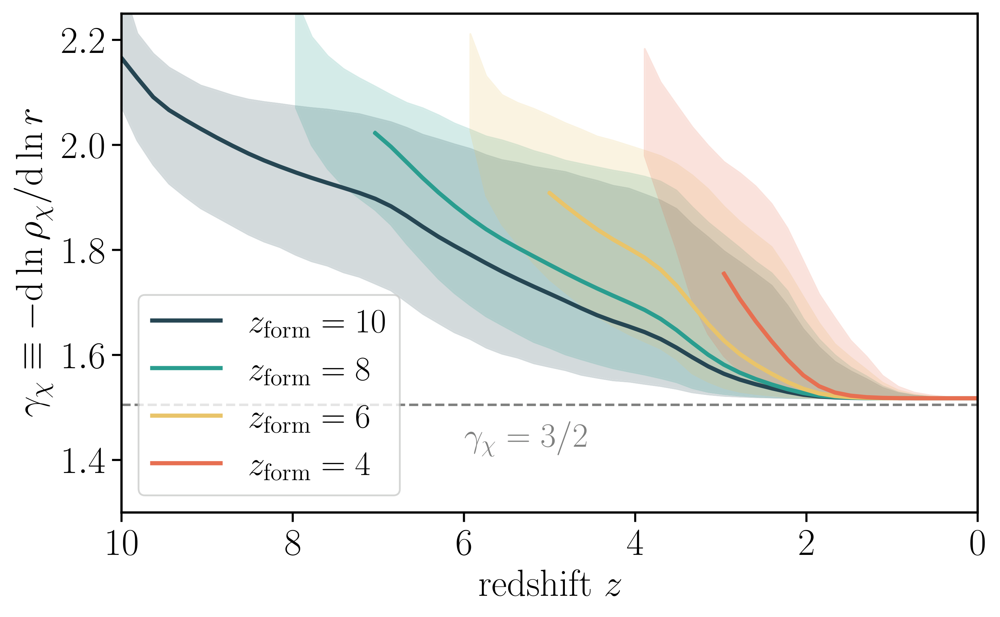
图注：Impact of the assumed spike formation redshift on the evolution of the inner DM density slope $\gamma_\chi \equiv -\mathrm{d}\ln\rho_\chi/\mathrm{d}\ln r$, averaged within $r \le 0.1\,\mathrm{pc}$. Each colored curve shows the median redshift evolution for a different formation redshift $z_{\rm form}\in{10,\,8,\,6,\,4}$, obtained from a Monte Carlo ensemble of coupled two-component Fokker--Planck evolutions marginalizing over the initial stellar cusp slope $\gamma_{\star,0}\in[1.2,1.8]$, the initial spike slope $\gamma_{\chi,0}\in[2.1,2.3]$, and the enclosed mass ratio $\eta\in[0.3,3]$ (darker shaded bands, 68\% containment). The lighter background bands show the 68\% interval for a broader, conservative prior choice. The horizontal dashed line marks the steady-state attractor $\gamma_\chi=3/2$. Regardless of when the spike forms, the system converges toward this attractor, but later formation shifts the relaxation to lower redshifts.
对应解读：对应“建议重点查看的图表”第3项：不同形成红移或加热历史比较，以及日报中关于 $z\simeq10$ 形成尖峰到 $z\lesssim2$ 衰减、晚形成尖峰保留更陡结构的讨论。
入选理由：该图专门比较 $z_{\rm form}=10,8,6,4$ 的演化轨迹，并标出 $\gamma_\chi=3/2$ 吸引子。它最能验证形成红移对弛豫进程的影响：早形成尖峰更早接近稳态，晚形成尖峰的收敛推迟到更低红移。
来源与置信度：arxiv_source；high；arxiv_source / main.tex:figure[7]
Fig02
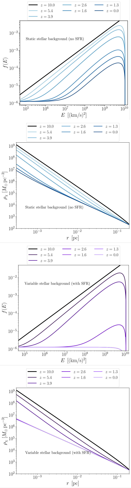
图注：\textit{Upper left panel:} Phase space distribution of DM particles at different redshifts as a function of binding energy. The solid black line indicates the redshift of spike formation, and the colored blue lines indicate the accumulated effects of stellar heating at various redshifts. These lines assume a constant heating rate with parameters for the stellar profiles of $\rho_{\star}= 3.2 \times 10^5 M_{\odot} \mathrm{pc}^{-3}(r / 1 \mathrm{pc})^{-1}$ and $\gamma=1.4$ \cite{Genzel:2003cn}. \textit{Upper right panel:} DM density profiles at various redshifts induced by stellar heating, consistent with the phase-space distributions shown in the left panel. \textit{Lower left panel:} Phase-space evolution of the DM at different redshifts, for a heating rate from stars scaling with the Star Forming Rate and normalization at $z=0$ fixed by parameters of $\rho_{\star}= 3.2 \times 10^5 M_{\odot} \mathrm{pc}^{-3}(r / 1 \mathrm{pc})^{-1}$ and $\gamma=1.4$ \cite{Genzel:2003cn}. \textit{Lower right panel:} DM density profile at various redshifts induced by stellar heating, and a heating rate scaling with redshift as the SFR.
对应解读：对应“建议重点查看的图表”第2项，以及关键图表导读“图2：红移演化密度剖面，不同颜色代表不同红移”。
入选理由：该图同时给出相空间分布和暗物质密度剖面在不同红移下的演化，并比较恒定加热率与随宇宙恒星形成率变化的加热率。它能直观看到恒星加热如何把尖峰内区密度逐步压低，是理解 Fokker-Planck 演化机制的基础图。
来源与置信度：arxiv_source；high；arxiv_source / main.tex:figure[2]
Fig01
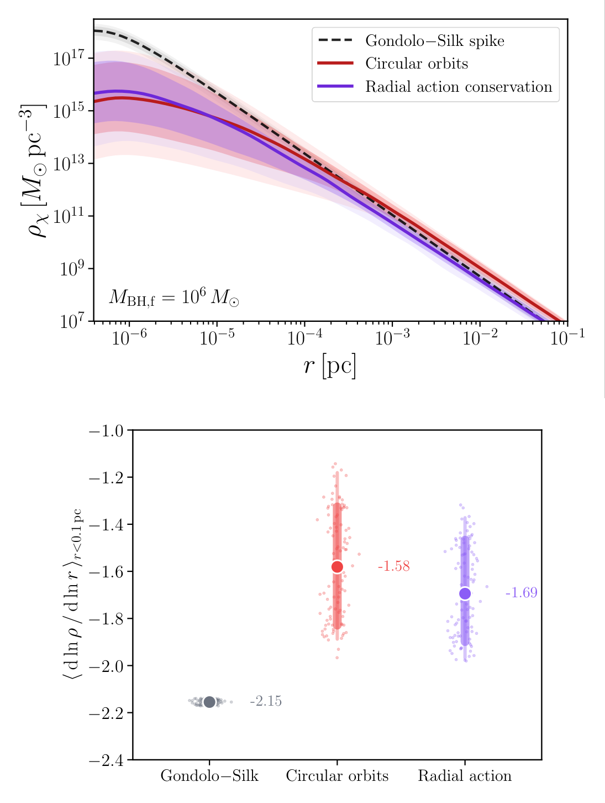
图注：\textit{Left panel:} DM density profiles $\rho_\chi(r)$ after adiabatic contraction driven by the growth of a black hole to a final mass $M_{\rm BH,f}=10^{6}\,M_\odot$, comparing three spike formation prescriptions. Each is obtained from a four-dimensional Monte Carlo marginalization over log-uniform priors on (i) the initial dark-matter cusp slope $\gamma_{\chi,0}\in[0.85,1.15]$, (ii) the initial stellar cusp slope $\gamma_{\star,0}\in[1.2,1.8]$, (iii) the enclosed stellar-to--dark-matter mass ratio $\eta\equiv M_\star(<1\,\mathrm{pc})/M_\chi(<1\,\mathrm{pc})\in[0.3,3]$, and (iv) the seed black-hole mass $M_{\rm BH,i}\in[10^{2.5},10^{4.5}]\,M_\odot$. Gray bands show the Gondolo--Silk prescription (black dashed median), red bands the circular-orbit adiabatic contraction including a finite seed mass and stellar cusp (dark red median), and purple bands the full radial-action conservation method (purple median). Dark (light) bands indicate the $68\%$ ($95\%$) credible intervals. \textit{Right panel:} Averaged logarithmic slope $\langle\mathrm{d}\ln\rho_\chi/\mathrm{d}\ln r\rangle$ within $r<0.1\,\mathrm{pc}$ for the same three prescriptions. Thick bars show the $68\%$ interval, thin bars the $95\%$ interval, and circles denote the median. The canonical Gondolo--Silk prediction yields the steepest slopes, radial-action conservation yields softer profiles once finite seeds and stars are included, and circular-orbit adiabatic contraction produces the shallowest inner profiles.
对应解读：对应“建议重点查看的图表”第1项，以及关键图表导读“图1：绝热形成前后密度剖面，比较经典尖峰、有限种子和恒星修正”。
入选理由：该图展示黑洞绝热增长后的密度剖面和内区平均斜率，比较 Gondolo-Silk、含有限种子和恒星 cusp 的圆轨道收缩、以及径向作用量守恒方法，并给出 68%/95% 可信区间。它是解释本文为何要修正经典尖峰形成假设的最佳入口图。
来源与置信度：arxiv_source；high；arxiv_source / main.tex:figure[1]
强相关工作
这篇工作与 Gondolo-Silk 暗物质尖峰模型直接相关。经典模型给出了绝热黑洞增长导致的尖峰斜率，是许多间接探测乐观估算的基础。后续文献讨论了尖峰的破坏：黑洞并合、恒星散射加热、暗物质湮灭平台、非绝热增长、黑洞偏心位置和星系核反馈。本文的定位是把“恒星加热会削弱尖峰”做成带红移演化和观测基准的半解析框架。
相似工作还包括银河系中心暗物质分布、核星团两体弛豫对暗物质的影响、以及用 Fokker-Planck 方程研究多质量组分在黑洞势中的 Bahcall-Wolf cusp。可能存在张力的方向是：某些研究认为黑洞尖峰在安静、无并合、晚形成的系统中仍可很陡；另一些研究在包含黑洞并合或自相互作用暗物质时会得到更弱甚至核心化的中心分布。建议检索关键词：“Gondolo Silk dark matter spike”、“stellar heating dark matter spike”、“Fokker Planck dark matter cusp black hole”、“J factor galactic nuclei spike redshift evolution”、“dark matter spike black hole mergers”。
相似工作：
- https://arxiv.org/abs/2605.01023
- https://arxiv.org/abs/astro-ph/9906391
- https://arxiv.org/abs/astro-ph/0101489
基础理论 / 方法工作：
- https://arxiv.org/abs/astro-ph/9906391
- https://ui.adsabs.harvard.edu/abs/1976ApJ...209..214B/abstract
- https://ui.adsabs.harvard.edu/abs/1997ApJ...490..493N/abstract
相反观点 / 张力线索：
- https://arxiv.org/abs/astro-ph/0101489
- https://arxiv.org/abs/astro-ph/0207125
- https://ui.adsabs.harvard.edu/abs/2004PhRvL..92m1303M/abstract
11. Random Polarization Position Angle Behaviors across Bursts of Repeating Fast Radio Bursts
- 来源：arXiv / astro-ph.HE
- 链接：https://arxiv.org/abs/2605.00372v1
- 作者：Xiaohui Liu, Jiarui Niu, Tiancong Wang, Jun-Shuo Zhang, Yuanhong Qu, Jinchen Jiang, Yongkun Zhang, Heng Xu
- 评分：novelty 7/10，importance 6/10，relevance 8/10，final 8.00/10
- 推荐理由：分析重复 FRB 爆发间偏振位置角的随机分布并提出动态磁层解释，对 FRB 辐射几何和中子星磁层模型有参考价值。
中文题目：重复快速射电暴中爆发间随机的偏振位置角行为
做了什么：这篇文章研究重复快速射电暴（FRB）不同爆发之间的本征偏振位置角（PA）如何变化。作者把每个爆发内近似稳定的 PA 作为一个可比较的几何量，统计多次观测会话中的 PA 分布，并用 Lomb-Scargle 周期图在 10 ms 到 10^7 ms 的时间尺度上搜索周期性。主要结论是：重复 FRB 的本征 PA 近似服从高斯分布，但 PA 时间序列没有可信周期信号。作者据此提出一种扩展的旋转矢量模型：辐射区仍局限在中子星磁层的一个小区域内，但有效磁轴会受随机磁层扰动而在有限范围内游走，因此产生爆发间随机 PA，而不必要求每次爆发都严格锁定在自转相位上。
为什么重要：FRB 的偏振是少数能直接约束辐射几何和磁层环境的观测量。若 PA 存在稳定周期，可能直接给出中子星自转周期；若 PA 随机但分布稳定，则说明发射几何不是简单的固定磁轴扫过视线。这篇文章把“爆发内 PA 稳定”和“爆发间 PA 随机”这两个看似矛盾的事实放在同一个几何框架中解释，对判断 FRB 是否来自磁星磁层、辐射区有多局域、以及为什么多数 FRB 不显示清晰周期性都有意义。
理论 / 观测 / 仪器方法价值：对理论的价值在于，它把传统 pulsar 的 rotating vector model 推广到动态磁层，允许有效磁轴在有限角域内随机偏移。对观测的价值在于，它强调 PA 分布形状、会话间稳定性和周期搜索的零结果同样是有信息量的诊断量。对方法的价值在于，它提供了把偏振校正、RM 扣除、PA 统计分布和非均匀采样周期搜索连起来的一套分析思路。
为什么应该关注：如果你关心 FRB 的中心引擎，这篇文章提醒你：没有探测到周期并不等于没有自转，也不等于发射区完全无序；随机磁层几何可以把周期信号洗掉，同时保留稳定的统计分布。如果你做偏振观测，它也说明单个爆发的 PA 曲线不够，爆发群体的 PA 分布、选择效应和 RM 系统误差可能才是区分模型的关键。
展开详细解读：文章讲解、背景、理论、重点章节、图表与相关工作
文章详细讲解
科学问题：重复 FRB 通常高度线偏振，并且在单次毫秒级爆发内 PA 往往近似常数；但不同爆发之间，PA 可以相差很大。传统脉冲星图像会自然预期 PA 与自转相位有关，若爆发多次发生在固定磁层位置，足够多的爆发应在 PA 或相位上显示某种周期性。问题是，许多活跃重复源虽然有大量爆发，却没有稳定自转周期的明确证据。本文关注的核心就是：这些爆发间 PA 是真正随机的，还是隐藏着周期调制？这种行为对发射区几何意味着什么？
作者怎么做：论文从重复 FRB 的偏振观测出发，先将观测 PA 校正到本征 PA，通常需要扣除法拉第旋转，即使用 RM 将不同频率处的偏振角统一到参考频率或无限频率。然后他们把每个爆发的代表性 PA 组成时间序列和统计样本，检查其概率分布是否稳定，以及不同观测 session 之间是否有系统漂移。随后用 Lomb-Scargle periodogram 对非均匀采样的 PA 序列做周期搜索，覆盖 10 ms 到 10^7 ms 的宽时间尺度，并对若干活跃观测段分别进行类似检验，以避免长时间间隔和观测窗口函数掩盖短期周期。
关键结果：他们发现重复 FRB 的本征 PA 分布可用近似高斯分布描述，而且这种统计性质在不同观测时段保持稳定。这支持一个“局域但扰动”的图像：发射并不是来自整个磁层随机位置，而更像来自某个受限区域；但该区域的有效磁轴或局部磁场方向会在爆发之间随机偏移。周期搜索没有给出可信的周期峰，说明若中子星自转周期存在，它没有以简单、相干的 PA 调制方式显现。作者用扩展旋转矢量模型解释：几何投影可以把有限角度的磁轴游走映射成近似高斯的 PA 分布，而随机游走会破坏稳定周期性。
局限和下一步：摘要没有给出具体源列表、样本大小、PA 误差模型和假警概率阈值，因此读者需要检查正文中周期搜索的灵敏度、观测窗口函数、RM 变化和低信噪比爆发的选择效应。下一步应将 PA、到达时间、脉冲形态、频率漂移、RM/DM 变化联合建模，并在更长基线、更高爆发率源上检验：PA 分布宽度是否与活动状态、能量、等待时间或频率相关。如果这些相关性存在，随机磁层扰动模型就能被进一步定量化；如果不存在，则可能需要更强的几何或传播效应解释。
背景知识
研究对象是重复快速射电暴，即来自宇宙学距离或银河系外的毫秒射电爆发源。它们亮温极高，要求相干辐射机制；许多源显示强线偏振，说明辐射区或传播路径上存在有序磁场。FRB 20121102A、20180916B、20190520B 等重复源推动了一个重要方向：用偏振和活动周期来反推中心天体是否为磁星，以及辐射发生在磁层内还是更远处的激波区。
历史上，偏振位置角是脉冲星研究的经典工具。Radhakrishnan-Cooke 旋转矢量模型把 PA 随脉冲相位的 S 形摆动解释为磁轴随恒星自转扫过视线的投影。若 FRB 是磁星磁层中的相干辐射，很多人自然希望用类似方法找到自转周期或发射几何。但是 FRB 的爆发稀疏、相位不连续、采样受观测窗口限制，并且每次爆发可能对应不同磁层状态，因此不能简单套用普通射电脉冲星的相位折叠方法。
现在重新看这个问题的原因是，重复 FRB 的高质量偏振样本正在变大，尤其是 FAST、CHIME、DSA、MeerKAT 等设施提供了越来越多爆发。单个爆发的 PA 是否平坦已经不是唯一问题；更重要的是大量爆发的 PA 分布、统计稳定性和与时间的关系。大量数据使得“没有周期”本身可以转化为对几何模型的限制，而不是简单的非探测。
常见误区包括：第一，把爆发间 PA 变化直接等同于辐射区完全随机，这忽略了几何投影和局域扰动可以产生宽分布；第二，把没有周期误解为排除自转中子星模型，实际上随机触发、相位选择和磁轴扰动都可能抹去周期；第三，把观测 PA 当作本征 PA，而没有充分考虑 RM 误差、频率依赖去偏振、仪器偏振泄漏和 PA 的 180 度模糊。
基础理论 / 方法脉络
核心物理图像是：线偏振方向通常反映辐射点处磁场方向在天球平面上的投影，或者反映传播后保留下来的偏振本征模方向。在磁层相干辐射模型中，如果发射沿开放磁力线或局部电流片发生，那么 PA 与磁轴、视线方向、辐射高度和局部等离子体传播有关。单次爆发内 PA 近似常数，说明毫秒持续时间内发射束的几何方向变化不大，或者偏振由稳定传播模式锁定。
传统旋转矢量模型的关键量包括自转轴与磁轴夹角 $\alpha$、视线与自转轴夹角 $\zeta$、自转相位 $\phi$、以及观测 PA $\psi$。在标准模型中，$\psi(\phi)$ 是确定函数；如果爆发发生在固定相位，PA 应集中在固定值附近；如果爆发采样多个相位，可能出现周期性或 RVM 曲线的一部分。本文的扩展点是允许有效磁轴不是固定的，而是在爆发之间发生随机偏移，等价于 $\alpha$、磁轴方位或局部发射点法向存在随机扰动。
观测方法上，PA 来自 Stokes 参数 $Q,U$：$\psi=\frac{1}{2}\arctan(U/Q)$。但射电波穿过磁化等离子体会发生法拉第旋转，观测角满足 $\psi(\lambda)=\psi_0+\mathrm{RM}\lambda^2$。因此任何 PA 统计都依赖 RM 测量精度。若 RM 在不同爆发之间变化，或者频带内存在未解析的 RM 结构，会把本征 PA 分布人为加宽。周期搜索还面临非均匀采样、观测间隔、爆发触发过程和 PA 角变量周期性的处理问题。
主要退化关系是几何宽度与扰动宽度的退化：一个宽 PA 分布可以来自磁轴真实游走，也可以来自宽相位采样、多个发射区、传播导致的偏振模跳变，或 RM 系统误差。选择效应也很关键：只有高偏振、高信噪比、PA 可测的爆发进入样本，低偏振或复杂 PA 爆发可能被排除，从而使分布看起来更高斯或更窄。
公式与推导
偏振角首先由 Stokes 参数给出：
这里 $Q,U$ 是线偏振 Stokes 参数，$\nu$ 是频率，$t$ 是爆发内时间；因 $Q,U$ 同时改变符号不改变线偏振方向，$\psi$ 具有 $\pi$ 周期性。
扣除法拉第旋转后得到本征 PA：
其中 $\lambda=c/\nu$，RM 是旋转量度，等于视线方向电子密度和磁场的积分。若 RM 误差为 $\sigma_{\rm RM}$，则它给 PA 引入的系统不确定度近似为 $\sigma_{\psi,{\rm RM}}\simeq \lambda^2\sigma_{\rm RM}$。这一步直接决定后续 PA 分布是否可靠。
标准旋转矢量模型可写成：
$\alpha$ 是磁轴与自转轴夹角，$\zeta$ 是视线与自转轴夹角，$\phi$ 是自转相位，$\phi_0$ 为最接近相位，$\psi_{\rm ref}$ 是参考 PA。若几何固定，$\psi$ 应随 $\phi$ 重复。
本文模型可近似理解为有效磁轴存在随机扰动：
其中 $i$ 标记第 $i$ 次爆发，$\boldsymbol{m}_0$ 是平均磁轴方向，$\delta\boldsymbol{m}_i$ 是随机磁层扰动，$\Sigma_m$ 描述扰动协方差。将 $\boldsymbol{m}_i$ 投影到天球平面即可得到每次爆发的 PA。
在小扰动极限下，PA 分布可线性化为：
其中 $\bar{\psi}$ 是平均 PA，$\boldsymbol{J}=\partial\psi/\partial\boldsymbol{m}$ 是几何投影的雅可比，$\epsilon_i$ 是测量误差和未建模传播效应。若 $\delta\boldsymbol{m}_i$ 近似高斯，则 $\psi_i$ 也近似高斯，这正是论文解释 PA 分布的主要推导脉络。
周期搜索可用 Lomb-Scargle 功率表示为：
$t_i$ 是爆发到达时刻，$w_i$ 通常取 PA 误差的反方差权重，$\omega=2\pi/P$，$\tau$ 用于正交化正弦和余弦项。若 PA 由相干自转调制，某些 $P$ 应给出显著功率；本文报告在 10 ms 到 $10^7$ ms 范围内没有可信峰。
模型拟合 / 应用方法
这类工作首先要拟合 RM 和本征 PA。通常在频率通道上拟合 $Q+iU=L\exp[2i(\psi_0+\mathrm{RM}\lambda^2)]$，或直接最大化线偏振相干度来求 RM。随后对每个爆发提取平均 PA 或时间分辨 PA，并估计测量误差。关键是角变量统计：PA 有 180 度简并，不能简单把跨越 $-90^\circ/90^\circ$ 边界的数据当作普通实数；需要做 unwrap 或使用 circular statistics。
PA 分布拟合可采用高斯、混合高斯、von Mises 分布或投影几何模型。似然一般包含测量误差卷积，例如 $p(\psi_i|\mu,\sigma)=\mathcal{N}{\pi}(\psi_i;\mu,\sigma^2+\sigma_i^2)$，其中 $\mathcal{N}$ 表示按 $\pi$ 周期折叠的高斯。需要比较单峰高斯与多峰模型，因为两个正交偏振模或两个发射区也可产生看似宽的分布。
周期搜索的模型拟合通常包括 LS 周期图、相位折叠检验、bootstrap 或随机重排估计假警概率。系统误差包括观测窗口函数、爆发等待时间聚集、不同望远镜的绝对 PA 标定差、RM 时间变化、低信噪比 PA 偏差和选择只保留高线偏振爆发造成的截断。实际解读残差时，应看候选周期折叠后的 PA 是否形成窄带或 RVM 曲线，而不只是周期图峰值是否超过阈值；如果残差仍接近随机高斯，说明周期解释不稳健。
重点章节 / 结果段落怎么读
-
数据和样本：优先查看作者使用了哪些重复 FRB、每个源有多少爆发、观测时间跨度、频段、偏振标定流程以及是否合并不同望远镜数据。样本大小和时间基线直接决定周期搜索的可信度。
-
PA 与 RM 测量方法：读者应重点看本征 PA 如何定义，是取爆发峰值、时间平均，还是对整个动态谱联合拟合。还要检查 RM 是否逐爆发测量，还是采用全局 RM；这会影响 PA 分布宽度。
-
PA 分布统计：这一部分应关注高斯拟合的均值、宽度、不同 session 的一致性，以及是否测试过多峰分布或正交偏振模。若只报告近似高斯而缺少模型比较，结论强度会降低。
-
周期搜索：检查 Lomb-Scargle 的频率范围、独立频率数、假警概率估计、窗口函数和注入恢复实验。特别要看 10 ms 到 10^7 ms 的搜索范围内，对不同周期的灵敏度是否均匀。
-
物理解释与扩展 RVM：读者应看作者如何把随机有效磁轴映射到 PA 分布，是否给出可检验预测，例如 PA 宽度与爆发能量、等待时间、活动状态或 RM 变化的相关性。
-
稳健性检验或附录：重点检查 PA 角变量处理、低信噪比筛选、不同观测会话单独分析、以及去除异常爆发后结论是否保持。
建议重点查看的图表
-
本征 PA 直方图或核密度图：看是否真是单峰近似高斯，尾部和离群点是否显著，是否存在 90 度间隔的正交模迹象。
-
不同观测 session 的 PA 分布对比图：看均值和宽度是否稳定；如果不同 session 有系统偏移，要考虑 RM 或仪器标定问题。
-
PA 随爆发时间的散点图：看是否有长期漂移、活动期内聚集、或与爆发率变化同步的结构。
-
Lomb-Scargle 周期图：看最高峰的假警概率、搜索频段边界、窗口函数别名，以及活跃观测段单独分析是否一致。
-
相位折叠诊断图：若作者展示候选周期折叠，应看 PA 是否在相位上形成连续曲线，而不是由少数点驱动。
-
扩展 RVM 或随机磁轴模型示意/拟合图：看模型能否同时解释 PA 均值、宽度和无周期性，而不是只定性描述。
-
RM 或偏振度随时间变化图：如果有，应检查 RM 变化是否足以造成 PA 加宽，线偏振度是否与 PA 离群点相关。
关键图表逐图导读
图 1：通常应是样本爆发的偏振轮廓或动态谱。横轴多为时间，纵轴可能为 Stokes I、线偏振强度和 PA，或频率-时间强度图。应看单个爆发内 PA 是否确实平坦，以及 PA 误差条是否小于爆发间散布。读图陷阱是把低信噪比尾部的 PA 波动当作真实结构。
图 2：PA 分布图。横轴为本征 PA，纵轴为爆发数或概率密度，数据点/柱状图上叠加高斯模型线。关键是观察单峰性、宽度和尾部；如果分布跨越 PA 的 180 度边界，必须确认作者做了正确的角度展开。陷阱是普通高斯在边界附近会产生人为不连续。
图 3：PA 随时间或爆发序号变化。横轴为 MJD、相对时间或爆发编号，纵轴为本征 PA。应看是否存在平滑漂移、突变或分段均值变化。若点的时间采样高度不均匀，空白区域不能解释为物理静默；观测窗口会强烈影响视觉印象。
图 4：Lomb-Scargle 周期图。横轴为周期或频率，纵轴为归一化功率；常有 1%、0.1% 假警概率线。主要结论应是没有峰稳定超过可信阈值。陷阱是窗口函数峰、日周期/观测时长别名和多重检验未校正导致的虚假显著性。
图 5：候选周期折叠或注入恢复测试。横轴为折叠相位，纵轴为 PA 或残差。若真实周期存在，点应沿某条窄曲线或相位区间聚集；若只是随机散布，则周期解释不成立。应注意少数高权重点是否主导拟合。
图 6：扩展 RVM 几何图或模型模拟。坐标轴可能为磁轴扰动角、视线角或模拟 PA。应检查模型是否不仅能生成高斯分布，还能在相同参数下消除周期性。陷阱是定性示意不能替代对参数后验的约束。
论文原图 / 可嵌入图片
Fig04
图注：The $\overline{\mathrm{PA}_0}$ of bursts over MJD for FRB 20201124A1, FRB 20201124A2, FRB 20220912A, and FRB 20240114A, respectively. In the left panel of each sub-figure, the $\overline{\mathrm{PA}_0}$ of flat and variable PAs are marked in blue and green points, respectively. The grey KDE violins and the red points with the error bar denote the daily distribution of $\overline{\mathrm{PA}_0}$. In the right panel, we show the histogram of the $\overline{\mathrm{PA}_0}$ of all PAs and only flat PAs with red and blue colors, respectively. The light red region represents the 1-sigma confidence interval (CI), which is calculated using the whole sample. Note that the PAs have been shifted using their periodicity so that they are centered on the preferred angle.
对应解读：对应“本征 PA 直方图或核密度图”“不同观测 session 的 PA 分布对比图”“PA 随爆发时间的散点图”，也对应关键图表导读中的图 2 和图 3。
入选理由：这张图同时给出各 FRB/观测段的本征平均 PA 随 MJD 的变化、每日 KDE/小提琴分布、总体直方图以及 1-sigma 置信区间，是检验本文核心结论“PA 近似高斯且跨观测时段稳定”的最直接证据。它还明确说明 PA 已按周期性平移到 preferred angle 附近，可用于检查角度展开、尾部离群点、flat/variable PA 子样本差异和潜在长期漂移。
来源与置信度：arxiv_source；high；arxiv_source / no_linenumber_for_arxiv.tex:figure[4]
Fig02
图注：LSP search results using the time-PA series from four active episodes of FRB 20201124A, FRB 20220912A, and FRB 20240114A. The green dotted line represents the threshold corresponding to 3-sigma significance, and the red dotted vertical line shows the maximum power in our searching range.
对应解读：对应“Lomb-Scargle 周期图”和关键图表导读中的图 4，以及周期搜索模型拟合段落。
入选理由：该图展示 FRB 20201124A、FRB 20220912A 和 FRB 20240114A 四个活跃 episode 的 time-PA 序列 LSP 搜索结果，并标出 3-sigma 显著性阈值和搜索范围内最大功率，是支撑“没有可信周期信号”这一主要结论的关键图。相比单纯分布图，它直接检验 PA 是否受自转或其他周期调制。
来源与置信度：arxiv_source；high；arxiv_source / no_linenumber_for_arxiv.tex:figure[2]
Fig03
图注：LSP search results using the time-PA series from several active days of FRB 20201124A and FRB 20220912A. The notation is the same as that in Figure \ref{fig: episode}.
对应解读：对应“Lomb-Scargle 周期图”中关于活跃观测段单独分析的一项，也对应详细解读中“对若干活跃观测段分别进行类似检验”。
入选理由：这张图把 LSP 搜索下沉到 FRB 20201124A 和 FRB 20220912A 的若干活跃日，可检查长时间间隔、观测窗口函数和不同活动期是否掩盖短周期信号。它是 Fig02 的重要稳健性补充，有助于判断 null detection 是否只由全样本非均匀采样造成。
来源与置信度：arxiv_source；high；arxiv_source / no_linenumber_for_arxiv.tex:figure[3]
Fig08
图注：$\chi^2_{\nu,\mu}$ and $\chi^2_{\nu,\sigma}$ of all trial periods in the range $[1, 600]$ s for FRB 20201124A1, FRB 20201124A2, FRB 20220912A, and FRB 20240114A, respectively. The red dotted line corresponds to $\chi^2_{\nu}=3$ and $\chi^2_{\nu}=5$, respectively.
对应解读：对应“相位折叠诊断图”和模型拟合段落中关于 trial periods、折叠后均值/宽度残差是否随机的检查。
入选理由：该图给出 1–600 s 试验周期下 PA 分布均值和宽度的约化 chi-square 诊断，并以红虚线标出阈值，可用于判断候选周期折叠后是否真的产生相位相关结构。它比只看 LSP 峰值更接近日报强调的残差和折叠诊断，可帮助避免由少数点或窗口函数导致的虚假周期解释。
来源与置信度：arxiv_source；high；arxiv_source / no_linenumber_for_arxiv.tex:figure[8]
Fig06
图注：PA distributions for different half-opening angles in scenarios A, B, and C. Within each scenario, curves with the same color correspond to the same value of $\rho$ in Figure \ref{fig: PA0}.
对应解读：对应“扩展 RVM 或随机磁轴模型示意/拟合图”和关键图表导读中的图 6。
入选理由：这张图展示不同半张角和 A/B/C 场景下的模拟 PA 分布，直接检验扩展 RVM/随机有效磁轴模型是否能自然生成观测到的近似高斯 PA 分布。它把几何参数与可观测的 PA 统计量联系起来，比单纯示意图更能支撑模型解释。
来源与置信度：arxiv_source；high；arxiv_source / no_linenumber_for_arxiv.tex:figure[6]
Fig05
图注：Distribution of the effective magnetic axes $\mathbf{m}{\mathrm{eff}}$ on the sky plane for these three scenarios. The grey dots denote the projection of the effective magnetic axes, and the cyan star marks the projection of the mean magnetic axis $\mathbf{m}$ at the fiducial plane. The dashed circles represent the visible regions corresponding to different half-opening angles $\rho$. The cyan circles in panels B and C represent the trajectory of $\mathbf{m}$. $\mathbf{A}$: Non-rotating case, where $\mathbf{m}$ is fixed and $\mathbf{m} }$.}}$ is generated from the 2-D von Mises-Fisher distribution. The parameter settings of the panel A are ${\alpha, \beta, \sigma } = { 20^{\circ}, 10^{\circ}, 5^{\circ} }$. $\mathbf{B}$: The rotating case with small perturbations and the corresponding parameter settings of panel A are ${\alpha, \beta, \sigma } = { 10^{\circ}, 5^{\circ}, 3^{\circ} }$. $\mathbf{C}$: The rotating case with large perturbations and the corresponding parameter settings of panel A are ${\alpha, \beta, \sigma } = { 5^{\circ}, 10^{\circ}, 5^{\circ
对应解读：对应“扩展 RVM 或随机磁轴模型示意/拟合图”，尤其是随机磁轴在天空平面投影和可见区域的几何解释。
入选理由：该图给出非旋转、小扰动旋转和大扰动旋转三种情形下有效磁轴在天空平面的分布、平均磁轴位置和可见区域，有助于理解 Fig06 中 PA 分布的几何来源。虽然偏示意和模拟设定，但它是解释作者所谓动态磁层/随机磁轴框架的基础图。
来源与置信度：arxiv_source；high；arxiv_source / no_linenumber_for_arxiv.tex:figure[5]
强相关工作
这篇工作直接接在 FRB 偏振统计和重复源周期搜索两条文献线上。一方面，FRB 20121102A、20180916B、20190520B 等源的高 RM、高线偏振和复杂活动窗口已经说明偏振是环境和几何的强诊断；另一方面，针对重复 FRB 自转周期的搜索多为零结果，促使研究者考虑爆发触发相位随机、磁层状态变化、或者发射束不稳定等模型。建议检索关键词：repeating FRB polarization position angle, FRB rotating vector model, FRB periodicity search, FRB magnetar magnetosphere, FRB RM variation。
与相反观点相关的是，部分模型把 FRB 放在磁层外的相对论激波或星风环境中，PA 可能由冲击面磁场或传播效应决定，而不是直接由中子星磁轴投影给出。还有一些工作强调周期活动窗口可能来自双星轨道、自由进动或磁星活动周期，而非自转周期。本文的随机磁轴图像不必与这些模型完全排斥，但它要求 PA 的统计稳定性主要来自局域磁层几何。读者应把它与多发射区、正交偏振模、传播诱导 PA 旋转等替代解释进行比较。
相似工作：
- https://arxiv.org/abs/2605.00372
- https://ui.adsabs.harvard.edu/search/q=%22repeating%20FRB%22%20%22polarization%20position%20angle%22
- https://ui.adsabs.harvard.edu/search/q=%22FRB%22%20%22rotating%20vector%20model%22
基础理论 / 方法工作：
- https://ui.adsabs.harvard.edu/search/q=Radhakrishnan%20Cooke%201969%20rotating%20vector%20model
- https://ui.adsabs.harvard.edu/search/q=%22Faraday%20rotation%22%20%22fast%20radio%20bursts%22
- https://ui.adsabs.harvard.edu/search/q=%22magnetar%20magnetosphere%22%20%22fast%20radio%20bursts%22
相反观点 / 张力线索：
- https://ui.adsabs.harvard.edu/search/q=%22FRB%22%20%22synchrotron%20maser%22%20%22shock%22
- https://ui.adsabs.harvard.edu/search/q=%22FRB%22%20%22periodicity%20search%22%20%22repeating%22
- https://ui.adsabs.harvard.edu/search/q=%22orthogonal%20polarization%20modes%22%20%22fast%20radio%20bursts%22
12. On the isotropy of viscosity in accretion discs
- 来源：arXiv / astro-ph.HE
- 链接：https://arxiv.org/abs/2605.00985v1
- 作者：Chris Nixon, Jim Pringle
- 评分：novelty 6/10，importance 6/10，relevance 7/10，final 7.35/10
- 推荐理由：用 X 射线双星盘进动约束翘曲盘黏性各向同性，属于基础吸积盘物理，虽非突破性但对 HE 吸积系统建模有价值。
中文题目：吸积盘黏性是否各向同性
做了什么：这篇文章讨论翘曲吸积盘理论中的一个基础假设：盘内有效黏性是否可以当作小尺度、Navier-Stokes 型且各向同性。作者关注 X 射线双星中由盘进动导致的长周期调制，因为这些系统既能约束驱动径向吸积的黏性分量，也能通过是否存在盘倾斜和进动来约束抹平翘曲的黏性分量。他们将观测到的进动或非进动现象与 Ogilvie 的非线性翘曲盘理论比较，结论是现有观测大体支持 Ogilvie 模型足以描述盘演化，但也有迹象显示内部有效黏性可能略微非各向同性。
为什么重要：吸积盘的角动量输运几乎贯穿恒星形成、X 射线双星、活动星系核和潮汐瓦解事件。平面盘的 $\alpha$ 黏性只告诉我们径向输运有多快；翘曲盘还需要知道盘面倾角如何扩散或以弯曲波传播。若黏性各向同性，两个过程之间有确定关系；若非各向同性，黑洞自旋对准、喷流方向变化、X 射线双星超轨道周期和 AGN 宽线轮廓的解释都会改变。
理论 / 观测 / 仪器方法价值：对理论的价值是把 Ogilvie 翘曲盘理论的核心假设放到观测上检验，而不是只停留在数值模拟或形式推导。对观测的价值是把 X 射线双星长周期调制、盘进动和盘是否被快速抹平联系起来，形成对垂直剪切黏性或翘曲黏性的约束。对方法的价值是强调不能只用平面盘 $\alpha$ 参数解释所有盘现象，必须区分驱动吸积的扭矩和演化翘曲的扭矩。
为什么应该关注：如果你研究 X 射线双星、AGN 盘、原行星盘或黑洞自旋对准，这篇文章关心的是你模型里常被默认的一行假设是否可靠。盘黏性的各向同性不是技术细节，而会决定翘曲能活多久、盘会不会进动、喷流方向是否稳定，以及用长周期光变推断系统几何时是否会系统偏差。
展开详细解读：文章讲解、背景、理论、重点章节、图表与相关工作
文章详细讲解
科学问题：天体吸积盘常被简化为薄、平、轴对称结构，用一个有效 $\alpha$ 黏性描述角动量向外输运。但许多真实盘是翘曲或倾斜的：原行星盘能被直接成像出错位环，X 射线双星有超轨道周期和盘遮挡，AGN 的宽线和喷流方向也暗示盘面可能变化。翘曲盘演化不仅由径向剪切黏性控制，还由垂直剪切或倾角梯度相关的内部扭矩控制。本文要问的是：通常采用的 Navier-Stokes 型各向同性黏性，特别是 Ogilvie 翘曲盘理论中的假设，是否与观测相容？
作者怎么做：Nixon 和 Pringle 选择 X 射线双星作为检验场，因为这些系统有相对可约束的盘尺度、伴星质量、轨道周期和吸积率；其中一些显示长周期光变，通常解释为倾斜盘进动，另一些则没有明显盘错位或进动迹象。平面盘的吸积黏性可由观测到的吸积率、盘状态和经验 $\alpha$ 范围估计；翘曲抹平的效率则从盘能否在潮汐、辐照、Lense-Thirring 或质量转移流冲击等外力下保持倾斜和进动来间接约束。作者把这些约束与 Ogilvie 理论中不同黏性扭矩系数的关系进行比较。
关键结果：他们认为观测约束总体上没有推翻 Ogilvie 模型；也就是说，把有效黏性近似为小尺度、各向同性的 Navier-Stokes 黏性，能给出大致合理的翘曲演化时间和进动行为。与此同时，数据中存在一些边缘迹象，暗示负责抹平翘曲的黏性分量与负责径向吸积的黏性分量可能并不完全符合各向同性关系，内部盘黏性也许只是“近似各向同性”而非严格各向同性。
局限和下一步：这类检验不可避免是间接的。X 射线双星长周期可能来自盘进动，也可能混有辐照反馈、风吸收、喷流、伴星活动或状态转换；盘半径、厚度、$H/R$、真实 $\alpha$、外部扭矩和倾角也有较大不确定性。下一步需要把多波段光变、谱线轮廓、偏振、食变几何和数值 MHD 模拟结合起来，尤其要在可观测上分离“盘确实倾斜进动”和“亮度各向异性或遮挡造成的表观周期”。
背景知识
吸积盘黏性问题源于一个老难题：分子黏性远远不足以解释观测到的吸积率。Shakura-Sunyaev $\alpha$ 模型把未知湍流或磁流体过程参数化为有效应力 $T_{r\phi}=\alpha P$，成功解释了大量平面薄盘现象。但 $\alpha$ 模型本质上是现象学的，它并不自动说明不同方向的剪切应力是否相同，也不说明翘曲盘中的垂直运动如何耗散。
翘曲盘理论的发展表明，盘倾角随半径变化时，内部扭矩结构比平面盘更复杂。Papaloizou、Pringle 和后来的 Ogilvie 建立了薄盘翘曲演化方程，区分扩散型翘曲传播和弯曲波传播。Ogilvie 的工作尤其重要，因为它给出了非线性翘曲下扭矩系数与 $\alpha$、盘厚度和翘曲幅度的关系。但这个理论假设局部应力可以用 Navier-Stokes 黏性描述，而且黏性是各向同性的，这在真实 MHD 湍流盘中并非显然成立。
现在值得重新看，是因为观测上翘曲盘证据越来越多。原行星盘的 ALMA 影像显示错位环和阴影；X 射线双星有几十到几百天的超轨道周期；AGN 中盘-喷流错位和宽线区响应也提示非共面结构。与此同时，MRI 数值模拟虽然解释了磁湍流来源，却常难以在所有参数范围内重现实测吸积效率，也很难直接给出翘曲扭矩与平面扭矩的比值。因此观测检验仍然必要。
常见误区包括：第一，把 $\alpha$ 当作真正的微观黏性系数，而不是有效应力参数；第二，认为平面盘吸积率约束的 $\alpha$ 可直接用于翘曲扩散，忽略不同应力张量分量；第三，把所有长周期光变都视为盘进动，而忽略辐照不稳定、遮挡几何、伴星调制和风吸收；第四，认为 MHD 模拟已经完全解决了黏性各向同性问题，实际上模拟结果依赖磁通量、热力学、辐射输运和数值耗散。
基础理论 / 方法脉络
平面薄盘中，核心物理是差分旋转产生剪切，应力把角动量向外输运，物质向内落入。Shakura-Sunyaev 模型用运动黏性 $\nu_1=\alpha c_s H$ 描述径向剪切，其中 $c_s$ 是声速，$H$ 是盘半厚度。这个 $\nu_1$ 决定吸积时间尺度、表面密度分布和热稳定性。
翘曲盘需要引入单位角动量方向 $\boldsymbol{l}(R,t)$。若 $\boldsymbol{l}$ 随半径变化，相邻环之间不再共面，会产生试图对齐盘面的内部扭矩。在线性、薄盘、扩散极限下，这个过程常用第二黏性 $\nu_2$ 表示，它控制翘曲扩散或抹平。各向同性 Navier-Stokes 黏性的一个著名结果是，当 $\alpha\ll1$ 且翘曲较小时，$\nu_2$ 可能远大于 $\nu_1$，量级关系近似 $\nu_2/\nu_1\sim1/(2\alpha^2)$。这意味着即使吸积慢，翘曲也可能很快被抹平。
Ogilvie 理论更一般地把内部扭矩写成若干无量纲系数 $Q_1,Q_2,Q_3$：$Q_1$ 对应平面吸积相关扭矩，$Q_2$ 对应翘曲扩散，$Q_3$ 对应色散性进动扭矩。这套理论能处理有限翘曲幅度，并给出系数随 $\alpha$ 和翘曲幅度变化的关系。本文讨论的各向同性问题，本质上就是观测是否支持这些系数之间由同一个标量黏性决定。
X 射线双星提供了观测杠杆。若盘相对轨道面倾斜，伴星潮汐、辐照驱动、Lense-Thirring 效应或气流冲击都可驱动盘进动，产生超轨道周期。若 $\nu_2$ 很大，翘曲会很快扩散并被抹平，长期稳定进动难以维持；若 $\nu_2$ 较小，倾斜盘更容易存在。因而“有无长周期进动”和“进动周期多长”可反推 $\nu_2/\nu_1$ 的允许范围。
公式与推导
平面薄盘的基本黏性参数化为：
其中 $\nu_1$ 是驱动径向吸积的运动黏性，$\alpha$ 是 Shakura-Sunyaev 参数，$c_s$ 是声速，$H=c_s/\Omega$ 是盘厚度，$\Omega$ 是角速度。这个式子把未知湍流应力写成局部压强和轨道频率的量级估计。
平面盘的吸积率近似满足：
这里 $\dot{M}$ 是质量吸积率，$\Sigma$ 是面密度。观测的 X 射线光度给出 $L_X\simeq \eta \dot{M}c^2$，因此可间接约束 $\nu_1$ 或 $\alpha$，其中 $\eta$ 是辐射效率。
翘曲盘的局部角动量面密度为：
$R$ 是柱半径，$\boldsymbol{l}(R,t)$ 是盘环角动量方向的单位矢量。翘曲幅度常定义为：
它度量相邻半径盘环倾角变化的强弱；注意这里的 $\psi_w$ 不是偏振角，而是翘曲幅度。
在线性扩散近似下，翘曲抹平时间尺度可写为：
其中 $\nu_2$ 是控制倾角梯度扩散的有效黏性。与之相比，径向吸积时间尺度为 $t_{\rm acc}\sim R^2/\nu_1$。因此观测能否长期维持倾斜盘，主要约束比值 $\nu_2/\nu_1$。
在小翘曲、各向同性 Navier-Stokes 黏性、$\alpha\ll1$ 的经典极限下，有近似关系：
这个结果说明翘曲扩散可比径向吸积快很多；例如 $\alpha=0.1$ 时，$\nu_2/\nu_1\sim50$。若观测要求 $
u_2$ 明显低于这个值，就暗示黏性非各向同性或理论假设失效。
Ogilvie 形式下，内部扭矩常写成：
$Q_1$ 表示平面剪切导致的吸积扭矩，$Q_2$ 表示扩散性翘曲扭矩，$Q_3$ 表示进动或色散性扭矩。若黏性各向同性，这些系数由同一个 $\alpha$ 和翘曲幅度决定；本文就是用 X 射线双星进动现象检验这种联系是否合理。
模型拟合 / 应用方法
这篇文章属于观测约束与理论量级比较相结合的工作，而不是单一数据集的标准曲线拟合。常见做法是先用 X 射线光度、轨道周期、盘外半径和状态转换估计 $\dot{M}$、$R_{\rm out}$、$H/R$ 与 $\alpha$ 的合理范围，再用是否存在超轨道周期、周期长度和稳定性约束 $\nu_2$ 或 Ogilvie 系数。参数估计通常是区间约束而非精密后验。
若要形式化，可以把观测量设为 $D={P_{\rm orb},P_{\rm sup},L_X,q,i,\mathrm{precession?}}$，模型参数为 $\theta={\alpha,H/R,\nu_2/
u_1,\beta,R_{\rm out},\mathrm{torque}}$，其中 $\beta$ 是盘倾角。似然需要同时描述进动周期是否可由外部扭矩产生、翘曲是否能在 $t_{\rm warp}$ 内不被抹平、以及无进动系统中倾斜是否应被快速阻尼。实际困难是很多量只有先验范围，适合层级贝叶斯或人口统计模型，但现有样本和系统误差可能不足以支持过度复杂拟合。
主要退化包括：$\alpha$ 与 $H/R$ 的退化、外部扭矩强度与盘倾角的退化、盘外半径与进动周期的退化、以及观测长周期来源与真实盘进动之间的模型退化。系统误差来自距离和光度、吸积效率、辐照改变盘厚度、风和遮挡造成的非几何周期、以及二元系统参数不确定。读残差时，不能只问模型是否复现某个周期数值，还要问同一参数是否同时允许盘保持倾斜、产生正确调制幅度，并解释没有进动证据的系统。
重点章节 / 结果段落怎么读
-
引言和问题设定：应先看作者如何区分平面盘黏性与翘曲黏性，以及为什么 MHD 模拟暂时不能直接给出可靠的 $\nu_2/\nu_1$。这决定全文不是在否定 MRI，而是在检验有效黏性张量的性质。
-
Ogilvie 理论回顾：重点读 Navier-Stokes、小尺度、各向同性假设如何进入翘曲盘方程，以及 $Q_1,Q_2,Q_3$ 或 $\nu_1,\nu_2$ 的关系。这里是判断后续观测约束是否有物理含义的基础。
-
X 射线双星样本和长周期现象：看作者选了哪些有盘进动证据的系统，以及哪些系统作为无错位或无进动对照。需要检查每个系统的超轨道周期是否确实可靠，是否有替代解释。
-
黏性分量约束：这是核心结果段。读者应关注作者怎样从吸积率估计 $\nu_1$，怎样从进动存在性或阻尼时间估计 $\nu_2$，以及这些范围是否与 Ogilvie 各向同性预测重叠。
-
讨论非各向同性迹象：应看所谓“marginally non-isotropic”的证据来自哪些系统、显著性多高、是否由少数对象驱动。这里很可能是全文最需要谨慎阅读的部分。
-
结论和展望：关注作者提出哪些观测能打破退化，例如更好的长周期监测、谱线速度场、X 射线偏振或三维 MHD 翘曲盘模拟。
建议重点查看的图表
-
$\nu_2/\nu_1$ 或等效黏性比的约束图：看观测允许区间是否覆盖各向同性 Ogilvie 预测，边缘偏离是否显著。
-
X 射线双星样本表：检查系统名称、轨道周期、超轨道周期、质量比、光度、是否有进动证据，以及这些输入量的不确定性。
-
进动周期与系统参数关系图：横轴可能是轨道周期、盘半径或质量比，纵轴为超轨道周期；看模型线是否复现不同系统的数量级。
-
翘曲阻尼时间与外部驱动时间比较图：看哪些系统应被快速抹平，哪些可维持倾斜盘。
-
Ogilvie 系数随 $\alpha$ 或翘曲幅度变化图：看 $Q_2$ 是否对 $\alpha$ 极敏感，以及非线性翘曲是否改变线性近似结论。
-
有进动和无进动系统的分类诊断图：看是否存在清晰分界，还是样本混杂导致结论只能是弱约束。
-
参数敏感性或稳健性检验表：检查改变 $H/R$、盘外半径、吸积效率、外部扭矩模型后，非各向同性迹象是否仍存在。
关键图表逐图导读
图 1：可能是翘曲盘几何或内部扭矩示意。应识别盘环角动量方向 $\boldsymbol{l}$、倾角 $\beta$、节点线和内部扭矩方向。陷阱是示意图往往不能说明扩散型和波动型传播的适用条件，读者要回到 $\alpha$ 与 $H/R$ 的比较。
图 2：若展示 Ogilvie 系数或 $\nu_2/\nu_1$ 随 $\alpha$ 的变化，横轴通常为 $\alpha$，纵轴为黏性比或 $Q_i$。模型线代表各向同性 Navier-Stokes 预测。关键是看观测推断的 $\alpha$ 范围对应多大的翘曲扩散效率。读图陷阱是小 $\alpha$ 区域 $\nu_2/\nu_1$ 变化非常快，误差会被放大。
图 3：X 射线双星长周期对比图。横轴可能是系统编号、轨道周期或盘半径，纵轴是超轨道周期或进动周期。数据点表示观测系统，模型线表示潮汐或其他驱动下的预期进动。应看模型是否只匹配数量级，还是能解释系统间排序。陷阱是超轨道周期不一定唯一来自盘进动。
图 4：黏性约束区间图。横轴可能为 $\nu_1$ 或 $\alpha$，纵轴为 $\nu_2$ 或 $\nu_2/\nu_1$。阴影区代表有进动系统允许的参数，另一类阴影代表无进动系统排除的参数。主要结论应是各向同性预测大体落在允许区附近，但有边缘偏移。读图时要看置信区间是否包含系统误差，而不只是统计误差。
图 5：稳健性或参数扫描图。横轴可能为 $H/R$、盘外半径或倾角，纵轴为所需黏性比。应检查结论是否对某个难测参数过度敏感。若小幅改变盘厚度就能消除非各向同性迹象，那么结论应被理解为提示而非探测。
图 6：样本分类表或诊断表。列通常包括源名、是否倾斜、是否进动、周期、参考文献和推断黏性约束。读者应重点看哪些对象实际驱动结论，以及是否存在观测解释不唯一的系统。
论文原图 / 可嵌入图片
（未提供 verified figure；为避免编造图片链接，本节只在能确认官方图片 URL 或成功提取论文原图时嵌入图片。）
强相关工作
这篇文章与 Shakura-Sunyaev $\alpha$ 盘、Papaloizou-Pringle 翘曲盘理论和 Ogilvie 非线性翘曲盘理论直接相连。它的问题意识不是“吸积盘有没有黏性”，而是“有效应力张量能否用各向同性 Navier-Stokes 黏性近似”。建议检索关键词：warped accretion discs viscosity anisotropy, Ogilvie warped disc theory, X-ray binary superorbital periods, disc precession viscosity ratio, Papaloizou Pringle warp diffusion。
相近观测包括 Her X-1、SS 433、LMC X-4、SMC X-1 等 X 射线双星的超轨道周期和盘进动解释，也包括原行星盘错位环和 AGN 翘曲盘。潜在张力来自 MHD 模拟：MRI 湍流并不必然等价于局部各向同性黏性，而且磁场拓扑、净磁通量和辐射输运会改变应力分量。另一个相反观点是，某些长周期光变可能并非盘整体进动，而是辐照驱动循环、风吸收或喷流变化；如果这些替代解释成立，用它们约束 $\nu_2$ 就会偏差。
相似工作：
- https://arxiv.org/abs/2605.00985
- https://ui.adsabs.harvard.edu/search/q=%22X-ray%20binary%22%20%22superorbital%20period%22%20%22disc%20precession%22
- https://ui.adsabs.harvard.edu/search/q=%22warped%20accretion%20disc%22%20%22viscosity%20anisotropy%22
基础理论 / 方法工作：
- https://ui.adsabs.harvard.edu/search/q=Shakura%20Sunyaev%201973%20alpha%20disc
- https://ui.adsabs.harvard.edu/search/q=Papaloizou%20Pringle%201983%20warped%20disc
- https://ui.adsabs.harvard.edu/search/q=Ogilvie%201999%20non-linear%20fluid%20dynamics%20warped%20accretion%20discs
相反观点 / 张力线索：
- https://ui.adsabs.harvard.edu/search/q=%22MRI%20turbulence%22%20%22warped%20disc%22%20%22viscosity%22
- https://ui.adsabs.harvard.edu/search/q=%22superorbital%20periods%22%20%22radiation-driven%20warping%22
- https://ui.adsabs.harvard.edu/search/q=%22accretion%20disc%22%20%22non-isotropic%20viscosity%22
13. Maximal mass of neutron stars constrained by neutron star observations
- 来源：arXiv / astro-ph.HE
- 链接：https://arxiv.org/abs/2605.00437v1
- 作者：Gábor Kasza, György Wolf
- 评分：novelty 6/10，importance 6/10，relevance 7/10，final 7.35/10
- 推荐理由：结合 NICER、GW170817 和质量候选体约束中子星最大质量分布，属于有用的多信使 EOS 综合分析，虽增量性较强。
中文题目：用中子星观测约束中子星最大质量
做了什么：这篇文章研究中子星高密度物态方程如何被现有多信使观测限制，重点不是只给出一条质量—半径曲线，而是考察每条 M(R) 序列的终点：非转动冷中子星的最大质量 M_TOV 及其对应半径 R_TOV 的概率分布。作者从 SFHo 和 DD2 两个代表性强子物态方程出发，在更高密度处接上扩展线性 sigma 模型，并要求极高密度行为趋近微扰 QCD，构造一族满足因果性的混合物态方程。随后用 GW170817、NICER 质量—半径测量，以及若干低质量和质量间隙致密天体候选体的观测似然进行贝叶斯加权。主要结论是：在采用较稳健观测约束时，最大质量分布主要由观测决定，对低密度基准 EOS 选择不太敏感，倾向于约 2.2–2.3 个太阳质量；但最大质量星的半径更依赖所选强子 EOS，典型值约为 12±1 km。
为什么重要：中子星最大质量是连接核物理、引力波和致密星天体物理的核心量。它决定双中子星并合后残余物能否短暂存活、黑洞形成阈值、短伽马暴中心引擎模型，也直接限制数倍核饱和密度处 EOS 的刚度。过去许多工作给出 M_TOV 的上限或下限，但这篇文章把 M(R) 序列终点作为一个概率诊断量，能更直接地比较不同高密度 EOS 族与多信使观测的一致性。
理论 / 观测 / 仪器方法价值：理论价值在于它把强子 EOS、可能的高密度相变或混合相、因果性和 pQCD 渐近约束放在同一参数化框架里，减少了完全自由分段多项式或声速参数化的任意性。观测价值在于它把 NICER、GW170817 潮汐形变和质量间隙候选体统一进贝叶斯权重，展示哪些观测真正压缩 M_TOV 和 R_TOV 的分布。方法价值在于强调端点分布本身可作为 EOS 判别量，而不仅是某几个给定质量处的半径或 Λ。
为什么应该关注：如果你关心双中子星并合后残余物寿命、2 个太阳质量以上脉冲星、质量间隙天体是否可能是中子星，或高密度 QCD 是否允许强相变，这篇文章提供了一个直接可读的结论：现有稳健数据偏好 M_TOV 约 2.2–2.3 M_sun，同时 R_TOV 仍保留明显模型依赖。也就是说，最大质量的数值正在被观测钉住，但高密度内部结构和半径仍未被唯一确定。
展开详细解读：文章讲解、背景、理论、重点章节、图表与相关工作
文章详细讲解
科学问题：中子星物态方程在核饱和密度以上仍然不确定，尤其是最大质量附近的中心密度可能达到数倍核饱和密度，那里强子自由度、夸克自由度、相变和声速行为都可能改变 M(R) 序列的形状。传统做法常比较 1.4 M_sun 半径、2 M_sun 支撑能力或潮汐形变 Λ_1.4，但这些量不一定最直接反映极高密度区。本文把每条 EOS 产生的 TOV 序列终点作为统计对象，即最大非转动质量 M_TOV 和对应半径 R_TOV，问现有观测到底把这个终点推到哪里。
作者怎么做：他们从两个低到中等密度的强子基准 EOS——SFHo 和 DD2——出发，在更高密度区域接入扩展线性 sigma 模型描述，并要求 EOS 在更高密度时与 pQCD 结果相容。这样得到一族因果的混合 EOS，覆盖从较软到较硬的超核密度行为。对每条 EOS 求解 TOV 方程得到 M(R)、潮汐形变和最大质量端点，再用观测似然进行贝叶斯加权。纳入的观测包括 GW170817 的潮汐形变约束、NICER 对若干脉冲星的质量—半径约束，以及可能位于低质量或质量间隙的致密天体候选。
关键结果：最重要的结果是 M_TOV 的概率分布主要受观测约束控制，而对 SFHo 或 DD2 作为基准 EOS 的选择较不敏感；在最稳健的数据组合下，分布偏好约 2.2–2.3 M_sun。相比之下，R_TOV 对低密度/中密度强子 EOS 仍更敏感，典型值在 12±1 km 附近。潮汐形变约束会进一步排除非常硬的 EOS；如果把某些质量间隙候选体解释为中子星，则会对允许的 EOS 刚度提出更强要求，但这种解释本身的天体物理不确定性必须谨慎看待。
局限和下一步：这类分析的结果依赖 EOS 参数族的覆盖范围、不同观测似然的处理方式，以及候选质量间隙天体是否真为中子星。M_TOV 约 2.2–2.3 M_sun 的结论在当前稳健数据下较有意义，但不应被理解为已经精确测量到中子星最大质量。下一步需要更多高质量 NICER 半径测量、更多双中子星并合潮汐数据、并合后信号或千新星残余物约束，以及对快速自转、温度和组成效应的更一致处理。
背景知识
研究对象是冷、非转动、β 平衡中子星的质量—半径序列。给定一个物态方程 P(ε)，TOV 方程给出从低中心密度到高中心密度的一整族静态球对称星体解。序列达到最大质量后，通常进入径向不稳定分支；这个最大质量称为 M_TOV。它不同于快速自转中子星可支持的最大质量，也不同于双星并合后热且差分转动残余物的临界质量。
历史上，2 M_sun 级脉冲星的发现已经排除了大量过软 EOS；GW170817 则通过潮汐形变和电磁对应体排除了过硬 EOS 的一部分参数空间。NICER 又给出了若干毫秒脉冲星的独立 X 射线脉冲轮廓建模半径约束。问题在于这些观测限制的密度区间不完全相同：1.4 M_sun 星主要采样较低的超核密度，而最大质量星直接探测更高中心密度。因此端点分布是一个自然但仍未被充分利用的统计对象。
现在重新看这个问题有两个原因。第一，多信使数据已经足够丰富，可以把质量、半径、潮汐形变和候选极端质量天体放在统一框架里。第二，理论端也有从核物理有效模型到 pQCD 渐近行为的跨密度连接尝试，使得 EOS 参数化不再只是任意插值。常见误区是把某个质量间隙事件直接等同于超大质量中子星，或把 NICER 的单个半径后验当成模型无关事实；实际上这些都依赖源分类、距离、辐射模型和先验。
基础理论 / 方法脉络
核心物理图像是流体静力平衡与广义相对论引力的竞争。EOS 越硬，即在给定能量密度下压强越大，通常越能支撑更高质量，并给出更大半径和更大潮汐形变；EOS 越软则相反。但这种直觉会被相变、声速峰值、低密度和高密度分段行为打破。例如一个 EOS 可在 1–2 n_sat 附近较软以满足潮汐约束，又在更高密度迅速变硬以支撑 2 M_sun 以上中子星。
关键量包括 M_TOV、R_TOV、给定质量处半径 R_1.4 或 R_2.0、无量纲潮汐形变 Λ，以及声速平方 c_s^2=dP/dε。因果性要求 c_s≤c，热力学稳定性要求 dP/dε≥0。若要求高密度趋近 pQCD，则在极高化学势处 EOS 不能任意硬化。本文的 EOS 构造正是利用这些理论边界，把可接受参数空间压缩到物理上较合理的一族混合 EOS。
观测方法上，NICER 通过脉冲轮廓建模约束质量和半径，主要系统误差来自热点几何、辐射大气模型、背景和距离等。引力波通过双星潮汐相位修正约束质量加权的潮汐形变组合，误差来自波形模型、自旋先验、质量比和探测器校准。质量间隙候选体的解释还涉及它究竟是轻黑洞、重中子星还是并合产物的问题。因此贝叶斯加权比简单硬切阈值更合适，但也更依赖似然构造。
公式与推导
从一个 EOS 出发，静态球对称星由 TOV 方程确定：
这里 P 是压强，\varepsilon 是能量密度，m(r) 是半径 r 内的引力质量。给定中心密度 \varepsilon_c 并积分到 P(R)=0，可得恒星半径 R 和质量 M=m(R)。
最大质量端点由 M 随中心密度的极值给出：
在通常的冷星序列中，dM/d\varepsilon_c>0 的分支径向稳定，越过极大值后进入不稳定分支。因此 M_TOV 是非转动冷中子星可支撑质量的上限。
EOS 刚度可用声速表示：
第一条不等式对应力学稳定性，第二条是因果性。较大的 c_s^2 通常提高给定密度下的支撑能力，但若在较低密度已经过硬，会同时增大 R_1.4 和潮汐形变，从而受到 GW170817 限制。
潮汐形变与 Love 数和紧致度有关：
这里 k_2 是二阶潮汐 Love 数，M 和 R 是单星质量与半径。由于五次方半径依赖，潮汐数据对半径非常敏感，特别能排除半径过大的硬 EOS。
贝叶斯加权可概括为：
其中 \theta 表示 EOS 参数，\pi(\theta) 是先验。每个 \theta 对应一个 M(R) 序列和一个端点，于是端点分布为
R_TOV 分布同理。
模型拟合 / 应用方法
这类工作通常不是直接拟合一条经验 M(R) 曲线，而是在 EOS 参数空间中采样。每个参数点首先要通过基本物理筛选：热力学稳定、因果性、支持已知大质量脉冲星、与低密度核物理和高密度 pQCD 边界相容。然后解 TOV 和潮汐扰动方程，得到可与观测比较的 M、R、Λ，以及 M_TOV、R_TOV。
似然部分通常包括几类。NICER 似然可视作在质量—半径平面上的二维后验或核密度估计，EOS 给出的 M(R) 曲线穿过高概率区域会得到更大权重。GW170817 似然涉及双星质量、质量比、自旋先验和潮汐组合，实际应用中常把 EOS 预测的 Λ(M) 映射到波形后验空间。质量测量或候选质量间隙对象的似然则看 EOS 是否能支持相应质量，但若源分类不确定，不能简单当作硬下限。
主要退化关系包括：低密度 EOS 与高密度硬化之间可相互补偿；R_1.4 和 M_TOV 不总是一一对应；强相变可产生小半径但仍支持高质量的序列；pQCD 渐近约束会限制极高密度无限硬化。残差或后验诊断应关注哪些 EOS 被哪些数据排除，而不是只看最终峰值。若加入潮汐形变后高 M_TOV 尾部被削弱，说明过硬 EOS 同时造成了过大半径或 Λ。
重点章节 / 结果段落怎么读
数据/观测约束部分应先读。重点看作者如何实现 GW170817、NICER、低质量或质量间隙候选体的似然，以及哪些数据被称为“稳健约束”。这决定了 M_TOV 峰值是否可信，也决定候选极端天体对结论的影响是否只是情景分析。
EOS 构造部分是理论核心。读者应检查 SFHo 和 DD2 在何处接到扩展线性 sigma 模型，高密度如何要求接近 pQCD，参数范围如何覆盖不同刚度，以及因果性筛选如何执行。这里的先验范围会直接影响端点分布，尤其是 R_TOV 的模型依赖。
TOV 与端点统计方法部分要看作者如何从每个 EOS 得到 M(R) 序列、最大质量和对应半径，以及如何把这些端点通过贝叶斯权重累积成概率分布。关键是端点分布不是单独观测出来的，而是 EOS 后验的派生量。
主结果部分应重点比较不同数据组合和不同基准 EOS 的 M_TOV、R_TOV 分布。看 M_TOV 对基准 EOS 是否稳定、R_TOV 是否随 SFHo/DD2 改变、潮汐约束是否排除非常硬的尾部。
讨论和稳健性检验部分要看作者怎样评价质量间隙候选体、pQCD 约束和模型先验的影响。若论文有附录，应优先检查似然实现、参数先验和被剔除 EOS 的比例。
建议重点查看的图表
-
EOS 压强—能量密度或声速—密度图：看不同 EOS 族在 2–6 倍核饱和密度处的刚度范围，是否触及因果上限，以及 pQCD 约束如何限制高密度端。
-
质量—半径 M(R) 曲线族：看 SFHo 与 DD2 基准下曲线的整体位置、最大质量端点分布、以及是否存在半径过大或过小的分支。
-
M_TOV 概率分布图：比较只加质量约束、加入 NICER、加入 GW170817 潮汐、再加入候选质量间隙对象后的峰值和置信区间变化。
-
R_TOV 概率分布图：重点看它是否比 M_TOV 更依赖基准 EOS，以及 12±1 km 的范围是单峰还是由不同模型族叠加产生。
-
Λ 或 Λ_1.4 分布/约束图：看潮汐形变如何排除非常硬 EOS，特别是高 M_TOV 尾部是否同时给出过大 Λ。
-
二维后验或相关图，例如 M_TOV–R_TOV、M_TOV–Λ_1.4、R_1.4–M_TOV：这些图最能揭示退化关系和观测真正压缩的方向。
-
表格中的可信区间：检查作者给出的 68%/90% 区间是否对数据组合敏感，不要只引用峰值。
关键图表逐图导读
图 1：若为 EOS 族展示图，横轴通常是重子数密度、能量密度或化学势，纵轴是压强或声速平方。彩色曲线代表不同参数化 EOS，粗线可能是 SFHo/DD2 基准或后验高权重样本。读图时应看超核密度处曲线展开的宽度，以及是否有许多曲线接近 c_s^2=1 的因果上限。陷阱是把高密度极硬化直接理解为必然物理真实；它可能只是参数空间允许。
图 2：若为 M(R) 曲线图，横轴半径、纵轴质量。每条曲线对应一个 EOS，曲线最高点即 M_TOV，端点横坐标即 R_TOV。NICER 约束常以二维置信区域叠加，2 M_sun 脉冲星可表现为水平带。读图要看高权重曲线是否同时穿过 NICER 区域并满足大质量约束。陷阱是只看 1.4 M_sun 附近半径，而忽略最大质量端点所在的高中心密度段。
图 3：若为 M_TOV 后验分布，横轴 M_TOV，纵轴概率密度或加权计数。不同颜色通常表示不同基准 EOS 或不同观测组合。关键结论应体现为峰值在 2.2–2.3 M_sun 附近，且 SFHo/DD2 差异较小。读图陷阱是忽略先验分布；最好同时看未加权与加权后的变化。
图 4：若为 R_TOV 后验分布，横轴 R_TOV，纵轴概率密度。这里应重点比较不同基准 EOS 的峰值和宽度，检查 12±1 km 是否由单一物理趋势驱动。陷阱是把 R_TOV 与常见的 R_1.4 混淆；二者对应不同质量和中心密度。
图 5：若为潮汐形变相关图，横轴可能为质量或 Λ_1.4，纵轴可能为 M_TOV 或后验权重。数据点或曲线显示 EOS 预测，阴影为 GW170817 允许区。关键是过硬 EOS 会给出过大 Λ，从而被削弱。陷阱是潮汐约束依赖波形、自旋先验和质量比，不是单一硬阈值。
图 6：若为二维 M_TOV–R_TOV 或 M_TOV–R_1.4 后验，坐标轴分别是两个派生量，颜色表示概率密度。应看可信椭圆是否狭长，说明存在退化；也要看高 M_TOV 区域是否要求大半径。陷阱是把相关性当成因果性，实际相关形状很可能由 EOS 先验和多重观测共同塑造。
论文原图 / 可嵌入图片
Fig01
图注：Probability distribution of maximal mass of neutron stars using different neutron star observations. The pQCD constraint were applied in all the figures. The upper panels were calculated with the SFHo+eLSM EOS, while the ones below the SFHo were exchanged to DD2.
对应解读：对应“建议重点查看的图表”第3项和“关键图表逐图导读”图3：M_TOV 概率分布图；也直接支撑详细解读中“最大质量分布偏好 2.2–2.3 M_sun 且对 SFHo/DD2 不太敏感”的核心结论。
入选理由：这是本文最核心诊断量 M_TOV 的后验/加权概率分布，且同时比较 SFHo+eLSM 与 DD2 基准 EOS 以及不同中子星观测约束组合。它最能检验日报中关于观测约束主导最大质量、基准 EOS 依赖较弱、峰值位于约 2.2–2.3 M_sun 的说法，因此科学价值最高。
来源与置信度：arxiv_source；high；arxiv_source / Neutronstar_maxmass.tex:figure[1]
Fig03
图注：Probability distribution of radii corresponding to the maximal mass of neutron stars using different neutron star observations. The pQCD constraint were applied in all the figures. The upper panels were calculated with the SFHo+eLSM EOS, while the ones below the SFHo were exchanged to DD2.
对应解读：对应“建议重点查看的图表”第4项和“关键图表逐图导读”图4：R_TOV 概率分布图；支撑详细解读中“R_TOV 对低/中密度强子 EOS 更敏感，典型值约 12±1 km”的结论。
入选理由：这张图给出最大质量对应半径 R_TOV 的概率分布，并同样分 SFHo+eLSM 与 DD2 两套基准 EOS。它与 Fig01 形成关键对照：M_TOV 对基准 EOS 较不敏感，而 R_TOV 更能显示 SFHo/DD2 差异，是解释端点半径系统依赖性的必要图。
来源与置信度：arxiv_source；high；arxiv_source / Neutronstar_maxmass.tex:figure[3]
Fig02
图注：The same as Fig.~\ref{fig:Maxmass}, but adding the constraint of $\Lambda_{190}$.
对应解读：对应“建议重点查看的图表”第3、第5项以及“关键图表逐图导读”图5中关于潮汐形变约束削弱过硬 EOS 和高 M_TOV 尾部的讨论；这是在 M_TOV 分布中加入 Λ_190 约束后的版本。
入选理由：该图是在 Fig01 的最大质量分布基础上额外加入 Λ_190 潮汐形变约束，能直接比较潮汐信息如何改变 M_TOV 后验，特别是是否压低或削弱高最大质量尾部。虽然不是二维 Λ 相关图，但在候选图中它是检验潮汐约束影响 M_TOV 的最佳证据。
来源与置信度：arxiv_source；high；arxiv_source / Neutronstar_maxmass.tex:figure[2]
Fig04
图注：The same as Fig.~\ref{fig:RTOV}, but adding the constraint of $\Lambda_{190}$.
对应解读：对应“建议重点查看的图表”第4、第5项，以及模型拟合段落中“加入潮汐形变后过硬 EOS 被削弱，并影响端点半径分布”的讨论；这是在 R_TOV 分布中加入 Λ_190 约束后的版本。
入选理由：该图补充 Fig03，展示加入 Λ_190 后 R_TOV 概率分布如何变化。它有助于判断潮汐形变约束是否通过排除大半径/过硬 EOS 改变最大质量端点半径，但相较 Fig01、Fig03 对主结论的支撑略次，因此排序靠后。
来源与置信度：arxiv_source；high；arxiv_source / Neutronstar_maxmass.tex:figure[4]
强相关工作
这篇工作与大量多信使 EOS 约束研究相连，特别是 GW170817 后利用潮汐形变、2 M_sun 脉冲星和 NICER 半径联合推断 EOS 的文献。可检索关键词包括 “neutron star equation of state multimessenger Bayesian”, “TOV maximum mass”, “NICER mass radius constraints”, “GW170817 tidal deformability EOS”。相近工作常采用分段多项式、谱展开、声速参数化或非参数高斯过程 EOS；本文的特色是从特定强子基准 EOS 接高密度有效模型和 pQCD 约束，并强调 M(R) 序列端点分布。
也存在值得对照的张力和相反观点。一类研究从 GW170817 并合残余物和电磁对应体推断 M_TOV 上限，常得到约 2.2–2.4 M_sun 的范围；另一类研究若把质量间隙候选体解释为中子星，可能要求更高 M_TOV，从而与潮汐约束和半径约束产生张力。还需对照快速自转中子星最大质量、热残余物阈值质量和冷非转动 M_TOV 的区别。检索关键词可用 “maximum mass neutron star GW170817 remnant”, “mass gap compact object neutron star EOS”, “pQCD constraints neutron star EOS”。
相似工作：
- https://arxiv.org/abs/2605.00437
- https://arxiv.org/abs/1805.11581
- https://arxiv.org/abs/1908.10352
- https://arxiv.org/abs/2002.11355
基础理论 / 方法工作：
- https://doi.org/10.1103/PhysRev.55.364
- https://doi.org/10.1103/PhysRev.55.374
- https://arxiv.org/abs/1710.05832
- https://arxiv.org/abs/2102.13145
相反观点 / 张力线索：
- https://arxiv.org/abs/1710.05838
- https://arxiv.org/abs/1805.11579
- https://arxiv.org/abs/2006.12611
相关但非 HE 的重要论文
1. Anisotropy of Cosmic Background Photons from Annihilating/Decaying Dark Matter
- 来源：arXiv / astro-ph.CO
- 链接：https://arxiv.org/abs/2605.00648v1
- 作者：Ryosuke Kasuya, Kazunori Nakayama
- 评分：novelty 7/10，importance 7/10，relevance 8/10，final 7.35/10
- 推荐理由：系统推导湮灭/衰变暗物质产生的宇宙背景光子各向异性角功率谱，特别强调线光子和探测器能量分辨率，并应用到红外、光学、X射线和伽马射线数据；对伽马射线暗物质间接探测和背景各向异性分析直接相关。
中文题目：湮灭或衰变暗物质产生的宇宙背景光子各向异性
做了什么：这篇文章系统推导了由暗物质衰变或湮灭产生的宇宙背景光子的角功率谱计算方法，覆盖红外、光学、X 射线和伽马射线等波段。作者特别强调暗物质产生线光子的情形：如果探测器能量分辨率没有被正确纳入，角功率谱会被算错，因为观测到的某个能量 bin 实际对应一段红移壳层，而线光子的红移—能量映射非常尖锐。文章把这一形式体系应用到多类望远镜数据上，为利用背景光各向异性寻找或限制暗物质衰变/湮灭信号提供统一框架。
为什么重要：暗物质间接探测不只依赖总强度谱线或连续谱过量，也可以利用天空各向异性。不同来源的背景光——星系、活动星系核、星形成、星系团热气体、暗物质衰变或湮灭——在能谱和角功率谱上有不同特征。尤其是线光子信号，其能量与红移一一对应，使角功率谱对探测器能量响应非常敏感。本文的重要性在于把这个经常被简化处理的效应明确纳入计算。
理论 / 观测 / 仪器方法价值：方法价值最突出：它给出从暗物质衰变/湮灭 emissivity 到观测角功率谱的统一表达，并提醒能量分辨率是线信号各向异性分析的核心系统项。对观测而言，这有助于重新解释红外、光学、X 射线和伽马射线背景中的各向异性约束，避免把仪器能量响应导致的投影宽度误当成宇宙学结构信号。对理论而言，它连接粒子物理参数、宇宙大尺度结构和具体望远镜响应。
为什么应该关注：如果你关注 3.5 keV 线、伽马射线线、暗物质衰变寿命、湮灭截面，或利用宇宙背景光各向异性分离天体前景和暗物质信号，这篇文章值得看。它的核心提醒很实际：对线光子来说，角功率谱不是只由暗物质分布决定，还由仪器能量窗口决定；忽略这一点会导致约束过强、过弱或形状误判。
展开详细解读：文章讲解、背景、理论、重点章节、图表与相关工作
文章详细讲解
科学问题：暗物质若衰变或湮灭，可产生从红外到伽马射线的背景光子。传统间接探测常看能谱中的过量或窄线，但宇宙背景辐射还包含空间各向异性信息。角功率谱 C_l 可以区分平滑的宇宙学分布、离散源泊松项、星系团聚类项和暗物质密度场贡献。本文要解决的问题是：如何在一个统一且足够精确的框架中计算暗物质衰变/湮灭背景光子的角功率谱，尤其是线光子信号。
作者怎么做：他们从暗物质衰变和湮灭的发射率出发，构建投影到观测能量和角方向的强度涨落表达式，并进一步推导角功率谱。关键处理是把探测器能量分辨率写进窗口函数。对于连续谱，能量响应通常只是平滑修正；但对于单色线，源发射能量 E_line 与观测能量 E_obs 满足 E_obs=E_line/(1+z)，因此一个能量 bin 对应特定红移范围。能量分辨率越好，投影壳层越窄，角功率谱越接近薄壳投影；能量分辨率越差，沿视线平均越强，各向异性形状和幅度都会变。
关键结果：论文指出在评价线光子背景的角功率谱时，探测器能量分辨率是不可忽略的输入。它会改变红移窗口宽度，从而改变 C_l 的多极依赖和归一化。作者把公式应用到红外、光学、X 射线和伽马射线望远镜观测数据，说明同一粒子物理模型在不同波段、不同能量分辨率和不同角分辨率仪器下会对应不同的各向异性可观测量。
局限和下一步：从摘要看，本文主要提供形式体系和对已有数据的应用，而不是报告某个确定的新信号。实际约束仍会受前景建模、点源遮罩、银河系贡献、仪器点扩散函数、曝光非均匀性和能量响应矩阵影响。下一步应把该框架与具体巡天的端到端模拟结合，对不同仪器给出统一 likelihood，并与总强度、能谱线搜索、交叉相关分析联合使用。
背景知识
宇宙背景光包括红外/光学背景、X 射线背景和伽马射线背景。它们由大量未分辨天体源叠加而成，例如星系、活动星系核、星形成活动、星系团气体和高能粒子过程。如果暗物质能衰变或湮灭成光子或产生次级辐射，也会贡献一部分弥散背景。由于总强度里前景复杂，角各向异性成为额外判据。
暗物质衰变信号与密度 ρ 成正比，湮灭信号与 ρ^2 成正比。因此湮灭更偏向高密度晕和子结构，通常各向异性更强；衰变更平滑，更像大尺度质量分布的投影。线光子信号尤其有吸引力，因为粒子物理给出固定发射能量，背景天体较难产生全宇宙一致的窄线。但宇宙学红移会把线展宽成一段背景谱，且不同观测能量对应不同红移。
过去许多暗物质背景各向异性分析会使用 Limber 近似、晕模型或功率谱投影公式，但在处理线信号时，有时把能量 bin 当作理想 delta 函数，或忽略真实探测器能量响应。现在值得重看，是因为多波段背景各向异性数据积累已较多，而且未来 X 射线、伽马射线和红外巡天的能量与角分辨率差异很大。常见误区是认为线信号的能谱越窄，角功率谱计算越简单；实际上窄线使能量响应直接变成红移选择函数，反而更敏感。
基础理论 / 方法脉络
核心物理图像是三维暗物质分布通过一个红移和能量窗口投影成二维天空强度图。观测强度 I(E, n) 是沿视线对发射率的积分，发射率取决于暗物质密度场、粒子质量、衰变寿命或湮灭截面以及光子产额谱。把 I 分解成平均值和涨落，再在球谐空间中计算 C_l，就得到角各向异性。
衰变和湮灭的差异很基本。衰变 emissivity 近似正比于 ρ_DM/m_DM τ，湮灭 emissivity 正比于 <σv> ρ_DM^2/m_DM^2，并可能受到子结构 boost 因子的显著影响。这意味着湮灭信号更受小尺度非线性结构、晕质量函数和浓度参数影响；衰变信号则对大尺度密度场和宇宙学参数更直接。
线光子观测的关键量是能量响应函数 R(E_obs,E_true)。若暗物质在源静止系发射 E_line 的光子，则来自红移 z 的光子被观测为 E_line/(1+z)。因此探测器能量 bin 和能量分辨率决定了可见红移范围。角功率谱的多极 l 对应横向尺度，红移窗口越窄，沿视线平均越少，投影各向异性通常越强；窗口越宽，不同距离结构被平均，功率会被平滑。
数据分析还必须考虑点扩散函数 PSF、天空遮罩、银河系前景、未分辨点源泊松噪声和曝光非均匀性。角功率谱测量的误差不仅有 cosmic variance，还有 photon noise 和前景残差。对线信号而言，能量分辨率、角分辨率和有效面积之间的权衡会直接决定最佳搜索策略。
公式与推导
暗物质衰变的共动体发射率可写成近似形式：
其中 m_χ 是暗物质质量，τ_χ 是寿命，ρ_DM 是物理或按约定转换后的暗物质密度，dN_γ/dE_e 是每次衰变在发射能量 E_e 处的光子谱。
湮灭发射率则为：
其中 \langle\sigma v\rangle 是速度平均湮灭截面，因子 2 对应自共轭暗物质的常见归一化约定。这里的 ρ^2 说明湮灭对晕和子结构特别敏感。
观测强度可抽象写成沿视线投影：
其中 χ(z) 是共动距离，W 是包含宇宙学距离、红移能量转换、吸收和仪器能量响应的窗口函数，g(ρ)=ρ 对衰变成立，g(ρ)=ρ^2 对湮灭成立。
若产生线光子，源谱近似为：
由于 E_e=(1+z)E_{\rm true}，理想探测器下观测能量 E_obs 选择红移
真实仪器则用响应函数 R 替代 delta 选择，使窗口变为有限宽度：
这就是本文强调能量分辨率的原因。
在 Limber 近似下，投影角功率谱常写成：
其中 P_g 是 g(ρ) 场的三维功率谱。窗口 W 的宽窄直接改变积分权重和不同 k 模式的混合，因此能量分辨率会改变 C_l。
模型拟合 / 应用方法
这类分析通常先给定暗物质粒子参数，例如 m_χ、τ_χ 或 <σv>、衰变/湮灭道和光子谱。然后给定宇宙学结构模型，包括线性/非线性物质功率谱、晕模型、晕质量函数、浓度—质量关系和子结构 boost。最后把这些预测通过仪器能量响应、角分辨率、天空遮罩和曝光函数投影到与数据相同的能量 bin 和多极 bin。
似然可用角功率谱数据构造，例如对每个能量 bin 和多极 bin 比较观测 C_l 与模型 C_l。简化时可用高斯似然：残差为观测功率减去天体前景模型、暗物质模型和噪声偏置之和。更严谨时需要协方差矩阵，包括不同 l bin、不同能量 bin 和不同天空区域之间的相关性。对线信号，能量响应矩阵不应只在最后做归一化修正，而应进入红移窗口函数。
主要系统误差包括未分辨点源的泊松项、银河系前景残差、PSF 去卷积误差、能量刻度和分辨率误差、遮罩耦合矩阵、以及晕模型小尺度外推。退化关系也很明显：暗物质湮灭的子结构 boost 可与截面退化；衰变寿命与平均强度归一化退化；天体源聚类项可模仿某些 l 依赖。实际应用中，应联合使用平均能谱、角功率谱、多波段数据和与星系目录的交叉相关，才能减少单一背景模型带来的不确定性。
重点章节 / 结果段落怎么读
形式推导部分应首先阅读。重点看作者如何定义强度、窗口函数、衰变和湮灭源项，以及从三维功率谱到二维角功率谱的投影。读者需要确认其归一化、红移因子和能量变量定义，因为这些地方最容易与其他文献差一个 (1+z) 因子。
线光子处理部分是本文核心。应仔细看 delta 函数线谱如何经过宇宙学红移和仪器能量响应变成有限宽红移窗口。这里决定了为什么能量分辨率会改变 C_l，而不仅仅改变总计数。
仪器和观测应用部分要看作者选取了哪些红外、光学、X 射线和伽马射线数据，使用哪些能量范围、多极范围、遮罩和误差。不同波段的前景构成完全不同，不能只比较最终约束数字。
结果部分应关注衰变与湮灭的差别、连续谱与线谱的差别、不同能量分辨率假设下 C_l 的变化。如果论文给出对暗物质寿命或截面的限制，应看这些限制是否由总强度、各向异性幅度还是某个特定 l 区间主导。
讨论/附录应检查 Limber 近似适用性、非线性功率谱或晕模型选择、子结构 boost、PSF 和能量响应实现。对低 l、大角尺度或窄红移壳层，近似条件尤其值得核对。
建议重点查看的图表
-
理论窗口函数图：看不同观测能量和能量分辨率对应的红移选择函数宽度，尤其是线光子情形下窗口是否明显变窄或变宽。
-
角功率谱 C_l 曲线：比较衰变与湮灭、连续谱与线谱在 l 依赖上的不同。湮灭通常小尺度功率更强，应检查是否由晕模型或子结构驱动。
-
能量分辨率影响图：若有理想分辨率与真实分辨率对比，重点看 C_l 幅度和斜率如何改变，而不是只看平均强度。
-
多波段观测约束图：红外、光学、X 射线、伽马射线数据的敏感质量范围不同，应看哪一类仪器主导哪段暗物质质量或线能量。
-
残差或上限图：如果作者给出模型与数据比较，应看暗物质模型是否只在某些 l bin 接近数据，是否存在前景模型未解释的系统残差。
-
参数约束图：寿命 τ_χ 或截面 <σv> 对 m_χ 的限制曲线应与已有总强度/线搜索结果比较，注意各向异性约束是否依赖强前景假设。
-
系统误差或模型依赖图：例如不同晕模型、子结构 boost、能量分辨率、PSF 的变化。这里往往比统计误差更决定结论。
关键图表逐图导读
图 1：若展示计算框架或窗口函数，横轴可能是红移 z 或观测能量 E_obs，纵轴是归一化窗口 W(E,z)。不同曲线表示不同能量分辨率或不同观测能量。关键读法是看线光子把能量 bin 映射成多窄的红移壳层。陷阱是忽略曲线面积和宽度的区别：总强度可能相近，但 C_l 会因投影宽度不同而变化。
图 2：若展示 C_l 或 l(l+1)C_l/2π，横轴是多极 l，纵轴是角功率谱。衰变、湮灭、连续谱和线谱可能以不同颜色显示。应看低 l 和高 l 的斜率、泊松项是否占优、湮灭是否在高 l 更强。陷阱是把高 l 功率全归因于暗物质；未分辨点源也会给出近似白噪声泊松项。
图 3：若比较能量分辨率，横轴仍为 l，纵轴为 C_l，比值面板可能显示真实响应相对理想响应的偏差。主要结论应是能量分辨率改变线信号的角功率谱，且影响可能随 l 改变。陷阱是认为能量分辨率只稀释线强度；它也改变红移投影核。
图 4：若为多波段数据对比，横轴可能是能量或多极，纵轴是观测角功率谱或上限。数据点来自红外、光学、X 射线或伽马射线背景，模型线为不同暗物质质量/寿命/截面的预测。读图要看模型是否同时满足所有能量 bin，而不是只匹配一个异常点。
图 5：若为暗物质参数限制，横轴通常是 m_χ，纵轴是 τ_χ 下限或 <σv> 上限。不同颜色代表不同望远镜或波段。衰变约束中曲线越高表示寿命下限越强；湮灭约束中曲线越低表示截面上限越强。陷阱是不同通道、线光子数和置信水平可能不同，不能直接横向比较。
图 6：若为系统误差诊断，横轴可能是 l、能量或 m_χ，纵轴是约束比值或 C_l 比值。应看能量响应、PSF、晕模型和前景项分别造成多大变化。若系统变化超过统计误差，论文结论应被理解为方法框架和量级约束，而非精确粒子参数测量。
论文原图 / 可嵌入图片
Fig02
图注：The dimensionless angular power spectrum of the cosmic background photon from dark matter decay for various redshift. The horizontal axis is the multipole $\ell$ and the vertical axis is $\ell(\ell+1)C_\ell/(2\pi)$. We have taken $\omega/\Delta\omega=1$ in the left panel and $\omega/\Delta\omega=10$ in the right panel where $\omega$ is the observation photon energy and $\Delta\omega$ is the energy resolution of the detector. We are assuming dark matter decaying into line photons and hence the redshift at which the photons are produced is uniquely determined, once the dark matter mass and the observation photon energy is fixed.
对应解读：“建议重点查看的图表”第2、3项；“关键图表逐图导读”图2和图3关于角功率谱与能量分辨率影响的解读。
入选理由：这张图直接给出暗物质衰变线光子的无量纲角功率谱，横轴为多极 ℓ、纵轴为 ℓ(ℓ+1)C_ℓ/2π，并在左右面板比较 ω/Δω=1 与 10，正好对应日报强调的线光子红移薄壳投影和能量分辨率对 C_ℓ 幅度、斜率的影响，是理解全文核心物理的首选图。
来源与置信度：arxiv_source；high；arxiv_source / draft.tex:figure[2]
Fig04
图注：The dimensionless angular power spectrum of the cosmic background photon from dark matter annihilation for various redshift. The horizontal axis is the multipole $\ell$ and the vertical axis is $\ell(\ell+1)C_\ell/(2\pi)$. We have taken $\omega/\Delta\omega=1$ in the left panel and $\omega/\Delta\omega=10$ in the right panel. We are assuming dark matter annihilating into line photons.
对应解读：“建议重点查看的图表”第2、3、7项；“关键图表逐图导读”图2、图3以及模型拟合段落中关于湮灭、小尺度功率和晕模型依赖的讨论。
入选理由：这张图是湮灭线光子的角功率谱，与 Fig02 的衰变情形形成最关键对照。它同样比较不同能量分辨率，并可展示湮灭信号因密度平方和晕结构而在小尺度上更强的特征，最能支撑日报中‘衰变与湮灭、线谱在 ℓ 依赖上的不同’这一重点。
来源与置信度：arxiv_source；high；arxiv_source / draft.tex:figure[4]
Fig05
图注：Constraints on the dark matter decay rate into photons from the angular power spectrum measured by Planck, IRAC/Spitzer, and HST with several observation frequencies. Constraints from spectroscopic searches for line photons by the DESI, JWST and MUSE telescopes are also shown.
对应解读：“建议重点查看的图表”第4、6项；“关键图表逐图导读”图5关于暗物质参数限制曲线的说明。
入选理由：这张图汇总 Planck、IRAC/Spitzer、HST 角功率谱对暗物质衰变为光子的限制，并与 DESI、JWST、MUSE 线搜索约束比较，直接对应日报强调的多波段观测约束和寿命/衰变率参数限制，是连接理论 C_ℓ 计算与实际数据应用的关键图。
来源与置信度：arxiv_source；high；arxiv_source / draft.tex:figure[5]
Fig06
图注：Constraints on the dark matter annihilation cross section into photons from the angular power spectrum measured by Planck, IRAC/Spitzer, and HST with several observation frequencies.
对应解读：“建议重点查看的图表”第4、6项；“关键图表逐图导读”图5关于湮灭截面上限随暗物质质量变化的读法。
入选理由：这张图给出 Planck、IRAC/Spitzer、HST 角功率谱对暗物质湮灭截面的限制，与 Fig05 的衰变约束互补，可展示同一多波段各向异性方法在湮灭模型中的参数约束能力。它比单纯的平均强度图更贴近日报关注的 C_ℓ 数据约束。
来源与置信度：arxiv_source；high；arxiv_source / draft.tex:figure[6]
Fig07
图注：Constraints on the dark matter decay rate into photons from the angular power spectrum measured by the eROSITA all sky survey. Constraints from spectroscopic searches for line photons by the XMM-Newton, NuSTAR and combined constraint as of 2011 are also shown.
对应解读：“建议重点查看的图表”第4、5、6项；“关键图表逐图导读”图4和图5关于 X 射线波段数据、模型与线搜索约束比较的说明。
入选理由：这张图使用 eROSITA 全天巡天角功率谱约束暗物质衰变率，并与 XMM-Newton、NuSTAR 及既有联合线搜索约束比较，补足 Fig05 中红外/光学之外的 X 射线波段，是展示不同仪器主导不同质量或线能量范围的重要图。
来源与置信度：arxiv_source；high；arxiv_source / draft.tex:figure[7]
Fig03
图注：(Left) The enhancement factor $\Delta^2(z)$ as a function of $1+z$, calculated with two prescriptions for the concentration parameter (see Eq.~(\ref{cvir_Bullock}) and (\ref{cvir_Maccio})). (Right) The mean intensity of cosmic background photon from dark matter annihilating into line photons. We have taken $N_\gamma\left<\sigma v\right>/m=10^{-38}\,{\rm cm^2/eV}$.
对应解读：“建议重点查看的图表”第1、7项；模型拟合段落中关于晕模型、浓度—质量关系、子结构 boost 和系统误差的讨论。
入选理由：左面板展示湮灭增强因子 Δ²(z) 对浓度参数处方的依赖，右面板展示湮灭线光子的平均强度。虽然它不是直接的 C_ℓ 图，但能说明湮灭信号对非线性结构和晕模型假设的敏感性，支撑日报中‘系统误差或模型依赖往往决定结论’的解读。
来源与置信度：arxiv_source；high；arxiv_source / draft.tex:figure[3]
强相关工作
这篇工作与弥散伽马射线背景各向异性、X 射线背景线搜索、红外/光学背景涨落和暗物质间接探测的文献相连。相近研究包括用 Fermi-LAT 各向异性约束暗物质湮灭、用 XMM-Newton/Chandra/NuSTAR 搜索 keV sterile neutrino 衰变线、以及用宇宙红外背景涨落研究早期星系和可能的暗物质贡献。可检索关键词包括 “dark matter decay line angular power spectrum”, “extragalactic background anisotropy dark matter”, “Fermi isotropic gamma-ray background anisotropy”, “3.5 keV line dark matter decay”。
需要对照的张力主要来自两方面。第一，任何背景各向异性信号都可能被未分辨天体源解释，尤其是 AGN、 blazar、星形成星系和星系团；因此暗物质解释必须同时满足能谱、角功率谱和源计数约束。第二，线信号候选如 3.5 keV 线长期存在不同数据集之间的争议，星系团、银河系中心、矮星系和空场观测给出的结论并不一致。本文强调的能量分辨率效应，为重新比较不同仪器的线各向异性约束提供了技术基础。
相似工作：
- https://arxiv.org/abs/2605.00648
- https://arxiv.org/abs/1002.4415
- https://arxiv.org/abs/1206.1616
- https://arxiv.org/abs/1501.05464
基础理论 / 方法工作：
- https://arxiv.org/abs/astro-ph/0201515
- https://arxiv.org/abs/0801.1585
- https://arxiv.org/abs/1009.1385
- https://arxiv.org/abs/1012.4515
相反观点 / 张力线索：
- https://arxiv.org/abs/1402.2301
- https://arxiv.org/abs/1408.2503
- https://arxiv.org/abs/1502.03821
- https://arxiv.org/abs/1512.01232
说明
评分由 LLM 给出初评，再由本地阈值策略过滤；IACT / 大气切伦科夫望远镜相关论文按 HE 同等优先级处理，其他非 HE 论文需要明显关联高能天文、宇宙线、伽马射线或仪器/方法价值才会保留。